Georg Weber(1), Leoš Mervart(2), Andrea Stürze(1), Axel Rülke(1), Dirk Stöcker(3)
(1) Federal Agency for Cartography and Geodesy (BKG), Frankfurt, Germany
(2) Czech Technical University (CTU), Department of Geomatics, Prague, Czech Republic
(3) Alberding GmbH, Wildau, Germany
Copyright
© 2005-2016 Federal Agency for Cartography and Geodesy (BKG), Frankfurt, Germany
ISSN 1436-3445
ISBN 978-3-86482-083-0
Citation
To help justify funding the development of BNC, we kindly ask users to include a citation when applying the software results in a publication. We suggest:
Weber, G., L. Mervart, A. Stürze, A. Rülke and D. Stöcker (2016):
BKG Ntrip Client, Version 2.12. Mitteilungen des Bundesamtes
für Kartographie und Geodäsie, Vol. 49, Frankfurt am Main, 2016.
Table of Contents
1. General Information
1.1 Purpose
1.2 Supported GNSS
1.3 Data Flow
1.4 Handling
1.5 Installation
1.5.1 Compilation
1.6 Configuration
1.6.1 Examples
1.7 Limitations
1.8 Looking Back
2. Settings Details
2.1 Top Menu Bar
2.1.1 File
2.1.2 Help
2.2 Network
2.2.1 Proxy
2.2.2 SSL
2.3 General
2.3.1 Logfile
2.3.2 Append Files
2.3.3 Reread Configuration
2.3.4 Auto Start
2.3.5 Raw Output File
2.4 RINEX Observations
2.4.1 Filenames
2.4.2 Directory
2.4.3 File Interval
2.4.4 Sampling
2.4.5 Skeleton Extension
2.4.6 Skeleton Mandatory
2.4.7 Script
2.4.8 Version 2
2.4.9 Version 3
2.4.10 Version 3 Filenames
2.5 RINEX Ephemeris
2.5.1 Directory
2.5.2 Interval
2.5.3 Port
2.5.4 Version
2.5.5 Version 3 Filenames
2.6 RINEX Editing & QC
2.6.1 Action
2.6.2 Input Files
2.6.3 Output Files
2.6.4 Logfiles
2.6.5 Plots for Signals
2.6.6 Directory for Plots
2.6.7 Set Edit Options
2.6.8 Command Line, No Window
2.7 SP3 Comparison
2.7.1 Input SP3 Files
2.7.2 Exclude Satellites
2.7.3 Logfile
2.8 Broadcast Corrections
2.8.1 Directory, ASCII
2.8.2 Interval
2.8.3 Port
2.8.4 Wait for Full Corr Epoch
2.9 Feed Engine
2.9.1 Port
2.9.2 Wait for Full Obs Epoch
2.9.3 Sampling
2.9.4 File
2.9.5 Port (unsynchronized)
2.10 Serial Output
2.10.1 Mountpoint
2.10.2 Port Name
2.10.3 Baud Rate
2.10.4 Flow Control
2.10.5 Parity
2.10.6 Data Bits
2.10.7 Stop Bits
2.10.8 NMEA
2.10.9 File
2.10.10 Height
2.10.11 Sampling
2.11 Outages
2.11.1. Observation Rate
2.11.2. Failure Threshold
2.11.3. Recovery Threshold
2.11.4. Script
2.12 Miscellaneous
2.12.1. Mountpoint
2.12.2. Log Latency
2.12.3. Scan RTCM
2.12.4. Port
2.13 PPP Client
2.13.1 PPP (1): Input and Output
2.13.1.1 Data Source
2.13.1.2 RINEX Observation File
2.13.1.3 RINEX Navigation File
2.13.1.4 Corrections Stream
2.13.1.5 Corrections File
2.13.1.6 ANTEX File
2.13.1.7 Coordinates File
2.13.1.8 Version 3 Filenames
2.13.1.9 Logfile Directory
2.13.1.10 NMEA Directory
2.13.1.11 SNX TRO Directory
2.13.1.11.1 Interval
2.13.1.11.2 Sampling
2.13.1.11.3 Analysis Center
2.13.1.11.4 Solution ID
2.13.2 PPP (2): Processed Stations
2.13.2.1 Station
2.13.2.2 Sigma North/East/Up
2.13.2.3 Noise North/East/Up
2.13.2.4 Tropo Sigma
2.13.2.5 Tropo Noise
2.13.2.6 NMEA Port
2.13.3 PPP (3): Processing Options
2.13.3.1 Linear Combinations
2.13.3.2 Code Observations
2.13.3.3 Phase Observations
2.13.3.4 Elevation Dependent Weighting
2.13.3.5 Minimum Number of Observations
2.13.3.6 Minimum Elevation
2.13.3.7 Wait for Clock Corrections
2.13.3.8 Seeding
2.13.4 PPP (4): Plots
2.13.4.1 PPP Plot
2.13.4.2 Audio Response
2.13.4.3 Track Map
2.13.4.3.1 Google/OSM
2.13.4.4 Dot-properties
2.13.4.4.1 Size
2.13.4.4.2 Color
2.13.4.5 Post Processing Speed
2.14 Combine Corrections
2.14.1 Combine Corrections Table
2.14.1.1 Add Row, Delete
2.14.1.2 Method
2.14.1.3 Maximal Residuum
2.14.1.4 Sampling
2.14.1.5 Use GLONASS
2.15 Upload Corrections
2.15.1 Add, Delete Row
2.15.2 Host, Port, Mountpoint, Password
2.15.3 System
2.15.4 Center of Mass
2.15.5 SP3 File
2.15.6 RNX File
2.15.7 PID, SID, IOD
2.15.8 Interval
2.15.9 Sampling
2.15.9.1 Orbits
2.15.9.2 SP3
2.15.9.3 RINEX
2.15.10 Custom Trafo
2.15.11 ANTEX File
2.16 Upload Ephemeris
2.16.1 Host & Port
2.16.2 Mountpoint & Password
2.16.3 Sampling
2.17 Streams Canvas
2.17.1 Edit Streams
2.17.2 Delete Stream
2.17.3 Reconfigure Stream Selection On-the-fly
2.18 Logging Canvas
2.18.1 Log
2.18.2 Throughput
2.18.3 Latency
2.18.4 PPP Plot
2.19 Bottom Menu Bar
2.19.1 Add Stream
2.19.1.1 Add Stream - Coming from Caster
2.19.1.1.1 Caster Host and Port
2.19.1.1.2 Casters Table
2.19.1.1.3 User and Password
2.19.1.1.4 Get Table
2.19.1.1.5 Ntrip Version
2.19.1.1.6 Map
2.19.1.2 Add Stream - Coming from TCP/IP Port
2.19.1.3 Add Stream - Coming from UDP Port
2.19.1.4 Add Stream - Coming from Serial Port
2.19.2 Delete Stream
2.19.3 Map
2.19.4 Start
2.19.5 Stop
2.19.6 Help? = Shift+F1
2.20 Command Line Options
2.20.1 Version
2.20.2 Display
2.20.3 No Window Mode
2.20.4 File Mode
2.20.5 Configuration File
2.20.6 Configuration Options
3. Annex
3.1 Revision History
3.2 RTCM Standards
3.2.1 Ntrip Version 1
3.2.2 Ntrip Version 2
3.2.3 RTCM Version 2
3.2.4 RTCM Version 3
3.3 Command Line Help
3.4 Further Reading
3.5 Abbreviations
List of Figures
| Fig. | Title | Chapter |
| 1 | Flowchart, BNC connected to a GNSS rover for Precise Point Positioning | 1.3 |
| 2 | Flowchart, BNC converting RTCM streams to RINEX batches | 1.3 |
| 3 | Flowchart, BNC feeding a real-time GNSS engine and uploading encoded Broadcast Corrections | 1.3 |
| 4 | Flowchart, BNC combining Broadcast Correction streams | 1.3 |
| 5 | Sections on BNC's main window | 1.4 |
| 6 | Management of configuration options in BNC | 1.6 |
| 7 | BNC's 'Network' panel configured to ignore eventually occurring SSL error messages | 2.2.2 |
| 8 | BNC translating incoming streams to 15 min RINEX Version 3 files | 2.4 |
| 9 | BNC converting Broadcast Ephemeris stream to RINEX Version 3 Navigation files | 2.5.5 |
| 10 | Example for BNC's 'RINEX Editing Options' window | 2.6.7 |
| 11 | Example for RINEX file concatenation with BNC | 2.6.7 |
| 12 | Example for creating RINEX quality check analysis graphics output with BNC | 2.6.7 |
| 13 | Example for satellite availability, elevation and PDOP plots as a result of a RINEX quality check analysis with BNC | 2.6.7 |
| 14 | Sky plot examples for multipath, part of RINEX quality check analysis with BNC | 2.6.7 |
| 15 | Sky plot examples for signal-to-noise ratio, part of RINEX quality check analysis with BNC | 2.6.7 |
| 16 | Example for comparing two SP3 files with satellite orbit and clock data using BNC | 2.7.3 |
| 17 | Example for pulling, saving and output of Broadcast Corrections using BNC | 2.8.3 |
| 18 | Synchronized BNC output via IP port to feed a GNSS real-time engine | 2.9 |
| 19 | Flowcharts, BNC forwarding a stream to a serially connected receiver; sending NMEA sentences is mandatory for VRS streams | 2.10 |
| 20 | BNC pulling a VRS stream to feed a serially connected RTK rover | 2.10 |
| 21 | RTCM message numbers, latencies and observation types logged by BNC | 2.12 |
| 22 | Real-time Precise Point Positioning with BNC, PPP Panel 1 | 2.13.1 |
| 23 | Precise Point Positioning with BNC, PPP Panel 2, using RTKPLOT for visualization | 2.13.2 |
| 24 | Precise Point Positioning with BNC, PPP Panel 3 | 2.13.3 |
| 25 | Precise Point Positioning with BNC in 'Quick-Start' mode, PPP Panel 4 | 2.13.3.8 |
| 26 | Track of positions from BNC with Google Maps in background | 2.13.4.3 |
| 27 | Example for background map from Google Maps and OpenStreetMap (OSM) resources | 2.13.4.3.1 |
| 28 | BNC combining Broadcast Correction streams | 2.14 |
| 29 | INTERNAL' PPP with BNC using a combination of Broadcast Corrections | 2.14 |
| 30 | Setting BNC's Custom Transformation Parameters window, example for 'ITRF2008->GDA94' | 2.15.3 |
| 31 | BNC producing Broadcast Corrections from incoming precise orbits and clocks and uploading them to an Ntrip Broadcaster | 2.15.11 |
| 32 | BNC uploading a combined Broadcast Correction stream | 2.15.11 |
| 33 | BNC producing Broadcast Ephemeris stream from globally distributed RTCM streams; upload in RTCM format to an Ntrip Broadcaster | 2.16.3 |
| 34 | Bandwidth consumption of RTCM streams received by BNC | 2.18.2 |
| 35 | Latency of RTCM streams received by BNC | 2.18.3 |
| 36 | Example for time series plot of displacements produced by BNC | 2.18.4 |
| 37 | Steam input communication links accepted by BNC | 2.19 |
| 38 | BNC's 'Select Broadcaster' table | 2.19.1.1.2 |
| 39 | Broadcaster source-table shown by BNC | 2.19.1.1.4 |
| 40 | Stream distribution map shown by BNC as derived from Ntrip Broadcaster source-table | 2.19.1.1.6 |
| 41 | BNC configuration for pulling a stream via serial port | 2.19.1.4 |
List of Tables
| Tab. | Title | Chapter |
| 1 | Status of RTCM Version 3 message implementations in BNC supporting various GNSS systems | 1.2 |
| 2 | Contents and format of synchronized output of observations feeding a GNSS engine | 2.9 |
The BKG Ntrip Client (BNC) is a program for simultaneously retrieving, decoding, converting and processing or analyzing real-time GNSS data streams applying the 'Networked Transport of RTCM via Internet Protocol' (Ntrip) standard. It has been developed within the framework of the IAG sub-commission for Europe (EUREF) and the International GNSS Service (IGS). Although meant to be a real-time tool, it comes with some post processing functionality. It can be used for data coming from Ntrip Broadcasters like
BNC has been written under GNU General Public License (GPL). Source code is available from Subversion software archive http://software.rtcm-ntrip.org/svn/trunk/BNC. Precompiled binaries of BNC are available for MS Windows, Linux, and Mac OS X systems. They can be downloaded from http://igs.bkg.bund.de/ntrip/download.
Feel free to send us comments, suggestions or bug reports. Any contribution would be appreciated.
Authors
The BKG Ntrip Client (BNC) with a Qt Graphical User Interface (GUI) and a Command Line Interface (CLI) has been developed for
Federal Agency for Cartography and Geodesy (BKG) c/o Dr. Axel Rülke Department of Geodesy, Section Satellite Navigation Frankfurt, Germany [axel.ruelke@bkg.bund.de]The software has been written by
Prof. Dr. Leoš Mervart Czech Technical University (CTU) Department of Geomatics Prague, Czech Republic
Prof. Mervart started working on BNC in 2005. His sole responsibility for writing the program code ended February 2015. In March 2015, Dipl.-Ing. Andrea Stürze took over the responsibility for maintaining and further developing BNC's source code.
Documentation
BNC provides context-sensitive help (What's This) related to specific objects. It furthermore comes with the here presented documentation, available as part of the software and as a PDF file. Responsible for offline documentation as well as online documentation at http://software.rtcm-ntrip.org/export/HEAD/ntrip/trunk/BNC/src/bnchelp.html and the example configurations is Dr. Georg Weber.
Note that some figures presented in this documentation may show screenshots from earlier versions of BNC. If so, there is either no relevant change compared to the current appearance of the program or no change at all.
Contact
Feel free to send us comments, suggestions or bug reports. Any contribution would be appreciated.
Federal Agency for Cartography and Geodesy (BKG) Department of Geodesy, Section Satellite Navigation Richard-Strauss-Allee 11 60598 Frankfurt am Main, Germany email: igs-ip@bkg.bund.de
Acknowledgements
Promoting Open RTCM Standards for streaming GNSS data over the Internet has been a major aspect in developing BNC as Open Source real-time software. Basically, the tool enables the test, validation and further evolution of new RTCM messages for precise satellite navigation. With high-level source code at hand, it also allows university education to catch up with comprehensive state-of-the-art positioning and potentially contributes fresh ideas which are free from any licensing.
BNC was designed to serve the following purposes:
BNC supports the following GNSS stream formats and message types:
BNC supports the following GNSS file formats:
Note that BNC allows to by-pass decoding and conversion algorithms for incoming streams, leaves whatever is received untouched to save it in files or output it through local TCP/IP port.
BNC is permanently completed to finally support all existing GNSS systems throughout all features of the program. The table below shows in detail which GNSS systems are supported so far by particular applications when using the latest BNC version. Application areas named here are:
Table 1: Status of RTCM Version 3 message implementations in BNC supporting various GNSS systems
| Message Type # | Description | GNSS System | RTCM Proposal | Decoding | RINEX/ SP3 | Encoding | Upload | PPP | Combin. |
General | |||||||||
| 1005,1006 | Station | x | |||||||
| 1007,1008 | Antenna | x | |||||||
| 1033 | Receiver, Antenna | x | |||||||
| 1013 | System Parameters | x | |||||||
Navigation | |||||||||
| 1019 | Ephemeris | GPS | x | x | x | x | x | x | |
| 1020 | Ephemeris | GLONASS | x | x | x | x | x | x | |
| 1045 | Ephemeris | Galileo F/Nav | x | x | x | x | |||
| 1046 | Ephemeris | Galileo I/Nav | x | x | x | x | x | x | |
| 1043 | Ephemeris | SBAS | x | x | x | x | x | ||
| 1044 | Ephemeris | QZSS | x | x | x | x | |||
| 63 | Ephemeris | BDS | x | x | x | x | x | x | |
Observation | |||||||||
| 1001-4 | Conventional Messages | GPS | x | x | x | ||||
| 1009-12 | Conventional Messages | GLONASS | x | x | x | ||||
Observation | |||||||||
| 1071-77 | Multiple Signal Message | GPS | x | x | x | ||||
| 1081-87 | Multiple Signal Message | GLONASS | x | x | x | ||||
| 1091-97 | Multiple Signal Message | Galileo | x | x | x | ||||
| 1101-07 | Multiple Signal Message | SBAS | x | x | x | ||||
| 1111-17 | Multiple Signal Message | QZSS | x | x | |||||
| 1121-27 | Multiple Signal Message | BDS | x | x | x | ||||
SSR I | |||||||||
| 1057 | Orbit Corrections | GPS | x | x | x | x | x | x | |
| 1063 | Orbit Corrections | GLONASS | x | x | x | x | x | x | |
| 1240 | Orbit Corrections | Galileo | x | x | x | x | x | x | |
| 1246 | Orbit Corrections | SBAS | x | x | x | x | x | ||
| 1252 | Orbit Corrections | QZSS | x | x | x | x | x | ||
| 1258 | Orbit Corrections | BDS | x | x | x | x | x | x | |
| 1058 | Clock Corrections | GPS | x | x | x | x | x | x | |
| 1064 | Clock Corrections | GLONASS | x | x | x | x | x | x | |
| 1241 | Clock Corrections | Galileo | x | x | x | x | x | x | |
| 1247 | Clock Corrections | SBAS | x | x | x | x | x | ||
| 1253 | Clock Corrections | QZSS | x | x | x | x | x | ||
| 1259 | Clock Corrections | BDS | x | x | x | x | x | x | |
| 1059 | Code Biases | GPS | x | x | x | x | x | ||
| 1065 | Code Biases | GLONASS | x | x | x | x | x | ||
| 1242 | Code Biases | Galileo | x | x | x | x | x | x | |
| 1248 | Code Biases | SBAS | x | x | x | x | x | ||
| 1254 | Code Biases | QZSS | x | x | x | x | x | ||
| 1260 | Code Biases | BDS | x | x | x | x | x | x | |
| 1061, 1062 | User Range Accuracy, HR | GPS | x | ||||||
| 1067, 1068 | User Range Accuracy, HR | GLONASS | x | ||||||
| 1244, 1245 | User Range Accuracy, HR | Galileo | x | x | |||||
| 1250, 1251 | User Range Accuracy, HR | SBAS | x | x | |||||
| 1256, 1257 | User Range Accuracy, HR | QZSS | x | x | |||||
| 1262, 1263 | User Range Accuracy, HR | BDS | x | x | |||||
| 1060 | Comb. Orbits & Clocks | GPS | x | x | x | x | x | x | |
| 1066 | Comb. Orbits & Clocks | GLONASS | x | x | x | x | x | x | |
| 1243 | Comb. Orbits & Clocks | Galileo | x | x | x | x | x | x | |
| 1249 | Comb. Orbits & Clocks | SBAS | x | x | x | x | x | ||
| 1255 | Comb. Orbits & Clocks | QZSS | x | x | x | x | x | ||
| 1261 | Comb. Orbits & Clocks | BDS | x | x | x | x | x | x | |
SSR II | |||||||||
| 1264 | VTEC | GNSS | x | x | x | x | x | ||
| 1265 | Phase Biases | GPS | x | x | x | x | x | ||
| 1266 | Phase Biases | GLONASS | x | x | x | x | x | ||
| 1267 | Phase Biases | Galileo | x | x | x | x | x | ||
| 1268 | Phase Biases | SBAS | x | x | x | x | x | ||
| 1269 | Phase Biases | QZSS | x | x | x | x | x | ||
| 1270 | Phase Biases | BDS | x | x | x | x | x |
BNC can be used in different contexts with varying data flows. Typical real-time communication follows the Ntrip protocol over TCP/IP (probably via SSL), RTSP/RTP or UDP, plain TCP/IP protocol, or serial communication links. Stream content could be observations, ephemeris, satellite orbit/clock products or NMEA sentences.
The first of the following figures shows a flow chart of BNC connected to a GNSS receiver providing observations via serial or TCP communication link for the purpose of Precise Point Positioning. The second figure shows the conversion of RTCM streams to RINEX files. The third figure shows a flow chart of BNC feeding a real-time GNSS engine which estimates precise orbits and clocks. BNC is used in this scenario to encode correctors to RTCM Version 3 and upload them to an Ntrip Broadcaster. The fourth figure shows BNC combining several Broadcast Correction streams to disseminate the combination product while saving results in SP3 and Clock RINEX files.
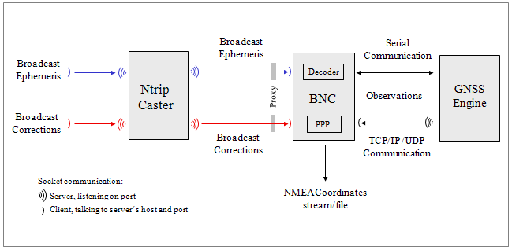
Figure 1: Flowchart, BNC connected to a GNSS rover for Precise Point Positioning
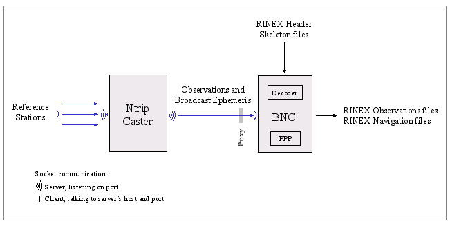
Figure 2: Flowchart, BNC converting RTCM streams to RINEX batches
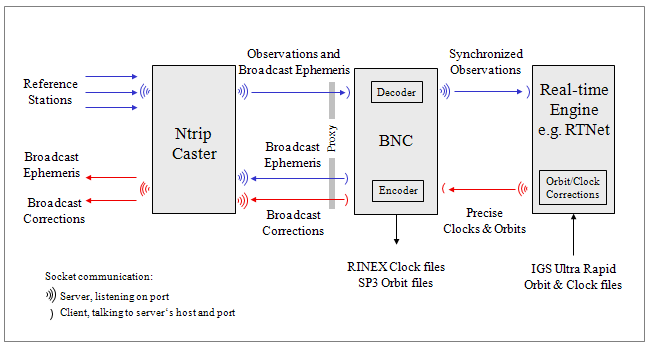
Figure 3: Flowchart, BNC feeding a real-time GNSS engine and uploading encoded Broadcast Corrections
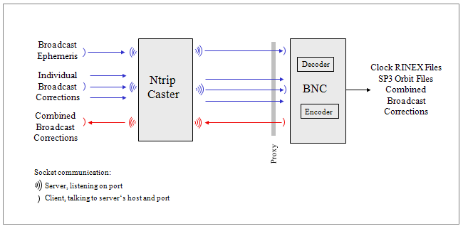
Figure 4: Flowchart, BNC combining Broadcast Correction streams
Although BNC is mainly a real-time tool to be operated online, it can be run offline
Unless it runs offline, BNC
The main window of BNC shows a 'Top menu bar' section, a 'Settings' sections with panels to set processing options, a 'Streams' section, a section for 'Log' tabs, and a 'Bottom menu bar' section, see figure below.
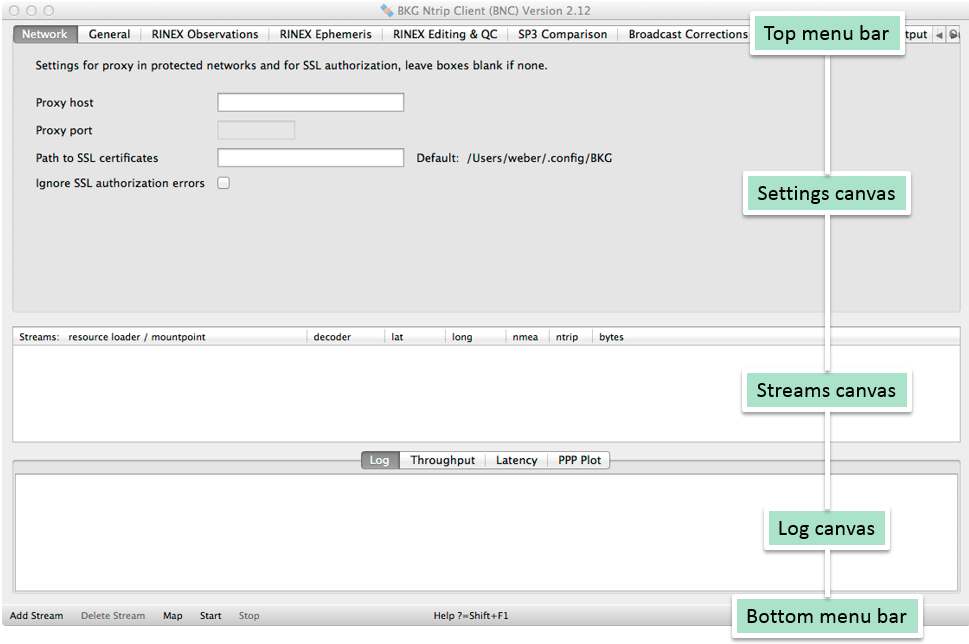
Figure 5: Sections on BNC's main window
Running BNC in interactive mode requires graphics support. This is also required in batch mode when producing plots. Windows and Mac OS X systems always support graphics. However, when using BNC in batch mode on Linux systems for producing plots, you need to make sure that at least a virtual X-Server like 'Xvfb' is installed and the '-display' command line option is used.
The usual handling of BNC is that you first select a number of streams ('Add Stream'). Any stream configured to BNC shows up on the 'Streams' canvas in the middle of BNC's main window. You then go through BNC's various configuration panels to set a combination of input, processing and output options before you start the program ('Start'). Most configuration panels are dedicated to a certain function of BNC. If the first option field on such a configuration panel is empty, the affected functionality is deactivated.
Records of BNC's activities are shown in the 'Log' tab which is part of the 'Log' canvas. The bandwidth consumption per stream, the latency of incoming observations, and a PPP time series for coordinate displacements are also part of that canvas and shown in the 'Throughput', 'Latency' and 'PPP Plot' tabs.
Configuration options are usually first set using BNC's Graphical User Interface (GUI), then saved in a configuration file. For routine operations in batch mode all of BNC's configuration options can be extracted from the configuration file and applied using the program's Command Line Interface (CLI).
Precompiled builds of BNC are available for MS Windows, Linux, and Mac OS X systems. They can be downloaded for installation from http://igs.bkg.bund.de/ntrip/download. Please ensure that you always use the latest released version of the program.
MS Windows Build: A dynamically compiled shared library build for Mircrosoft Windows systems is provided as Microsoft Installer (MSI) file. MSI files are used for installation, storage, and removal of programs. The BNC files are contained in a MSI package, which is used with the program's client-side installer service, an .EXE file, to open and install the program. We used the MinGW Version 4.4.0 compiler to create BNC for Windows. After installation your 'bnc.exe' file shows up e.g. under 'All Programs'.
Linux Build: Static library and shared library builds for BNC are provided for a selection of Linux distributions. Download the ZIP archive for a version which fits to your Linux system, unzip the archive and run the included BNC binary. A static build would be sufficient in case you do not want BNC to plot PPP results with Google Map (GM) or OpenStreetMap (OSM) maps in the background. GM/OSM usage requires BNC builds from shared libraries.
Mac OS X Build: A shared library 'Disk iMaGe' (DMG) file is provided for BNC on OS X systems; it also comes in a ZIP archive. The DMG file format is used in the Mac for distributing software. Mac install packages appear as a virtual disk drive. After download, when the DMG file icon is double clicked, the virtual drive is 'mounted' on the desktop. Install BNC by dragging the 'bnc.app' icon to your '/Applications' folder. To start BNC, double click on '/Applications/bnc.app'. You could also start BNC via Command Line Interface (CLI) using command '/Applications/bnc.app/Contents/MacOS/bnc'.
BNC has been written as Open Source and published under GNU General Public License (GPL). The latest source code can be checked out from Subversion repository http://software.rtcm-ntrip.org/svn/trunk/BNC. A ZIP archive available from http://igs.bkg.bund.de/ntrip/download provides the source code for BNC Version 2.12.0, developed using Qt Version 4.8.5.
The following describes how you can produce your own builds of BNC on MS Windows, Linux, and Mac systems. It is likely that BNC can also be compiled on other systems where a GNU compiler and Qt Version 4.8.5 or any later version is installed.
Static versus Shared Libraries
You can produce static or shared library builds of BNC. Static builds are sufficient in case you do not want BNC to produce track maps on top of Google Map (GM) or OpenStreetMap (OSM). GM/OSM usage would require the QtWebKit library which can only be part of BNC builds from shared Qt libraries. Hence, having a shared library Qt installation available is a precondition for producing a shared library build of BNC.
MS Windows Systems, Shared Library
This explains how to install a shared Qt 4.8.5 library on MS Windows systems to then create your own shared build of BNC.
set QTDIR=C:\Qt\4.8.5 set PATH=%PATH%;C:\MinGW\bin;C:\Qt\4.8.5\bin set QMAKESPEC=C:\Qt\4.8.5\mkspecs\win32-g++
configure -fast -webkit -release -nomake examples -nomake tutorial
-openssl -I C:\OpenSSL-Win32\include
mingw32-makeThis may take quite a long time. Don't worry if the compilation process runs into a problem after some time. It is likely that the libraries you require are already generated at that time.
qmake bnc.pro
mingw32-make
Steps (11)-(15) can be repeated whenever a BNC update becomes available. Running bnc.exe on a windows system requires (1) when using the NTRIP Version 2s option for stream transfer over TLS/SSL.
Linux Systems
On Linux systems you may use the following procedure to install a shared Qt version 4.8.5 library:
Download file 'qt-everywhere-opensource-src-4.8.5.tar.gz' (230 MB) available from https://download.qt.io/archive/qt/4.8/4.8.5/. Unzip file, extract tar archive and change to directory 'qt-everywhere-opensource-src-4.8.5'. Run commands
./configure -fast -webkit -nomake examples -nomake tutorial
-prefix /usr/local/Trolltech/Qt-4.8.5
gmake
gmake install
Qt will be installed into directory /usr/local/Trolltech/Qt-4.8.5. To reconfigure, run 'gmake confclean' and 'configure'. Note that the '-prefix' option allows you to specify a directory for saving the Qt libraries. This ensures that you do not run into conflicts with other Qt installations on your host. Note further that the following two lines
export QTDIR="/usr/local/Trolltech/Qt-4.8.5" export PATH="$QTDIR/bin:$PATH"need to be added either to $HOME/.bash_profile or $HOME/.bashrc. Once that is done, logout/login and start using Qt 4.8.5.
To compile the BNC program, you first download the source code from SVN repository http://software.rtcm-ntrip.org/svn/trunk/BNC. Go to directory BNC and run the following commands:
qmake bnc.pro makeYou will find a build of BNC in directory BNC.
Mac OS X Systems
Xcode and Qt Installation
Xcode and Qt are required to compile BNC on OS X. Both tools are freely available. Xcode can be downloaded from the App Store or the Apple Developer Connection website. Once installed, run Xcode, go to 'Preferences->Downloads' and install the Command Line Tools component. Qt can be downloaded from the Qt Project website. We suggest installing version 4.8.4 or higher. The Qt libraries for Mac can be downloaded from http://www.qt.io/download. Once downloaded, mount the disk image, run the Qt.mpkg package and follow instructions from the installation wizard.
Compiling BNC
The version of qmake supplied in the Qt binary package is configured to use the macx-xcode specification. This can be overridden with the '-spec macx-g++' option which makes it possible to use qmake to create a Makefile to be used by 'make'.
From the directory where bnc.pro is located, run 'qmake' to create the Makefile and then 'make' to compile the binary.
qmake -spec macx-g++ bnc.pro makeRefer to the following webpage for further information: http://doc.qt.io/qt-4.8/qmake-platform-notes.html.
Bundle Deployment
When distributing BNC it is necessary to bundle in all related Qt resources in the package. The Mac Deployment Tool has been designed to automate the process of creating a deployable application bundle that contains the Qt libraries as private frameworks. To use it, issue the following commands where bnc.app is located.
macdeployqt bnc.app -dmgRefer to the following webpage for further information: http://doc.qt.io/qt-4.8/deployment-mac.html.
Once a DMG file for BNC is created, you can double click it and install BNC by dragging the 'bnc.app' icon to your 'Applications' folder. To start BNC, double click on '/Aplications/bnc.app'.
As a default, configuration files for running BNC on Unix/Linux/Mac OS X systems are saved in directory '${HOME}/.config/BKG'. On Windows systems, they are typically saved in directory 'C:/Documents and Settings/Username/.config/BKG'. The default configuration filename is 'BNC.bnc'.
The default filename 'BNC.bnc' can be changed and the file content can easily be edited. On graphical user interfaces it is possible to Drag & Drop a configuration file icon to start BNC (not on Mac OS X systems). It is also possible to start and configure BNC via command line. Some configuration options can be changed on-the-fly. See annexed 'Command Line Help' for a complete set of configuration options.
BNC maintains configuration options at three different levels:
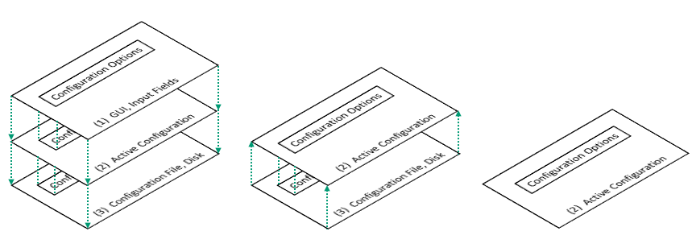
Figure 6: Management of configuration options in BNC:
| Left: | BNC in graphics mode; active configuration options are introduced through GUI input fields and finally saved on disk | |
| Middle: | BNC in 'no window' mode; active configuration options are read from disk | |
| Right: | BNC in 'no window' mode without configuration file; default configuration options can be overwritten via command line options |
Configuration options are usually specified using GUI input fields (1) after launching BNC. When hitting the 'Start' button, configuration options are transferred one level down to become BNC's active configuration (2), allowing the program to begin its operation. Pushing the 'Stop' button ends data processing so that the user can finally terminate BNC through 'File'->'Quit'->'Save Options' which saves processing options in a configuration file to disk (3). It is important to understand that:
BNC comes with a number of configuration examples which can be used on all operating systems. Copy the complete directory 'Example_Configs' which comes with the software to your disc. It includes sub-directories 'Input' and 'Output'. There are several ways to start BNC using one of the example configurations:
Although it's not a must, we suggest that you always create BNC configuration files with filename extension '.bnc'.
We furthermore suggest for convenience reasons that you configure your system to automatically start BNC when you double-click a file with the filename extension '.bnc'. The following describes what to do on MS Windows systems to associate the BNC program to such configuration files:
Some of the presented example configurations contain a user ID 'Example' with a password 'Configs' for accessing a few GNSS streams from public Ntrip Broadcasters. This free generic account is arranged for convenience reasons only. Please be so kind as to replace the generic account details as well as the place holder's 'User' and 'Pass' by the personal user ID and password you receive following an online registration through http://register.rtcm-ntrip.org.
Note that the account for an Ntrip Broadcaster is usually limited to pulling a specified maximum number of streams at the same time. As running some of the example configurations requires pulling several streams, it is suggested to make sure that you do not exceed your account's limits.
Make also sure that sub-directories 'Input' and 'Output' which are part of the example configurations exist on your system or adjust the affected example configuration options according to your needs.
Some BNC options require Antenna Phase Center variations as made available from IGS through so-called ANTEX files at ftp://igs.org/pub/station/general. An example ANTEX file 'igs08.atx' is part of the BNC package for convenience.
The example configurations assume that no proxy protects your BNC host. Should a proxy be operated in front of BNC then you need to introduce its name or IP and port number in the 'Network' panel.
(A) Working with Configuration Files
You should be able to run all configuration file examples without changing contained options. However, configuration 'Upload.bnc' is an exception because it requires an input stream from a connected network engine.
A basic function of BNC is streaming GNSS data over the open Internet using the Ntrip transport protocol. Employing IP streaming for satellite positioning goes back to the beginning of our century. Wolfgang Rupprecht has been the first person who developed TCP/IP server software under the acronym of DGPS-IP (Rupprecht 2000) and published it under GNU General Public License (GPL). While connecting marine beacon receivers to PCs with permanent access to the Internet he transmitted DGPS corrections in an RTCM format to support Differential GPS positioning over North America. With approximately 200 bits/sec the bandwidth requirement for disseminating beacon data was comparatively small. Each stream was transmitted over a unique combination of IP address and port. Websites informed about existing streams and corresponding receiver positions.
To cope with an increasing number of transmitting GNSS reference stations, the Federal Agency for Cartography and Geodesy (BKG) together with the Informatik Centrum Dortmund (ICD) in Germany developed a streaming protocol for satellite navigation data called 'Networked Transport of RTCM via Internet Protocol' (Ntrip). The protocol was built on top of the HTTP standard and included the provision of meta data describing the stream content. Any stream could now be globally transmitted over just one IP port: HTTP port 80. Stream availability and content details became part of the transport protocol. The concept was first published in 2003 (Weber and Honkala 2004, Weber et al. 2005a) and was based on three software components, namely an NtripServer pushing data from a reference station to an NtripCaster and an NtripClient pulling data from the stream splitting caster to support a rover receiver. (Note that from a socket-programmers perspective NtripServer and NtripClient both act as clients; only the NtripCaster operates as socket-server.) Ntrip could essentially benefit from Internet Radio developments. It was the ICECAST multimedia server, which provided the bases for BKG's 'Professional Ntrip Broadcaster' with software published first in 2003 and of course again as Open Source under GPL.
For BKG as a governmental agency, making Ntrip an Open Industry Standard has been an objective from the very beginning. The 'Radio Technical Commission for Maritime Services' (RTCM) accepted 'Ntrip Version 1' in 2004 as 'RTCM Recommended Standard' (Weber et al. 2005b). Nowadays there is almost no geodetic GNSS receiver which does not come with integrated NtripClient and NtripServer functionality as part of the firmware. Hundreds of NtripCaster implementations are operated world-wide for highly accurate satellite navigation through RTK networks. Thousands of reference stations upload observations via NtripServer to central computing facilities for any kind of NtripClient application. In 2011 'Ntrip Version 2' was released (RTCM SC-104 2011) which cleared and fixed some design problems and HTTP protocol violations. It also supports TCP/IP via SSL and adds optional communication over RTSP/RTP and UDP.
With the advent of Ntrip as an open streaming standard, BKG's interest turned towards taking advantage from free real-time access to GNSS observations. International Associations such as the IAG Reference Frame Sub Commissions for Africa (AFREF), Asia & Pacific (APREF), Europe (EUREF), North America (NAREF) Latin America & Caribbean (SIRGAS), and the International GNSS Service (IGS) maintain continental or even global GNSS networks with the majority of modern receivers supporting Ntrip stream upload. Through operating BKG's NtripCaster software, these networks became extremely valuable sources of real-time GNSS information. In 2005, this was the starting point for developing the 'BKG Ntrip Client' (BNC) as a multi-stream Open Source NtripClient that allows pulling hundreds of streams simultaneously from any number of NtripCaster installations world-wide. Decoding incoming RTCM streams and output observations epoch by epoch via IP port to feed a real-time GNSS network engine became BNC's first and foremost ability (Weber and Mervart 2009). Converting decoded streams to short high-rate RINEX files to assist near real-time applications became a welcome by-product right from the start of this development.
Adding real-time Precise Point Positioning (PPP) support to BNC began in 2010 as an important completion in view of developing an Open RTCM Standard for that. According to the State Space Representation (SSR) model, new Version 3 messages are proposed to provide e.g. satellite orbit and clock corrections and ionospheric corrections as well as biases for code and phase data. The ultimate goal for SSR standardization is to reach centimeter level accuracy within seconds as an alternative to Network RTK methods such as VRS, FKP, and MAC. Because of interoperability aspects, an Open Standard in this area is of particular interest for clients. Regarding stand-alone PPP in BNC, it is worth mentioning that the program is not and can never be in competition with a receiver manufacturer's proprietary solution. Only software or services that are part of a receiver firmware could have the potential of becoming a thread for commercial interests. However, implementing or not implementing an Open PPP approach in a firmware is and will always remain a manufacturer's decision.
Implementing some post processing capability is essential for debugging real-time software in case of problems. So certain real-time options in BNC were complemented to work offline through reading data from files. Moreover, beginning in 2012, the software was extended to support Galileo, BeiDou, and QZSS besides GPS and GLONASS. With that, the Open Source tool BNC could be used for RINEX Version 3 file editing, concatenation and quality checks, a post processing functionality demanded by the IGS Multi-GNSS Experiment and not really covered at that time by UNAVCO's famous TEQC program with its limitation on GPS.
Over the years, the BNC Subversion (SVN) software archive received over seven thousand commits made by 11 contributors representing about one hundred thirty thousand lines of code. The well-established, mature codebase is mostly written in C++ language. Its publication under GNU GPL is thought to be well-suited for test, validation and demonstration of new approaches in precise real-time satellite navigation when IP streaming is involved. Commissioned by a German governmental agency, the overall intention has been to push the development of RTCM Recommended Standards to the benefit of IAG institutions and services such as IGS and the interested public in general.
In February 2014 the overall responsibility at BKG for the concept and realization of BNC was handed over from Georg Weber to Axel Rülke. He is in charge now for guiding the application and further evolution of the software in view of appearing new satellite navigation systems and services.
The general documentation approach is to create a separate chapter for each processing option in a sequence which follows the layout of BNC's Graphical User Interface (GUI). The advantage is that searching for help by means of the document's Table of Contents (TOC) is quite convenient. A rather comprehensive number of TOC entries is the accepted downside of this approach.
The following chapters describe how to set BNC program options. They explain the 'Top Menu Bar', the 'Settings Canvas' with the processing options, the content of the 'Streams Canvas' and 'Logging Canvas', and the 'Bottom Menu Bar'.
The top menu bar allows selecting a font for the BNC windows, save configured options, or quit the program execution. It also provides access to the program's documentation.
The 'File' button lets you
The 'Help' button provides access to
You may need to specify a proxy when running BNC in a protected network. You may also like to use the Transport Layer Security (TLS) and its predecessor, Secure Sockets Layer (SSL) cryptographic protocols for secure Ntrip communication over the Internet.
If you are running BNC within a protected Local Area Network (LAN), you might need to use a proxy server to access the Internet. Enter your proxy server IP and port number in case one is operated in front of BNC. If you do not know the IP and port of your proxy server, check the proxy server settings in your Internet browser or ask your network administrator.
Note that IP streaming is often not allowed in a LAN. In this case you need to ask your network administrator for an appropriate modification of the local security policy or for the installation of a TCP relay to the Ntrip Broadcaster you need to access. If this is not possible, you might need to run BNC outside your LAN on a host that has unobstructed connection to the Internet.
Communication with an Ntrip Broadcaster over Secure Sockets Layer (SSL) as well as the download of RINEX skeleton files when available from HTTPS websites requires the exchange of client and/or server certificates. Specify the path to a directory where you save certificates on your system. You may like to check out http://software.rtcm-ntrip.org/wiki/Certificates for a list of known Ntrip Server certificates. You may also just try communication via SSL to check out whether this is supported by the involved Ntrip Broadcaster.
SSL communication may involve queries coming from the Ntrip Broadcaster or from a HTTPS website hosting RINEX skeletons. Such a query could show up under BNC's 'Log' tab especially when self-signed SSL certificates are used. Example:
SSL Error Server Certificate Issued by: GNSS Data Center BKG (Bundesamt für Geodäsie und Kartographie) Cannot be verified The issuer certificate of a locally looked up certificate could not be found The root CA certificate is not trusted for this purpose No certificates could be verifiedQueries should not be received by a client when a server uses official SSL certificates.
Tick 'Ignore SSL authorization errors' if you generally trust the server and do not want to be bothered with this. Note that SSL communication is usually done over port 443.
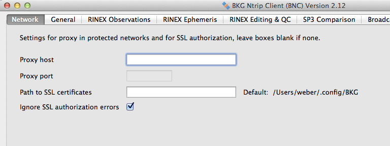
Figure 7: BNC's 'Network' panel configured to ignore eventually occurring SSL error messages
The following defines general settings for BNC's logfile, file handling, reconfiguration on-the-fly, and auto-start.
Records of BNC's activities are shown in the 'Log' tab on the bottom of the main window. These logs can be saved into a file when a valid path is specified in the 'Logfile (full path)' field. The logfile name will automatically be extended by a string '_YYMMDD' for the current date. This leads to series of daily logfiles when running BNC continuously. Message logs cover the communication status between BNC and the Ntrip Broadcaster as well as problems that may occur in the communication link, stream availability, stream delay, stream conversion etc. All times are given in UTC. The default value for 'Logfile (full path)' is an empty option field, meaning that BNC logs will not be saved into a file.
The following is an example for the content of a logfile written by BNC when operated in Single Point Positioning (SPP) mode:
15-06-30 11:40:17 ========== Start BNC v2.12 (MAC) ========== 15-06-30 11:40:17 Panel 'PPP' active 15-06-30 11:40:17 CUT07: Get data in RTCM 3.x format 15-06-30 11:40:17 RTCM3EPH: Get data in RTCM 3.x format 15-06-30 11:40:17 Configuration read: PPP.conf, 2 stream(s) 15-06-30 11:40:21 2015-06-30_11:40:19.000 CUT07 X = -2364337.6814 Y = 4870283.8110 Z = -3360808.3085 NEU: -0.0000 -0.0000 -0.0000 TRP: +2.4026 -0.0001 15-06-30 11:40:22 2015-06-30_11:40:20.000 CUT07 X = -2364337.6853 Y = 4870283.8130 Z = -3360808.3082 NEU: +1.1639 +0.6988 -2.1178 TRP: +2.4018 +0.0003 15-06-30 11:40:23 2015-06-30_11:40:21.000 CUT07 X = -2364337.6862 Y = 4870283.8155 Z = -3360808.3107 NEU: +0.1317 -0.4655 -4.4614 TRP: +2.4009 +0.0009 15-06-30 11:40:24 2015-06-30_11:40:22.000 CUT07 X = -2364337.6864 Y = 4870283.8106 Z = -3360808.3099 NEU: +0.1543 +0.2121 -1.0190 TRP: +2.4022 +0.0009 15-06-30 11:40:25 2015-06-30_11:40:23.000 CUT07 X = -2364337.6861 Y = 4870283.8111 Z = -3360808.3105 NEU: -0.9782 +0.0916 -2.3544 TRP: +2.4017 +0.0013 15-06-30 11:40:26 2015-06-30_11:40:24.000 CUT07 X = -2364337.6884 Y = 4870283.8123 Z = -3360808.3103 NEU: -0.5606 -0.0938 -1.9498 TRP: +2.4018 +0.0016 15-06-30 11:40:27 2015-06-30_11:40:25.000 CUT07 X = -2364337.6913 Y = 4870283.8133 Z = -3360808.3122 NEU: -0.1799 -0.1525 -4.8142 TRP: +2.4007 +0.0025 15-06-30 11:40:28 2015-06-30_11:40:26.000 CUT07 X = -2364337.6919 Y = 4870283.8171 Z = -3360808.3184 NEU: +0.7497 +0.7994 -2.0363 TRP: +2.4018 +0.0032 15-06-30 11:40:29 2015-06-30_11:40:27.000 CUT07 X = -2364337.6923 Y = 4870283.8196 Z = -3360808.3230 NEU: +0.8099 +0.5592 -2.8552 TRP: +2.4015 +0.0039 15-06-30 11:40:30 2015-06-30_11:40:28.000 CUT07 X = -2364337.6960 Y = 4870283.8219 Z = -3360808.3222 NEU: -0.2952 +1.9737 -4.5565 TRP: +2.4008 +0.0047 15-06-30 11:40:31 2015-06-30_11:40:29.000 CUT07 X = -2364337.6982 Y = 4870283.8209 Z = -3360808.3209 NEU: +0.3563 +2.1067 -5.5327 TRP: +2.4005 +0.0057 ...
When BNC is started, new files are created by default and existing files with the same name will be overwritten. However, users might want to append existing files following a restart of BNC, a system crash or a BNC crash. Tick 'Append files' to continue with existing files and keep what has been recorded so far. Note that option 'Append files' affects all types of files created by BNC.
When operating BNC online in 'no window' mode (command line option -nw), some configuration options can nevertheless be changed on-the-fly without interrupting the running process. For that, you force the program to reread parts of its configuration in pre-defined intervals from disk. Select '1 min', '1 hour', or '1 day' to let BNC reread on-the-fly changeable configuration options every full minute, hour, or day. This lets in-between edited options become effective without interrupting uninvolved threads.
Note that following configuration options saved on disk can be changed/edited on-the-fly while BNC is already processing data:
You may like to auto-start BNC at startup time in window mode with pre-assigned configuration options. This may be required e.g. immediately after booting your system. Tick 'Auto start' to supersede the usage of the 'Start' button. Make sure that you maintain a link to BNC for that in your Autostart directory (Windows systems) or call BNC in a script below directory /etc/init.d (Unix/Linux/Mac OS X systems).
See BNC's command line option '-nw' for an auto-start of BNC in 'no window' mode.
BNC can save all data coming in through various streams in one daily file. The information is recorded in the specified 'Raw output file' in the received order and format. This feature allows a BNC user to run the PPP option offline with observations, Broadcast Corrections, and Broadcast Ephemeris being read from a previously saved file. It supports the offline repetition of a real-time situation for debugging purposes (Record & Replay functionality) and is not meant for post processing.
Data will be saved in blocks in the received format separated by ASCII time stamps like (example):
2010-08-03T18:05:28 RTCM3EPH RTCM_3 67
This example block header tells you that 67 bytes were saved in the data block following this time stamp. The information in this block is encoded in RTCM Version 3 format, comes from mountpoint RTCM3EPH and was received at 18:05:28 UTC on 2010-08-03. BNC adds its own time stamps in order to allow the reconstruction of a recorded real-time situation.
The default value for 'Raw output file' is an empty option field, meaning that BNC will not save all raw data into one single daily file.
Observations will be converted to RINEX if they come in either RTCM Version 2 or RTCM Version 3 format. Depending on the RINEX version and incoming RTCM message types, files generated by BNC may contain data from GPS, GLONASS, Galileo, SBAS, QZSS, and/or BDS (BeiDou). In case an observation type is listed in the RINEX header but the corresponding observation is unavailable, its value is set to zero '0.000' or left blank. Note that the 'RINEX TYPE' field in the RINEX Version 3 Observation file header is always set to 'M(MIXED)' or 'Mixed' even if the file only contains data from one system.
It is important to understand that converting RTCM streams to RINEX files requires a priori information on observation types for specifying a complete RINEX header. Regarding the RINEX Version 2 file header, BNC simply introduces all observation types defined in the Version 2 standard and later reports "0.000" for observations which are not received. However, following this approach is not possible for RINEX Version 3 files from RTCM Version 3 MSM streams because of the huge number of observation types, which might in principle show up. The solution implemented in BNC is to start with RINEX Version 3 observation type records from skeleton files (see section 'Skeleton Extension' and 'Skeleton Mandatory') and switch to a default selection of observation types when such file is not available or does not contain the required information. The following is the default selection of observation types specified for a RINEX Version 3 file:
C 9 C2I L2I S2I C6I L6I S6I C7I L7I S7I SYS / # / OBS TYPES
E 12 C1X L1X SX1 C5X L5X SX5 C7X L7X SX7 C8X L8X SX8 SYS / # / OBS TYPES
G 15 C1C L1C S1C C1W L1W S1W C2X L2X S2X C2W L2W S2W C5X SYS / # / OBS TYPES
L5X S5X SYS / # / OBS TYPES
J 24 C1C L1C S1C C1S L1S S1S C1L L1L S1L C1X L1X S1X C2S SYS / # / OBS TYPES
L2S S2S C2L L2L S2L C2X L2X S2X C5X L5X S5X SYS / # / OBS TYPES
R 12 C1C L1C S1C C1P L1P S1P C2C L2C S2C C2P L2P S2P SYS / # / OBS TYPES
S 9 C1C L1C S1C C5I L5I S5I C5Q L5Q S5Q SYS / # / OBS TYPES
Please note that RTCM Version 3 messages 1084 for GLONASS observations do not contain the GLONASS channel numbers. These observation messages can only be converted to RINEX when you add messages which include the channel numbers. This could be done by means of an additional stream carrying 1087 GLONASS observation messages or an additional stream carrying 1020 GLONASS ephemeris messages. You could also consider setting up a stream which contains both, the 1084 and the 1020 messages.
The screenshot below shows an example setup of BNC when converting streams to RINEX. Streams are coming from various Ntrip Broadcasters as well as from a serial communication link. Specifying a decoder string 'ZERO' would mean to not convert the affected stream but save its content as received. The 'SSL Error' recorded in the 'Log' tab is caused by the fact that observation stream downloads from IGS and MGEX Broadcasters initiate the download of RINEX skeleton files from a HTTPS (TLS/SSL) website and BNC has been configured in this example to ignore SSL errors as shown in the preceding 'Network' panel screenshot.
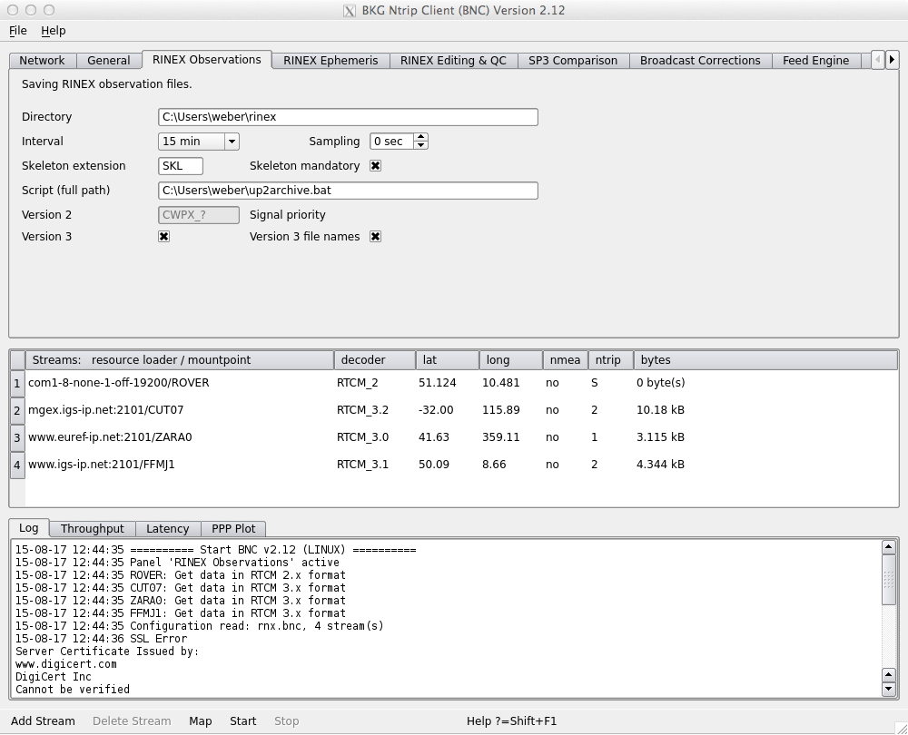
Figure 8: BNC translating incoming observation streams to 15 min RINEX Version 3 Observation files
The default for RINEX filenames in BNC follows the convention of RINEX Version 2. However, the software provides options to alternatively follow the filename convention of RINEX Version 3. RINEX Version 2 filenames are derived by BNC from the first 4 characters of the corresponding stream's mountpoint (4-Char Station ID). For example, data from mountpoints FRANKFURT and WETTZELL will have hourly RINEX Observation files named
FRAN{ddd}{h}.{yy}O
WETT{ddd}{h}.{yy}O
where 'ddd' is the day of year, 'h' is a letter which corresponds to an hour long UTC time block and 'yy' is the year.
If there is more than one stream with identical 4-Char Station ID (same first 4 characters for their mountpoints), the mountpoint strings are split into two sub-strings and both become part of the RINEX filename. For example, when simultaneously retrieving data from mountpoints FRANKFURT and FRANCE, their hourly RINEX Version 2 Observation files are named as
FRAN{ddd}{h}_KFURT.{yy}O
FRAN{ddd}{h}_CE.{yy}O
If several streams show up with exactly the same mountpoint name (example: BRUS0 from www.euref-ip.net and BRUS0 from www.igs-ip.net), BNC adds an integer number to the filename, leading e.g. to hourly RINEX Version 2 Observation files like
BRUS{ddd}{h}_0.{yy}O
BRUS{ddd}{h}_1.{yy}O
Note that RINEX Version 2 filenames for all intervals less than 1 hour follow the filename convention for 15 minutes RINEX Version 2 Observation files e.g.
FRAN{ddd}{h}{mm}.{yy}O
where 'mm' is the starting minute within the hour.
In case of RINEX Version 3 filenames, the following convention holds:
| Filename Parameter | # Char. | Meaning |
| Name | 9 | Site, station and country code |
| S | 1 | Data source |
| Start Time | 11 | YYYYDDDHHMM |
| Period | 3 | File period |
| Obs. Freq. | 3 | Observation frequency |
| Content | 2 | Content type |
| Format | 3 | File format |
| Compression | 2-3 | Compression method (optional) |
Example for Mixed RINEX Version 3 GNSS observation filename, file containing 1 hour of data, one observation every second, 'MO' standing for 'Mixed Observations':
ALGO00CAN_R_20121601000_01H_01S_MO.rnx
Note that filename details are produced from the stream's mountpoint as well as corresponding BNC settings and meta data from the Ntrip Broadcaster source-table.
Here you can specify the path to where the RINEX Observation files will be stored. If the specified directory does not exist, BNC will not create RINEX Observation files. Default value for 'Directory' is an empty option field, meaning that no RINEX Observation files will be written.
Select the length of the RINEX Observation file to be generated. The default value is 15 minutes.
Select the RINEX Observation sampling interval in seconds. A value of zero '0' tells BNC to store all received epochs into RINEX. This is the default value.
Whenever BNC starts to generate RINEX Observation files (and then once every day at midnight), it first tries to retrieve information needed for RINEX headers from so-called public RINEX header skeleton files which are derived from sitelogs. An HTTP or HTTPS link to a directory containing these skeleton files may be available through data field number 7 of the affected NET record in the source-table. See http://www.epncb.oma.be:80/stations/log/skl/brus.skl for an example of a public RINEX header skeleton file for EPN station Brussels. Note that the download of RINEX skeleton files from HTTPS websites requires the exchange of client and/or server certificates. Clarify 'SSL' options offered through panel 'Network' for details.
Sometimes public RINEX header skeleton files are not available, their content is not up to date, or you need to put additional/optional records in the RINEX header. For that, BNC allows using personal skeleton files that contain the header records you would like to include. You can derive a personal RINEX header skeleton file from the information given in an up to date sitelog. A file in the RINEX Observations 'Directory' with a 'Skeleton extension' suffix is interpreted by BNC as a personal RINEX header skeleton file for the corresponding stream.
When producing RINEX Observation files from mountpoints (examples) 'BRUS0', 'FRANKFURT', and 'WETTZELL', the following skeleton filenames would be accepted
BRUS.skl FRAN.skl WETT.skl
if 'Skeleton extension' is set to 'skl'.
Note the following regulations regarding personal RINEX header skeleton files:
If neither a public nor a personal RINEX header skeleton file is available for BNC, a default header will be used.
The following is a skeleton example for a RINEX file:
OBSERVATION DATA M (MIXED) RINEX VERSION / TYPE
PGM / RUN BY / DATE
CUT0 MARKER NAME
59945M001 MARKER NUMBER
5023K67889 TRIMBLE NETR9 5.01 REC # / TYPE / VERS
4928353386 TRM59800.00 SCIS ANT # / TYPE
-2364337.2699 4870285.5624 -3360809.8398 APPROX POSITION XYZ
0.0000 0.0000 0.0000 ANTENNA: DELTA H/E/N
gnss@curtin.edu.au CUT OBSERVER / AGENCY
C 10 C1I L1I D1I S1I C6I L6I S6I C7I L7I S7I SYS / # / OBS TYPES
E 13 C1X L1X D1X S1X C5X L5X S5X C7X L7X S7X C8X L8X S8X SYS / # / OBS TYPES
G 13 C1C L1C D1C S1C C2W L2W S2W C2X L2X S2X C5X L5X S5X SYS / # / OBS TYPES
J 19 C1C L1C D1C S1C C1X L1X S1X C1Z L1Z S1Z C2X L2X S2X SYS / # / OBS TYPES
C5X L5X S5X C6L L6L S6L SYS / # / OBS TYPES
R 13 C1C L1C D1C S1C C1P L1P S1P C2C L2C S2C C2P L2P S2P SYS / # / OBS TYPES
S 7 C1C L1C D1C S1C C5I L5I S5I SYS / # / OBS TYPES
PORTIONS OF THIS HEADER GENERATED BY THE IGS CB FROM COMMENT
SITELOG cut0_20150507.log COMMENT
END OF HEADER
Tick check box 'Skeleton mandatory' in case you want that RINEX files are only produced when skeleton files are available for BNC. If no skeleton file is available for a particular source, then no RINEX observation file will be produced from the affected stream.
Note that a skeleton file contains RINEX header information such as receiver and antenna types. In case of stream conversion to RINEX Version 3, a skeleton file should also contain information on potentially available observation types. A missing skeleton file will force BNC to only save a default set of RINEX 3 observation types.
Whenever a RINEX Observation file is saved, you might want to compress, copy or upload it immediately via FTP. BNC allows you to execute a script/batch file to carry out these operations. To do that, specify the full path to such script/batch file. BNC will pass the RINEX Observation file path to the script as a command line parameter (%1 on Windows systems, $1 on Unix/Linux/Mac OS X systems).
The triggering event for calling the script or batch file is the end of a RINEX Observation file 'Interval'. If that is overridden by a stream outage, the triggering event is the stream reconnection.
As an alternative to initiating file uploads through BNC, you may like to call an upload script or batch file through your crontable or Task Scheduler (independent from BNC) once every one or two minutes after the end of each RINEX file 'Interval'.
GNSS observation data are generally hold available within BNC according to attributes as defined in RINEX Version 3. These attributes describe the tracking mode or channel when generating the observation signals. Capital letters specifying signal generation attributes are A, B, C, D, I, L, M, N, P, Q, S, W, X, Y, and Z, see RINEX Version 3 documentation. Although RINEX Version 3 with its signal generation attributes is the internal default processing format for BNC, there are two applications where the program is explicitly required to produce data files in RINEX Version 2 format:
Signal priorities can be specified as equal for all systems, as system specific or as system and frequency specific. For example:
The default 'Signal priority' list is defined as follows:
You may like to specify your own 'Signal priority' string(s) for producing RINEX Version 2 files. If you neither convert observation streams to RINEX Version 2 nor concatenate RINEX Version 3 to Version 2 files, then the 'Version 2' option is meaningless.
The default format for RINEX Observation files is RINEX Version 2.11. Select RINEX 'Version 3' if you would like to save RTCM Version 3 observation streams in RINEX Version 3.03 format.
Note that it is possible to force an RTCM Version 2 stream to be saved in RINEX Version 3 file format. However, this is not recommended because such stream cannot be precisely mapped to RINEX Version 3 as the required information on tracking modes (observation attributes) is not part of RTCM Version 2.
Tick check box 'Version 3 filenames' to let BNC create so-called extended filenames following the RINEX Version 3 standard.
Default is an empty check box, meaning to still use filenames following the RINEX Version 2 standard although the file content is saved in RINEX Version 3 format.
Broadcast Ephemeris can be saved in RINEX Navigation files when received e.g. via RTCM Version 3 message types 1019 (GPS) or 1020 (GLONASS) or 1044 (QZSS) or 1043 (SBAS) or 1045 and 1046 (Galileo) or 63 (BDS/BeiDou, tentative message number). The filename convention follows the details given in section 'RINEX Filenames' except that the first four characters are 'BRDC'.
For RINEX Version 2 Navigation files the last character is 'N' or 'G' for GPS or GLONASS ephemeris in two separate files.
Regarding RINEX Version 3 you will find all ephemeris data for GPS, GLONASS, Galileo, SBAS, QZSS, and BDS gathered in one Navigation file.
The following is an example for a RINEX Version 3 Navigation filename. The file contains one day's data. 'MN' stands for 'Multi Constellation Navigation' data.
BRDC00DEU_S_20121600000_01D_MN.rnx
Note that streams dedicated to carry Broadcast Ephemeris messages in RTCM Version 3 format in high repetition rates are listed on http://igs.bkg.bund.de/ntrip/ephemeris.
Note further that BNC will ignore incorrect or outdated Broadcast Ephemeris data when necessary, leaving a note 'WRONG EPHEMERIS' or 'OUTDATED EPHEMERIS' in the logfile.
Specify a path for saving Broadcast Ephemeris data in RINEX Navigation files. If the specified directory does not exist, BNC will not create RINEX Navigation files. Default value for Ephemeris 'Directory' is an empty option field, meaning that no RINEX Navigation files will be created.
Select the length of RINEX Navigation files. The default value is '1 day'.
BNC can output Broadcast Ephemeris in RINEX Version 3 format on your local host (IP 127.0.0.1) through an IP 'Port'. Specify an IP port number to activate this function. The default is an empty option field, meaning that no ASCII ephemeris output via IP port is generated.
The source code for BNC comes with an example Perl script 'test_tcpip_client.pl' that allows you to read BNC's ephemeris ASCII output from the IP port.
Default format for RINEX Navigation files containing Broadcast Ephemeris is RINEX Version 2.11. Select 'Version 3' if you want to save the ephemeris data in RINEX Version 3.03 format.
Note that this does not concern the Broadcast Ephemeris output through IP port, which is always in RINEX Version 3.03 format.
Tick check box 'Version 3 filenames' to let BNC create so-called extended filenames following the RINEX Version 3 standard.
Default is an empty check box, meaning to still use filenames following the RINEX Version 2 standard although the file content is saved in RINEX Version 3 format.
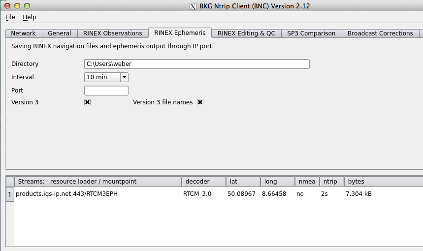
Figure 9: BNC converting Broadcast Ephemeris stream to RINEX Version 3 Navigation files
Besides stream conversion from RTCM to RINEX, BNC allows editing RINEX files or concatenate their content. RINEX Observation and Navigation files can be handled. BNC can also carry out a RINEX file Quality Check. In summary and besides Stream Translation, this functionality in BNC covers
Select an action. Options are 'Edit/Concatenate' and 'Analyze'.
Specify full path to input RINEX Observation file(s), and
specify full path to input RINEX Navigation file(s).
When specifying several input files, BNC will concatenate their contents. In case of RINEX Observation input files with different observation type header records, BNC will output only one set of adjusted observation type records in the RINEX header which fits to the whole file content.
Note that you may specify several RINEX Version 2 Navigation files for GPS and GLONASS.
If 'Edit/Concatenate' is selected, specifying the full path to output RINEX Observation file(s) and specifying the full path to output RINEX Navigation file(s) is optional. Default are empty option fields, meaning that no RINEX files will be saved on disk.
Specify the name of a logfile to save information on RINEX file Editing/Concatenation or Analysis. Default is an empty option field, meaning that no logfile will be saved.
Note that logfiles from analyzing RINEX files may become quite large. Hence, BNC provides an option 'Summary only' to limit logfile content to some essential information in case 'Action' is set to 'Analyze'. The following is an example for a RINEX quality check analysis logfile:
QC Format Version : 1.1
Navigation File(s) : BRDC2520.15P
Ephemeris : 2985 OK 0 BAD
Observation File : CUT02520.15O
RINEX Version : 3.03
Marker Name : CUT0
Marker Number : 59945M001
Receiver : TRIMBLE NETR9
Antenna : TRM59800.00 SCIS
Position XYZ : -2364337.2699 4870285.5624 -3360809.8398
Antenna dH/dE/dN : 0.0000 0.0000 0.0000
Start Time : 2015-09-09 13.04.50.0
End Time : 2015-09-09 23.59.58.0
Interval : 1
Navigation Systems : 6 C E G J R S
Observation Types C: C2I L2I D2I S2I C6I L6I S6I C7I L7I S7I
Observation Types E: C1X L1X D1X S1X C5X L5X S5X C7X L7X S7X C8X L8X S8X
Observation Types G: C1C L1C D1C S1C C2W L2W S2W C2X L2X S2X C5X L5X S5X
Observation Types J: C1C L1C D1C S1C C1X L1X S1X C1Z L1Z S1Z C2X L2X S2X C5X L5X S5X C6L L6L S6L
Observation Types R: C1C L1C D1C S1C C1P L1P S1P C2C L2C S2C C2P L2P S2P
Observation Types S: C1C L1C D1C S1C C5I L5I S5I
C: Satellites: 13
C: Signals : 3 2I 6I 7I
C: 2I: Observations : 396567 ( 511017) 77.60 %
C: 2I: Slips (file+found): 0 + 0
C: 2I: Gaps : 8676
C: 2I: Mean SNR : 41.7
C: 2I: Mean Multipath : 0.42
C: 6I: Observations : 396233 ( 511017) 77.54 %
C: 6I: Slips (file+found): 0 + 0
C: 6I: Gaps : 8761
C: 6I: Mean SNR : 44.4
C: 6I: Mean Multipath : 0.00
C: 7I: Observations : 396233 ( 511017) 77.54 %
C: 7I: Slips (file+found): 0 + 0
C: 7I: Gaps : 8761
C: 7I: Mean SNR : 43.6
C: 7I: Mean Multipath : 0.30
E: Satellites: 5
E: Signals : 4 1X 5X 7X 8X
E: 1X: Observations : 74468 ( 196545) 37.89 %
E: 1X: Slips (file+found): 0 + 2
E: 1X: Gaps : 2758
E: 1X: Mean SNR : 45.1
E: 1X: Mean Multipath : 0.37
E: 5X: Observations : 74422 ( 196545) 37.87 %
E: 5X: Slips (file+found): 0 + 2
E: 5X: Gaps : 2785
E: 5X: Mean SNR : 45.2
E: 5X: Mean Multipath : 0.32
E: 7X: Observations : 74422 ( 196545) 37.87 %
E: 7X: Slips (file+found): 0 + 0
E: 7X: Gaps : 2785
E: 7X: Mean SNR : 44.2
E: 7X: Mean Multipath : 0.00
E: 8X: Observations : 74429 ( 196545) 37.87 %
E: 8X: Slips (file+found): 0 + 0
E: 8X: Gaps : 2784
E: 8X: Mean SNR : 49.9
E: 8X: Mean Multipath : 0.00
G: Satellites: 28
G: Signals : 4 1C 2W 2X 5X
G: 1C: Observations : 439952 ( 1100652) 39.97 %
G: 1C: Slips (file+found): 0 + 21
G: 1C: Gaps : 10901
G: 1C: Mean SNR : 44.0
G: 1C: Mean Multipath : 0.63
G: 2W: Observations : 422560 ( 1100652) 38.39 %
G: 2W: Slips (file+found): 0 + 19
G: 2W: Gaps : 11133
G: 2W: Mean SNR : 31.1
G: 2W: Mean Multipath : 0.42
G: 2X: Observations : 205305 ( 1100652) 18.65 %
G: 2X: Slips (file+found): 0 + 10
G: 2X: Gaps : 7269
G: 2X: Mean SNR : 43.3
G: 2X: Mean Multipath : 0.47
G: 5X: Observations : 120638 ( 1100652) 10.96 %
G: 5X: Slips (file+found): 0 + 0
G: 5X: Gaps : 3330
G: 5X: Mean SNR : 49.9
G: 5X: Mean Multipath : 0.00
J: Satellites: 1
J: Signals : 6 1C 1X 1Z 2X 5X 6L
J: 1C: Observations : 38040 ( 39309) 96.77 %
J: 1C: Slips (file+found): 0 + 0
J: 1C: Gaps : 1003
J: 1C: Mean SNR : 49.0
J: 1C: Mean Multipath : 0.33
J: 1X: Observations : 38040 ( 39309) 96.77 %
J: 1X: Slips (file+found): 0 + 0
J: 1X: Gaps : 1003
J: 1X: Mean SNR : 51.5
J: 1X: Mean Multipath : 0.32
J: 1Z: Observations : 38040 ( 39309) 96.77 %
J: 1Z: Slips (file+found): 0 + 0
J: 1Z: Gaps : 1003
J: 1Z: Mean SNR : 48.4
J: 1Z: Mean Multipath : 0.40
J: 2X: Observations : 38040 ( 39309) 96.77 %
J: 2X: Slips (file+found): 0 + 0
J: 2X: Gaps : 1003
J: 2X: Mean SNR : 48.7
J: 2X: Mean Multipath : 0.31
J: 5X: Observations : 38040 ( 39309) 96.77 %
J: 5X: Slips (file+found): 0 + 0
J: 5X: Gaps : 1003
J: 5X: Mean SNR : 53.0
J: 5X: Mean Multipath : 0.00
J: 6L: Observations : 38040 ( 39309) 96.77 %
J: 6L: Slips (file+found): 0 + 0
J: 6L: Gaps : 1003
J: 6L: Mean SNR : 50.6
J: 6L: Mean Multipath : 0.00
R: Satellites: 23
R: Signals : 4 1C 1P 2C 2P
R: 1C: Observations : 323918 ( 904107) 35.83 %
R: 1C: Slips (file+found): 0 + 44
R: 1C: Gaps : 7295
R: 1C: Mean SNR : 44.9
R: 1C: Mean Multipath : 0.77
R: 1P: Observations : 323761 ( 904107) 35.81 %
R: 1P: Slips (file+found): 0 + 44
R: 1P: Gaps : 7305
R: 1P: Mean SNR : 43.4
R: 1P: Mean Multipath : 0.58
R: 2C: Observations : 323521 ( 904107) 35.78 %
R: 2C: Slips (file+found): 0 + 44
R: 2C: Gaps : 7305
R: 2C: Mean SNR : 40.8
R: 2C: Mean Multipath : 0.56
R: 2P: Observations : 321751 ( 904107) 35.59 %
R: 2P: Slips (file+found): 0 + 37
R: 2P: Gaps : 7317
R: 2P: Mean SNR : 40.3
R: 2P: Mean Multipath : 0.49
S: Satellites: 4
S: Signals : 2 1C 5I
S: 1C: Observations : 152158 ( 157236) 96.77 %
S: 1C: Slips (file+found): 0 + 1
S: 1C: Gaps : 4013
S: 1C: Mean SNR : 40.4
S: 1C: Mean Multipath : 0.75
S: 5I: Observations : 76078 ( 157236) 48.38 %
S: 5I: Slips (file+found): 0 + 1
S: 5I: Gaps : 2007
S: 5I: Mean SNR : 44.1
S: 5I: Mean Multipath : 0.47
> 2015 09 09 13 04 50.0000000 23 1.2
R09 1.46 36.90 8 L1C s. 34.3 C1C . 0.00 L1P s. 33.2 C1P . 0.00 L2C s. 26.4 C2C . 0.00 L2P s. 22.1 C2P . 0.00
R10 49.67 46.84 8 L1C .. 52.3 C1C . 0.62 L1P .. 51.2 C1P . 0.52 L2C .. 42.9 C2C . 0.51 L2P .. 42.4 C2P . 0.40
R11 68.25 -168.71 8 L1C .. 52.1 C1C . 0.32 L1P .. 50.2 C1P . 0.38 L2C .. 44.6 C2C . 0.40 L2P .. 43.4 C2P . 0.36
R12 15.62 -148.75 8 L1C .. 40.6 C1C . 0.94 L1P .. 38.9 C1P . 0.51 L2C .. 41.1 C2C . 0.61 L2P .. 40.7 C2P . 0.45
R20 26.26 150.44 8 L1C .. 40.2 C1C . 0.90 L1P .. 38.8 C1P . 0.63 L2C .. 44.8 C2C . 0.57 L2P .. 44.4 C2P . 0.46
R21 71.53 -163.80 8 L1C .. 53.3 C1C . 0.32 L1P .. 51.6 C1P . 0.40 L2C .. 50.3 C2C . 0.43 L2P .. 49.3 C2P . 0.39
R22 40.38 -54.63 8 L1C .. 50.0 C1C . 0.44 L1P .. 48.7 C1P . 0.46 L2C .. 47.1 C2C . 0.49 L2P .. 46.7 C2P . 0.44
E11 68.80 -54.74 8 L1X .. 49.9 C1X . 0.22 L5X .. 49.8 C5X . 0.19 L7X .. 49.1 C7X . 0.00 L8X .. 55.3 C8X . 0.00
E12 58.84 141.76 8 L1X .. 50.0 C1X . 0.14 L5X .. 49.4 C5X . 0.21 L7X .. 48.2 C7X . 0.00 L8X .. 55.1 C8X . 0.00
E18 0.00 0.00 8 L1X .. 53.5 C1X . 0.11 L5X .. 51.0 C5X . 0.15 L7X .. 50.1 C7X . 0.00 L8X .. 56.5 C8X . 0.00
J01 21.34 23.40 12 L1C .. 41.2 C1C . 0.59 L1X .. 43.2 C1X . 0.38 L1Z .. 41.3 C1Z . 0.58 L2X .. 40.0 C2X . 0.47 L5X .. 44.7 C5X . 0.00 L6L .. 41.6 C6L . 0.00
S27 16.04 -73.53 4 L1C .. 37.8 C1C . 0.81 L5I .. 39.9 C5I . 0.41
S28 38.63 -50.63 4 L1C .. 45.5 C1C . 0.49 L5I .. 47.4 C5I . 0.48
S29 41.28 46.44 2 L1C .. 43.2 C1C . 0.00
S37 41.28 46.44 2 L1C .. 42.1 C1C . 0.00
C01 45.38 41.07 6 L2I .. 42.1 C2I . 0.20 L6I .. 45.1 C6I . 0.00 L7I .. 46.0 C7I . 0.22
C02 36.53 -53.83 6 L2I .. 37.1 C2I . 0.31 L6I .. 42.6 C6I . 0.00 L7I .. 41.3 C7I . 0.24
C03 53.80 -10.40 6 L2I .. 42.8 C2I . 0.19 L6I .. 47.3 C6I . 0.00 L7I .. 46.0 C7I . 0.21
C04 30.52 62.20 6 L2I .. 37.3 C2I . 0.33 L6I .. 42.4 C6I . 0.00 L7I .. 41.3 C7I . 0.25
C05 19.48 -71.66 6 L2I .. 36.6 C2I . 0.40 L6I .. 40.0 C6I . 0.00 L7I .. 38.5 C7I . 0.37
C07 63.30 26.64 6 L2I .. 48.5 C2I . 0.41 L6I .. 49.3 C6I . 0.00 L7I .. 48.1 C7I . 0.25
C08 76.83 -113.07 6 L2I .. 48.9 C2I . 0.22 L6I .. 50.5 C6I . 0.00 L7I .. 48.7 C7I . 0.24
C10 83.00 -66.65 6 L2I .. 48.8 C2I . 0.20 L6I .. 50.0 C6I . 0.00 L7I .. 48.1 C7I . 0.23
> 2015 09 09 13 04 52.0000000 33 0.9
...
Note that in addition to cycle slips recorded in the RINEX 'file', cycle slips identified by BNC are reported as 'found'.
Multipath and signal-to-noise sky plots as well as plots for satellite availability, elevation and PDOP are produced per GNSS system and frequency with the multipath analysis based on CnC observation types (n = band / frequency). The 'Plots for signals' option lets you exactly specify the observation signals to be used for that and also enables the plot production. You can specify the navigation system (C = BDS, E = Galileo, G = GPS, J = QZSS, R = GLONASS, S = SBAS), the frequency, and the tracking mode or channel as defined in RINEX Version 3. Specifications for frequency and tracking mode or channel must be separated by ampersand character '&'. Specifications for each navigation systems must be separated by blank character ' '. The following string is an example for option field 'Plots of signals':
C:2&7 E:1&5 G:1&2 J:1&2 R:1&2 S:1&5This default configuration will present:
If 'Analyze' is selected, specifying the path to a directory where plot files will be saved is optional. Filenames will be composed from the RINEX input filename(s) plus suffix 'PNG' to indicate the plot file format in use. Default is an empty option field, meaning that plots will not be saved on disk.
Once the 'Edit/Concatenate' action is selected, you have to 'Set Edit Options'. BNC lets you specify the RINEX version, a signal priority list when mapping RINEX Version 3 to Version 2, the sampling interval, begin and end of file, operator, observation types, comment lines, and marker, antenna, receiver details. Note that some of the specifications for editing and concatenation are only meaningful for RINEX Observation files but not for RINEX Navigation files.
A note on converting RINEX Version 3 to RINEX Version 2 and vice versa:
The default 'Signal priority' list is defined as follows:
Optionally you may specify a 'RUN BY' string to be included in the emerging new RINEX file header. Default is an empty option field, meaning the operator's ID is automatically used as 'RUN BY' string.
You can specify a list of observation codes in field 'Use Obs. Types' to limit the output file content to specific observation codes. GNSS system characters in that list are followed by a colon and a 2- or 3-Character observation code. A 2-Character observation code would mean that all available tracking modes of the affected observation type and frequency will be accepted as part of the RINEX output file. Observation codes are separated by a blank character. Default is an empty option field, meaning that any input observation code will become part of the RINEX output file.
Specifying comment line text to be added to the emerging new RINEX file header is another option. Any introduction of a newline through '\n' in this enforces the beginning of a further comment line. Comment lines will be added to the header immediately after the 'PGM / RUN BY / DATE' record. Default is an empty option field, meaning that no additional comment line will be added to the RINEX header.
If you specify a 'New' but no 'Old' marker/antenna/receiver name, the corresponding data field in the emerging new RINEX Observation file will be filled accordingly. If you in addition specify an 'Old' marker/antenna/receiver name, the corresponding data field in the emerging new RINEX Observation file will only be filled accordingly where 'Old' specifications match existing file content.
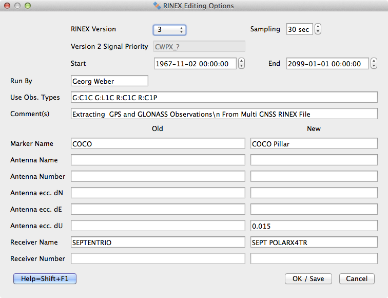
Figure 10: Example for BNC's 'RINEX Editing Options' window
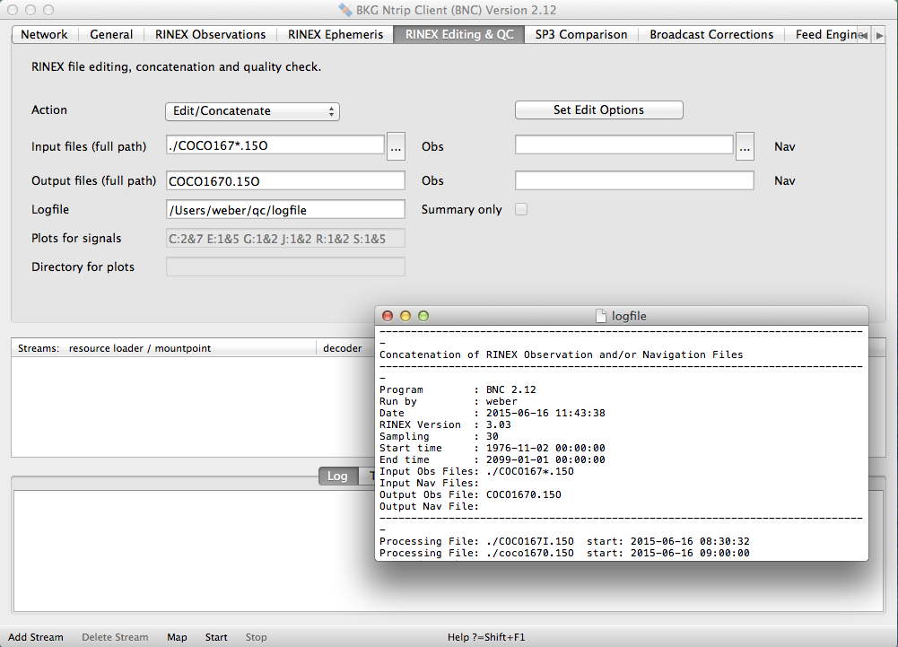
Figure 11: Example for RINEX file concatenation with BNC
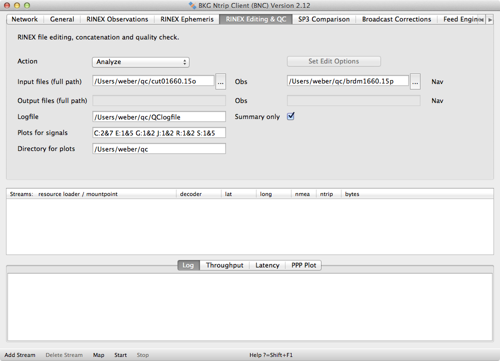
Figure 12: Example for creating RINEX quality check analysis graphics output with BNC
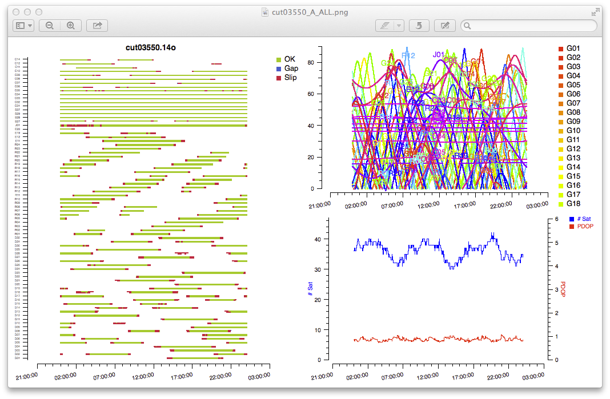
Figure 13: Example for satellite availability, elevation and PDOP plots as a result of a RINEX quality check analysis with BNC
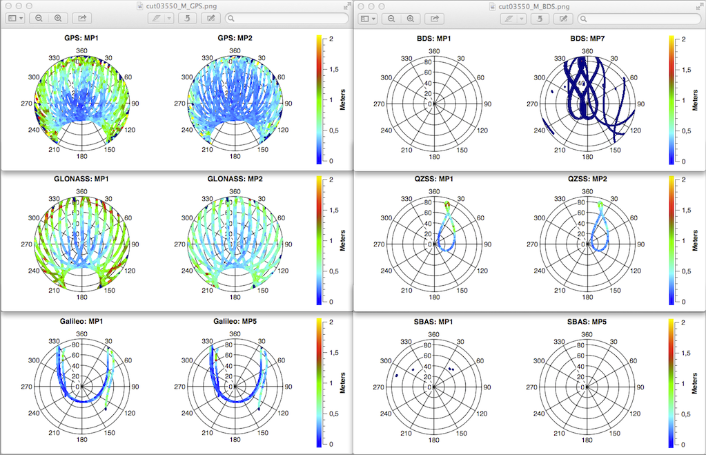
Figure 14: Sky plot examples for multipath, part of RINEX quality check analysis with BNC
Figure 15: Sky plot examples for signal-to-noise ratio, part of RINEX quality check analysis with BNC
BNC applies options from the configuration file but allows updating every one of them on the command line while the content of the configuration file remains unchanged, see section on 'Command Line Options'. Note the following syntax for Command Line Interface (CLI) options:
--key <keyName> <keyValue>
Parameter <keyName> stands for the name of an option contained in the configuration file and <keyValue> stands for the value you want to assign to it. This functionality may be helpful in the 'RINEX Editing & QC' context when running BNC on a routine basis for maintaining a RINEX file archive.
The following example for a Linux platform calls BNC in 'no window' mode with a local configuration file 'rnx.conf' for concatenating four 15min RINEX files from station TLSE residing in the working directory to produce an hourly RINEX Version 3 file with 30 seconds sampling interval:./bnc --nw --conf rnx.conf --key reqcAction Edit/Concatenate --key reqcObsFile "tlse119b00.12o,tlse119b15.12o,tlse119b30.12o,tlse119b45.12o" --key reqcOutObsFile tlse119b.12o --key reqcRnxVersion 3 --key reqcSampling 30
You may use asterisk '*' and/or question mark '?' wildcard characters as shown with the following globbing command line option to specify a selection of files in the working directory:
--key reqcObsFile "tlse*" or: --key reqcObsFile tlse\*
The following Linux command line produces RINEX QC plots (see Estey and Meertens 1999) offline in 'no window' mode and saves them in directory '/home/user'. Introducing a dummy configuration file /dev/null makes sure that no configuration options previously saved on disc are used:
/home/user/bnc --conf /dev/null --key reqcAction Analyze --key reqcObsFile CUT02070.12O --key reqcNavFile BRDC2070.12P --key reqcOutLogFile CUT0.txt --key reqcPlotDir /home/user --nw
The following Linux command line produces the same RINEX QC plots in interactive autoStart mode:
/home/user/bnc --conf /dev/null --key reqcAction Analyze --key reqcObsFile CUT02070.12O --key reqcNavFile BRDC2070.12P --key reqcOutLogFile CUT0.txt --key --key startTab 4 --key autoStart 2
The following is a list of available key names for 'RINEX Editing & QC' (short: REQC, pronounced 'rek') options and their meaning, cf. section 'Configuration Examples':
| Keyname | Meaning |
| reqcAction | RINEX Editing & QC action |
| reqcObsFile | RINEX Observation input file(s) |
| reqcNavFile | RINEX Navigation input files(s) |
| reqcOutObsFile | RINEX Observation output file |
| reqcOutNavFile | RINEX Navigation output file |
| reqcOutLogFile | Logfile |
| reqcLogSummaryOnly | Summary of Logfile |
| reqcSkyPlotSignals | Plots for signals |
| reqcPlotDir | RINEX QC plot directory |
| reqcRnxVersion | RINEX version of emerging new file |
| reqcSampling | Sampling interval of emerging new RINEX file |
| reqcV2Priority | Version 2 Signal Priority |
| reqcStartDateTime | Begin of emerging new RINEX file |
| reqcEndDateTime | End of emerging new RINEX file |
| reqcRunBy | Operator name |
| reqcUseObsTypes | GNSS systems and observation types |
| reqcComment | Additional comment lines |
| reqcOldMarkerName | Old marker name |
| reqcNewMarkerName | New marker name |
| reqcOldAntennaName | Old antenna name |
| reqcNewAntennaName | New antenna name |
| reqcOldAntennaNumber | Old antenna number |
| reqcNewAntennaNumber | New antenna number |
| reqcOldAntennadN | Old component of north eccentricity |
| reqcOldAntennadE | Old component of east eccentricity |
| reqcOldAntennadU | Old component of up eccentricity |
| reqcNewAntennadN | New component of north eccentricity |
| reqcNewAntennadE | New component of east eccentricity |
| reqcNewAntennadU | New component of up eccentricity |
| reqcOldReceiverName | Old receiver name |
| reqcNewReceiverName | New receiver name |
| reqcOldReceiverNumber | Old receiver number |
| reqcNewReceiverNumber | New receiver number |
BNC allows to compare the contents of two files with GNSS orbit and clock data in SP3 format. SP3 ASCII files basically contain a list of records over a certain period of time. Each record carries a time tag, the XYZ position of the satellite's Center of Mass at that time and the corresponding satellite clock value. Both SP3 files may contain some records for different epochs. If so, then BNC only compares records for identical epochs. BNC accepts that a specific GNSS system or a specific satellite is only available from one of the SP3 files. Note that BNC does not interpolate orbits when comparing SP3 files.
To compare satellite clocks provided by the two files, BNC first converts coordinate differences dX,dY,dZ into along track, out-of-plane, and radial components. It then corrects the clock differences for the radial components of coordinate differences. RMS values of clock differences are finally calculated after introducing at first one offset 'per epoch for all satellites' and secondly one offset 'per satellite for all epochs'.
Specify the full paths of two SP3 files, separate them by comma.
You may want to exclude one or more satellites in your SP3 files from the comparison. Or you may like to exclude all satellites of a specific GNSS system from the comparison. The following are example strings to be entered for excluding satellites from the comparison.
Default is an empty option field, meaning that no satellite will be excluded from the comparison.
Specify a logfile name to save results of the SP3 file comparison.
The following is an example for a SP3 Comparison logfile:
! SP3 File 1: esr18283.sp3 ! SP3 File 2: rt218283.sp3 ! ! MJD PRN radial along out clk clkRed iPRN ! ---------------------------------------------------------------- 57043.000000 G01 -0.0001 -0.0318 -0.0354 0.0266 0.0267 1 57043.000000 G02 -0.0062 -0.0198 0.0111 0.0082 0.0143 2 57043.000000 G03 0.0052 0.0060 0.0032 0.0386 0.0334 3 57043.000000 G04 -0.0049 -0.0193 -0.0071 -0.1696 -0.1648 4 57043.000000 G05 0.0027 0.0154 0.0275 0.0345 0.0318 5 57043.000000 G06 0.0247 -0.0398 -0.0111 0.0483 0.0236 6 57043.000000 G07 -0.0052 0.2854 -0.0975 -0.0940 -0.0888 7 57043.000000 G08 -0.0247 0.0937 -0.0184 -0.1563 -0.1316 8 57043.000000 G09 0.0152 0.0583 0.0086 -0.0144 -0.0296 9 ... ... ... ! ! RMS[m] ! ! PRN radial along out nOrb clk clkRed nClk Offset ! --------------------------------------------------------------------- ! G01 0.0151 0.0377 0.0196 96 0.0157 0.0154 96 0.0152 ! G02 0.0083 0.0278 0.0228 96 0.0097 0.0124 96 -0.0626 ! G03 0.0105 0.0311 0.0307 96 0.0352 0.0309 96 0.0898 ! G04 0.0113 0.0334 0.0154 94 0.0725 0.0707 94 -0.5087 ! G05 0.0103 0.0319 0.0299 96 0.0417 0.0403 96 0.1185 ! G06 0.0182 0.0509 0.0302 96 0.0218 0.0166 96 0.0040 ! G07 0.0337 0.1632 0.0463 96 0.0483 0.0435 96 0.3031 ! G08 0.0228 0.0741 0.0321 88 0.0616 0.0561 88 -0.2232 ... ... ... ! R20 0.0637 0.2115 0.1131 96 0.1580 0.1345 96 0.7371 ! R21 0.0475 0.1657 0.0880 96 0.1123 0.0840 96 -0.4133 ! R22 0.0125 0.1249 0.0646 96 0.0414 0.0444 96 -0.7375 ! R23 0.0435 0.1503 0.0573 96 0.0987 0.1099 96 0.6620 ! R24 0.0278 0.2026 0.1186 96 0.1446 0.1303 96 -1.1470 ! ! Total 0.0262 0.0938 0.0492 5268 0.0620 0.0561 5268
The first part of this output uses the following abbreviations:
| 'MJD' | Modified Julian Date |
| 'PRN' | Satellite specification |
| 'radial' | Radial component of orbit coordinate difference [m] |
| 'along' | Along track component of orbit coordinate difference [m] |
| 'out' | Out-of-plane component of orbit coordinate difference [m] |
| 'clk' | Clock difference [m] |
| 'clkRed' | Clock difference reduced by radial component of orbit coordinate difference [m] |
| 'iPRN' | BNC internal sequence number |
The second part following string 'RMS' provides a summary of the comparison using the following
abbreviations:
| 'PRN' | Satellite specification |
| 'radial' | RMS of radial component of orbit coordinate differences [m] |
| 'along' | RMS of along track component of orbit coordinate differences [m] |
| 'out' | RMS of out-of-plane component of orbit coordinate differences [m] |
| 'nOrb' | Number of epochs used in in orbit comparison |
| 'clk' | RMS of clock differences [m] |
| 'clkRed' | RMS of clock differences after reduction of radial orbit differences [m] |
| 'nClk' | Number of epochs use in clock comparisons |
| 'Offset' | Clock offset [m] |
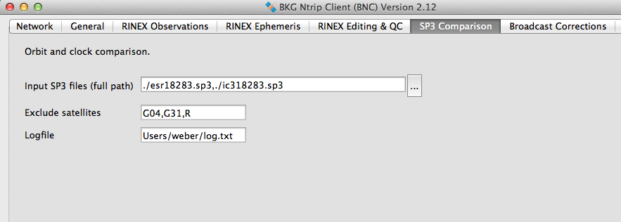
Figure 16: Example for comparing two SP3 files with satellite orbit and clock data using BNC
Differential GNSS and RTK operation using RTCM streams is currently based on corrections and/or raw measurements from single or multiple reference stations. This approach to differential positioning uses 'observation space' information. The representation with the RTCM standard can be called 'Observation Space Representation' (OSR).
An alternative to the observation space approach is the so-called 'state space' approach. The principle here is to provide information on individual error sources. It can be called 'State Space Representation' (SSR). For a rover position, state space information concerning precise satellite clocks, orbits, ionosphere, troposphere et cetera can be converted into observation space and used to correct the rover observables for more accurate positioning. Alternatively, the state information can be used directly in the rover's processing or adjustment model.
RTCM is currently developing Version 3 messages to transport SSR corrections in real-time. They refer to satellite Antenna Phase Center (APC). SSR messages adopted or recently proposed concern:
RTCM Version 3 streams carrying these messages may be used e.g. to support real-time Precise Point Positioning (PPP) applications.
When using clocks from Broadcast Ephemeris (with or without applied corrections) or clocks from SP3 files, it may be important to understand that they are not corrected for the conventional periodic relativistic effect. Chapter 10 of the IERS Conventions 2003 mentions that the conventional periodic relativistic correction to the satellite clock (to be added to the broadcast clock) is computed as
dt = -2 (R * V) / c2
where R * V is the scalar product of the satellite position and velocity and c is the speed of light. This can also be found in the GPS Interface Specification, IS-GPS-200, Revision D, 7 March 2006.
Orbit corrections are provided in along-track, out-of-plane and radial components. These components are defined in the Earth-Centered, Earth-Fixed reference frame of the Broadcast Ephemeris. For an observer in this frame, the along-track component is aligned in both direction and sign with the velocity vector, the out-of-plane component is perpendicular to the plane defined by the satellite position and velocity vectors, and the radial direction is perpendicular to the along track and out-of-plane ones. The three components form a right-handed orthogonal system.
After applying corrections, the satellite position and clock is referred to the 'ionospheric free' phase center of the antenna which is compatible with the broadcast orbit reference.
The orbit and clock corrections do not include local effects like Ocean Loading, Solid Earth Tides or tropospheric delays. However, accurate single frequency applications can be corrected for global ionospheric effects using so-call VTEC messages for global ionospheric state parameters.
While we have a plain ASCII standard for saving Broadcast Ephemeris in RINEX Navigation files, we do not have an equivalent standard for corrections to Broadcast Ephemeris. Hence, BNC saves Broadcast Correction files following its own format definition. The filename convention for Broadcast Correction files follows the convention for RINEX Version 2 files except for the last character of the filename suffix which is set to 'C'.
BNC's Broadcast Correction files contain blocks of records in plain ASCII format. Each block covers information about one specific topic and starts with an 'Epoch Record'.
The 'Epoch Record' of a Broadcast Correction block
The leading 'Epoch Record' of each block in a Broadcast Correction file contains 11 parameters. Example:
> ORBIT 2015 06 17 11 43 35.0 2 53 CLK93
Their meaning is as follows:
Example for block 'ORBIT' carrying orbit corrections
> ORBIT 2015 06 17 11 43 35.0 2 53 CLK93 G01 9 0.5134 0.3692 0.6784 0.0000 -0.0000 -0.0000 G02 25 57.6817 139.0492 -91.3456 0.5436 -0.6931 1.0173 G03 79 -32.1768 191.8368 -121.6540 0.2695 0.2296 0.4879 ... G32 82 1.8174 1.1704 0.2200 -0.0002 -0.0000 -0.0001 R01 59 0.7819 -0.6968 0.7388 -0.0001 0.0004 0.0004 R02 59 0.5816 -0.5800 -0.2004 0.0001 -0.0006 0.0001 R03 59 0.4635 -0.9104 -0.3832 0.0001 0.0001 0.0005 ... R24 59 0.5935 2.0732 -0.6884 -0.0000 0.0004 0.0003
Records in this block provide the following satellite specific information:
Example for block 'CLOCK' carrying clock corrections
> CLOCK 2015 06 17 11 43 35.0 2 53 CLK93 G01 9 0.5412 0.0000 0.0000 G02 25 11.1811 0.0000 0.0000 G03 79 45.0228 0.0000 0.0000 ... G32 82 -1.5324 0.0000 0.0000 R01 59 4.2194 0.0000 0.0000 R02 59 2.0535 0.0000 0.0000 R03 59 1.8130 0.0000 0.0000 ... R24 59 2.7409 0.0000 0.0000
Records in this block provide the following satellite specific information:
Example for block 'CODE_BIAS' carrying code biases
> CODE_BIAS 2015 06 17 11 43 35.0 2 53 CLK93 G01 5 1C -3.3100 1W -3.7500 2W -6.1900 2X -5.7800 5I -5.4200 G02 5 1C 3.6000 1W 3.9300 2W 6.4800 2X 0.0000 5I 0.0000 G03 5 1C -2.1600 1W -2.6500 2W -4.3600 2X -4.4800 5I -5.3400 ... G32 5 1C -1.5800 1W -1.1000 2W -1.8200 2X 0.0000 5I 0.0000 R01 4 1C -2.4900 1P -2.4900 2C -3.1500 2P -4.1200 R02 4 1C 0.3900 1P 0.2100 2C 0.4000 2P 0.3400 R03 4 1C 2.4800 1P 2.2800 2C 3.7800 2P 3.7700 ... R24 4 1C 2.7000 1P 2.7800 2C 3.9800 2P 4.6000
Records in this block provide the following satellite specific information:
Example for block 'PHASE_BIAS' carrying phase biases
> PHASE_BIAS 2015 06 17 11 43 35.0 2 31 CLK93 0 1 G01 245.39062500 0.00000000 3 1C 3.9518 1 2 6 2W 6.3177 1 2 6 5I 6.8059 1 2 6 G02 250.31250000 0.00000000 3 1C -4.0900 1 2 5 2W -6.7044 1 2 5 5I 0.0000 1 2 5 G03 281.95312500 0.00000000 3 1C 2.9327 1 2 4 2W 4.6382 1 2 4 5I 5.4120 1 2 4 ... G32 290.39062500 0.00000000 3 1C 1.2520 1 2 5 2W 2.0554 1 2 5 5I 0.0000 1 2 5
The second record in this block provides the following consistency information:
Example for block 'VTEC' carrying ionospheric corrections
> VTEC 2015 06 17 11 43 35.0 6 1 CLK93
1 6 6 450000.0
17.6800 0.0000 0.0000 0.0000 0.0000 0.0000 0.0000
4.5200 8.8700 0.0000 0.0000 0.0000 0.0000 0.0000
-4.6850 -0.3050 1.1700 0.0000 0.0000 0.0000 0.0000
-2.2250 -1.3900 -1.0250 -0.1300 0.0000 0.0000 0.0000
0.8750 -0.3800 0.2700 -0.1300 0.0400 0.0000 0.0000
1.2150 0.9050 -1.0100 0.3700 -0.1450 -0.2450 0.0000
-0.8200 0.4850 0.2300 -0.1750 0.3400 -0.0900 -0.0400
0.0000 0.0000 0.0000 0.0000 0.0000 0.0000 0.0000
0.0000 -0.0700 0.0000 0.0000 0.0000 0.0000 0.0000
0.0000 0.5800 -1.4150 0.0000 0.0000 0.0000 0.0000
0.0000 -0.6200 -0.1500 0.2600 0.0000 0.0000 0.0000
0.0000 0.0700 -0.0900 -0.0550 0.1700 0.0000 0.0000
0.0000 0.5000 0.3050 -0.5700 -0.5250 -0.2750 0.0000
0.0000 0.0850 -0.4700 0.0600 0.0700 0.1600 0.0400
The second record in this block provides four parameters:
Specify a directory for saving Broadcast Corrections in files. If the specified directory does not exist, BNC will not create Broadcast Correction files. Default value for Broadcast Correction 'Directory' is an empty option field, meaning that no Broadcast Correction files will be created.
Select the length of the Broadcast Correction files. The default value is '1 day'.
BNC can output epoch by epoch synchronized Broadcast Corrections in ASCII format on your local host (IP 127.0.0.1) through an IP 'Port'. Specify an IP port number to activate this function. The default is an empty option field, meaning that no Broadcast Correction output via IP port is generated.
The output format is similar to the format used for saving Broadcast Corrections in a file.
The following is an example output for the stream from mountpoint CLK93:
> ORBIT 2015 06 19 16 41 00.0 2 53 CLK93
G01 85 0.5891 -0.5124 -0.0216 -0.0001 -0.0002 0.0000
G02 25 -150.1820 11.4676 84.5216 0.4130 -0.6932 1.0159
G03 79 15.1999 141.9932 -156.4244 0.6782 -0.8607 -0.8211
...
G32 39 1.8454 0.4888 -0.3876 -0.0001 -0.0001 0.0001
R01 79 -0.0506 1.9024 -0.0120 0.0004 0.0002 -0.0000
R02 79 0.1623 0.9012 0.3984 0.0001 0.0001 0.0002
R03 79 0.3247 -2.6704 -0.0240 0.0005 -0.0002 0.0002
...
R24 79 0.7046 -0.5088 -0.0160 -0.0000 0.0000 -0.0002
> CLOCK 2015 06 19 16 41 00.0 2 53 CLK93
G01 85 -116.9441 0.0000 0.0000
G02 25 -110.4472 0.0000 0.0000
G03 79 -96.8299 0.0000 0.0000
...
G32 39 -119.2757 0.0000 0.0000
R01 79 1.5703 0.0000 0.0000
R02 79 -1.4181 0.0000 0.0000
R03 79 0.2072 0.0000 0.0000
...
R24 79 1.1292 0.0000 0.0000
> CODE_BIAS 2015 06 19 16 41 00.0 0 56 CLK93
E11 3 1B 1.3800 5Q 2.4800 7Q 2.5000
E12 3 1B 0.3900 5Q 0.6900 7Q 0.5300
E19 3 1B -1.7800 5Q -3.1900 7Q -3.0700
G01 5 1C -3.3100 1W -3.7500 2W -6.1900 2X -5.7800 5I -5.4200
G02 5 1C 3.6000 1W 3.9300 2W 6.4800 2X 0.0000 5I 0.0000
G03 5 1C -2.1600 1W -2.6500 2W -4.3600 2X -4.4800 5I -5.3400
...
G32 5 1C -1.5800 1W -1.1000 2W -1.8200 2X 0.0000 5I 0.0000
R01 4 1C -2.4900 1P -2.4900 2C -3.1500 2P -4.1200
R02 4 1C 0.3900 1P 0.2100 2C 0.4000 2P 0.3400
R03 4 1C 2.4800 1P 2.2800 2C 3.7800 2P 3.7700
...
R24 4 1C 2.7000 1P 2.7800 2C 3.9800 2P 4.6000
> PHASE_BIAS 2015 06 19 16 41 00.0 2 31 CLK93
0 1
G01 309.37500000 0.00000000 3 1C 3.9922 1 2 6 2W 6.3568 1 2 6 5I 6.8726 1 2 6
G02 263.67187500 0.00000000 3 1C -4.0317 1 2 7 2W -6.6295 1 2 7 5I 0.0000 1 2 7
G03 267.89062500 0.00000000 3 1C 3.1267 1 2 4 2W 4.9126 1 2 4 5I 5.6478 1 2 4
...
G32 255.93750000 0.00000000 3 1C 1.3194 1 2 5 2W 2.1448 1 2 5 5I 0.0000 1 2 5
> VTEC 2015 06 19 16 41 00.0 6 1 CLK93
1 6 6 450000.0
16.7450 0.0000 0.0000 0.0000 0.0000 0.0000 0.0000
4.9300 8.1600 0.0000 0.0000 0.0000 0.0000 0.0000
-4.4900 0.2550 1.0950 0.0000 0.0000 0.0000 0.0000
-2.2450 -1.9500 -0.7950 -0.4700 0.0000 0.0000 0.0000
1.0250 -0.9000 -0.0900 0.1050 0.1450 0.0000 0.0000
1.5500 0.9750 -0.8150 0.3600 0.0350 -0.0900 0.0000
-0.4050 0.8300 0.0800 -0.0650 0.2200 0.0150 -0.1600
0.0000 0.0000 0.0000 0.0000 0.0000 0.0000 0.0000
0.0000 -0.1250 0.0000 0.0000 0.0000 0.0000 0.0000
0.0000 1.0050 -0.7750 0.0000 0.0000 0.0000 0.0000
0.0000 -0.2300 0.7150 0.7550 0.0000 0.0000 0.0000
0.0000 -0.4100 -0.1250 0.2400 0.2700 0.0000 0.0000
0.0000 0.0850 -0.3400 -0.0500 -0.2200 -0.0750 0.0000
0.0000 0.2000 -0.2850 -0.0150 -0.0250 0.0900 0.0650
The source code for BNC comes with an example Perl script 'test_tcpip_client.pl' that allows to read BNC's Broadcast Corrections from the IP port for verification.
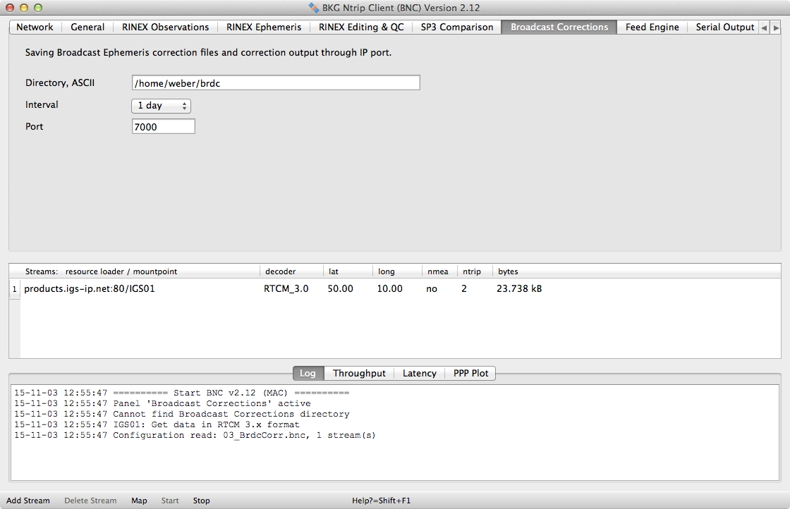
Figure 17: Example for pulling, saving and output of Broadcast Corrections using BNC
BNC can produce synchronized or unsynchronized observations epoch by epoch from all stations and satellites to feed a real-time GNSS network engine. Observations can be streamed out through an IP port and/or saved in a local file. The output is always in the same plain ASCII format and sorted per incoming stream.
Each epoch in the synchronized output begins with a line containing the GPS Week Number and the seconds within the GPS Week. Following lines begin with the mountpoint string of the stream which provides the observations followed by a satellite number. Specifications for satellite number, code, phase, Doppler and signal strength data follow definitions presented in the RINEX Version 3 documentation. In case of phase observations, a 'Lock Time Indicator' is added. The end of an epoch is indicated by an empty line.
A valid 'Lock Time Indicator' is only presented for observations from RTCM Version 3 streams. The parameter provides a measure of the amount of time that has elapsed during which the receiver has maintained continuous lock on that satellite signal. If a cycle slip occurs during the previous measurement cycle, the lock indicator will be reset to Zero. In case of observations from RTCM Version 2 streams, the 'Lock Time Indicator' is always set to '-1'.
The following table describes the format of BNC's synchronized output of GNSS observations which consists of 'Epoch Records' and 'Observation Records'. Each Epoch Record is followed by one or more Observation Records. The Observation Record is repeated for each satellite having been observed in the current epoch. The length of an Observation Record is given by the number of observation types for this satellite.
Table 2: Contents and format of synchronized output of observations feeding a GNSS engine
| Example | Format | |
| Epoch Record | ||
| Record Identifier | > | A1 |
| GPS Week Number | 1850 | 1X,I4 |
| GPS Seconds of Week | 120556.0000000 | 1X,F14.7 |
| Observation Record | ||
| Mountpoint | WTZR0 | A |
| Satellite Number | G01 | 1X,A3 |
| Pseudo-Range Data | ||
| Observation Code | C1C | 1X,A3 |
| Pseudo-Range Observation | 25394034.112 | 1X,F14.3 |
| Carrier Phase Data | ||
| Observation Code | L1C | 1X,A3 |
| Carrier Phase Observation | 133446552.870 | 1X,F14.3 |
| Lock Time Indicator | 11 | 1X,I4 |
| Doppler Data | ||
| Observation Code | D1C | 1X,A3 |
| Doppler Observation | -87.977 | 1X,F14.3 |
| Signal Strength | ||
| Observation Code | S2W | 1X,A3 |
| Observed Signal Strength | 34.750 | 1X,F8.3 |
The following is an example for synchronized file and IP port output, which presents observations from GPS, GLONASS, Galileo, BDS (BeiDou), QZSS, and SBAS satellites as collected through streams FFMJ1, WTZR0 and CUT07:
> 1884 206010.0000000 FFMJ1 G02 C1C 23286796.846 L1C 122372909.535 127 S1C 49.000 C2W 23286793.846 L2W 95355531.583 127 S2W 36.000 ... FFMJ1 G26 C1C 24796690.856 L1C 130307533.550 127 S1C 42.000 C2W 24796697.776 L2W 101538315.510 127 S2W 25.000 FFMJ1 S20 C1C 38682850.302 L1C 203279786.777 127 S1C 42.000 FFMJ1 S36 C1C 38288096.846 L1C 201205293.221 127 S1C 47.000 FFMJ1 R03 C1C 23182737.548 L1C 124098947.838 127 S1C 48.000 C2P 23182746.288 L2P 96521352.130 127 S2P 42.000 ... FFMJ1 R21 C1C 22201343.772 L1C 118803851.388 127 S1C 52.000 C2P 22201348.892 L2P 92402993.884 127 S2P 44.000 CUT07 G01 C1C 25318977.766 L1C 133052476.488 521 D1C 2533.500 S1C 33.688 C2W 25318993.668 L2W 103677584.878 521 S2W 15.625 C2X 25318991.820 L2X 103676566.850 521 S2X 35.375 C5X 25318993.461 L5X 99357161.238 521 S5X 39.812 ... CUT07 G27 C1C 20251005.351 L1C 106420601.969 627 D1C 250.937 S1C 50.312 C2W 20251014.512 L2W 82924447.644 627 S2W 45.125 C2X 20251014.246 L2X 82924648.644 627 S2X 53.188 C5X 20251015.480 L5X 79469461.619 627 S5X 56.375 CUT07 R01 C1C 20312587.149 L1C 108583395.373 625 D1C -2456.703 S1C 52.875 C1P 20312586.192 L1P 108582844.382 625 S1P 51.000 C2C 20312593.422 L2C 84452892.610 625 S2C 43.625 C2P 20312593.836 L2P 84453114.622 625 S2P 42.312 ... CUT07 R24 C1C 19732223.242 L1C 105517564.659 630 D1C -7.477 S1C 47.375 C1P 19732222.609 L1P 105517564.669 630 S1P 46.375 C2C 19732227.660 L2C 82069550.193 630 S2C 38.125 C2P 19732227.316 L2P 82068477.204 630 S2P 37.375 CUT07 E11 C1X 28843071.547 L1X 151571208.816 405 D1X -2221.055 S1X 29.000 C7X 28843082.531 L7X 116138795.418 405 S7X 27.188 C8X 28843085.699 L8X 114662585.261 405 S8X 33.688 C5X 28843086.281 L5X 113186518.907 405 S5X 30.375 ... CUT07 E30 C1X 28096037.289 L1X 147645296.835 630 D1X -2020.613 S1X 34.688 C7X 28096054.070 L7X 113131111.635 630 S7X 36.875 C8X 28096055.684 L8X 111692702.565 630 S8X 40.375 C5X 28096058.008 L5X 110254591.278 630 S5X 36.188 CUT07 S27 C1C 40038220.843 L1C 210402303.982 616 D1C 104.688 S1C 36.125 C5I 40038226.375 L5I 157118241.003 616 S5I 40.875 ... CUT07 S37 C1C 37791754.594 L1C 198596881.251 704 D1C 106.605 S1C 37.875 CUT07 J01 C1C 33076065.781 L1C 173816471.106 674 D1C 169.765 S1C 48.375 C1Z 33076063.086 L1Z 173815528.437 674 S1Z 48.625 C6L 33076065.652 L6L 141084039.422 674 S6L 52.688 C2X 33076070.523 L2X 135440679.474 674 S2X 50.500 C5X 33076076.496 L5X 129797319.733 674 S5X 54.188 C1X 33076065.492 L1X 173815529.101 674 S1X 52.375 CUT07 C01 C2I 37725820.914 L2I 196447455.374 704 D2I 90.898 S2I 41.312 C6I 37725810.168 L6I 159630204.932 704 S6I 44.875 C7I 37725815.196 L7I 151906389.245 704 S7I 45.812 ... CUT07 C14 C2I 23351041.328 L2I 121594621.501 592 D2I 2422.203 S2I 45.688 C6I 23351032.926 L6I 98805869.415 592 S6I 48.500 C7I 23351041.996 L7I 94024977.673 592 S7I 45.688 WTZR0 G02 C1C 23641481.864 L1C 124236803.604 127 S1C 47.500 C2W 23641476.604 L2W 96807881.233 127 S2W 39.250 ... WTZR0 G26 C1C 24681555.676 L1C 129702453.534 127 S1C 43.750 C2W 24681561.256 L2W 101066873.870 127 S2W 37.750 WTZR0 R03 C1C 22982596.508 L1C 123027564.682 127 S1C 47.000 C2P 22982598.368 L2P 95688085.627 127 S2P 43.250 ... WTZR0 R21 C1C 22510252.692 L1C 120456902.811 127 S1C 47.500 C2P 22510253.132 L2P 93688698.401 127 S2P 44.000 > 1884 206011.0000000 ...
The source code for BNC comes with a Perl script named 'test_tcpip_client.pl' that allows to read BNC's (synchronized or unsynchronized) ASCII observation output from the IP port and print it on standard output for verification.
Note that any socket connection of an application to BNC's synchronized or unsynchronized observation ports is recorded in the 'Log' tab on the bottom of the main window together with a connection counter, resulting in log records like 'New client connection on sync/usync port: # 1'.
The following figure shows the screenshot of a BNC configuration where a number of streams is pulled from different Ntrip Broadcasters to feed a GNSS engine via IP port output.
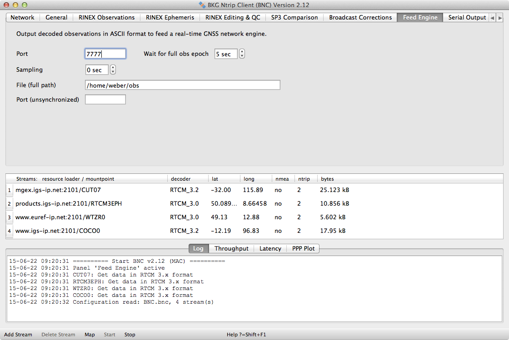
Figure 18: Synchronized BNC output via IP port to feed a GNSS real-time engine
BNC can produce synchronized observations in ASCII format on your local host (IP 127.0.0.1) through an IP 'Port'. Synchronized means that BNC collects all observation data for a specific epoch, which become available within a certain number of seconds (see 'Wait for Full Obs Epoch' option). It then - epoch by epoch - outputs whatever has been received. The output comes block-wise per stream following the format specified in Table 2. Enter an IP port number here to activate this function. The default is an empty option field, meaning that no synchronized output is generated.
When feeding a real-time GNSS network engine waiting for synchronized observations epoch by epoch, BNC drops whatever is received later than 'Wait for full obs epoch' seconds. A value of 3 to 5 seconds could be an appropriate choice for that, depending on the latency of the incoming streams and the delay acceptable for your real-time GNSS product. Default value for 'Wait for full obs epoch' is 5 seconds.
Note that 'Wait for full obs epoch' does not affect the RINEX Observation file content. Observations received later than 'Wait for full obs epoch' seconds will still be included in the RINEX Observation files.
Select a synchronized observation output sampling interval in seconds. A value of zero '0' tells BNC to send/store all received epochs. This is the default value.
Specify the full path to a 'File' where synchronized observations are saved in plain ASCII format. The default value is an empty option field, meaning that no ASCII output file is created.
Beware that the size of this file can rapidly increase depending on the number of incoming streams. To prevent it from becoming too large, the name of the file can be changed on-the-fly. This option is primarily meant for test and evaluation.
BNC can produce unsynchronized observations from all configured streams in ASCII format on your local host (IP 127.0.0.1) through an IP 'Port'. Unsynchronized means that BNC immediately forwards any received observation to the port. Nevertheless, the output is produced block-wise per stream. Specify an IP port number here to activate this function. The default is an empty option field, meaning that no unsynchronized output is generated.
The following is an example for unsynchronized IP port output which presents observations from GPS and GLONASS as collected through stream WTZR0. The format for synchronized and unsynchronized output of observations is very much the same. However, unsynchronized output does not have 'Epoch Records' and 'Observation Records'. Instead each record contains the 'GPS Week Number' and 'GPS Second of Week' time tag between the mountpoint string and the satellite number, see Table 2 for format details.
WTZR0 1884 209623.0000000 G02 C1C 22259978.112 L1C 116976955.890 127 S1C 49.250 C2W 22259974.472 L2W 91150855.991 127 S2W 44.500 WTZR0 1884 209623.0000000 G03 C1C 24426736.058 L1C 128363272.624 127 S1C 43.500 C2W 24426741.838 L2W 100023289.335 127 S2W 39.000 ... WTZR0 1884 209623.0000000 G29 C1C 25275897.592 L1C 132825869.191 90 S1C 35.250 C2W 25275893.692 L2W 103500567.110 8 S2W 28.500 WTZR0 1884 209623.0000000 G30 C1C 23670676.284 L1C 124390283.441 127 S1C 46.750 C2W 23670679.784 L2W 96927531.685 127 S2W 39.500 WTZR0 1884 209623.0000000 R04 C1C 20758122.104 L1C 111158778.398 127 S1C 50.000 C2P 20758121.664 L2P 86456803.800 127 S2P 47.000 WTZR0 1884 209623.0000000 R05 C1C 19430829.552 L1C 103868912.028 127 S1C 45.750 C2P 19430829.672 L2P 80786936.849 127 S2P 46.750 ...
You may use BNC to feed a serially connected device like a GNSS receiver. For that, an incoming stream can be forwarded to a serial port. Depending on the stream content, the receiver may use it for Differential GNSS, Precise Point Positioning or any other purpose supported by its firmware.
Note that receiving a VRS stream requires the receiver sending NMEA sentences (option 'NMEA' set to 'Manual' or 'Auto') to the Ntrip Broadcaster. The following figure shows the data flow when pulling a VRS stream or a physical (non-VRS) stream.

Figure 19: Flowcharts, BNC forwarding a stream to a serially connected receiver; sending NMEA sentences is mandatory for VRS streams
The following figure shows the screenshot of an example situation where BNC pulls a VRS stream from an Ntrip Broadcaster to feed a serially connected RTK rover.
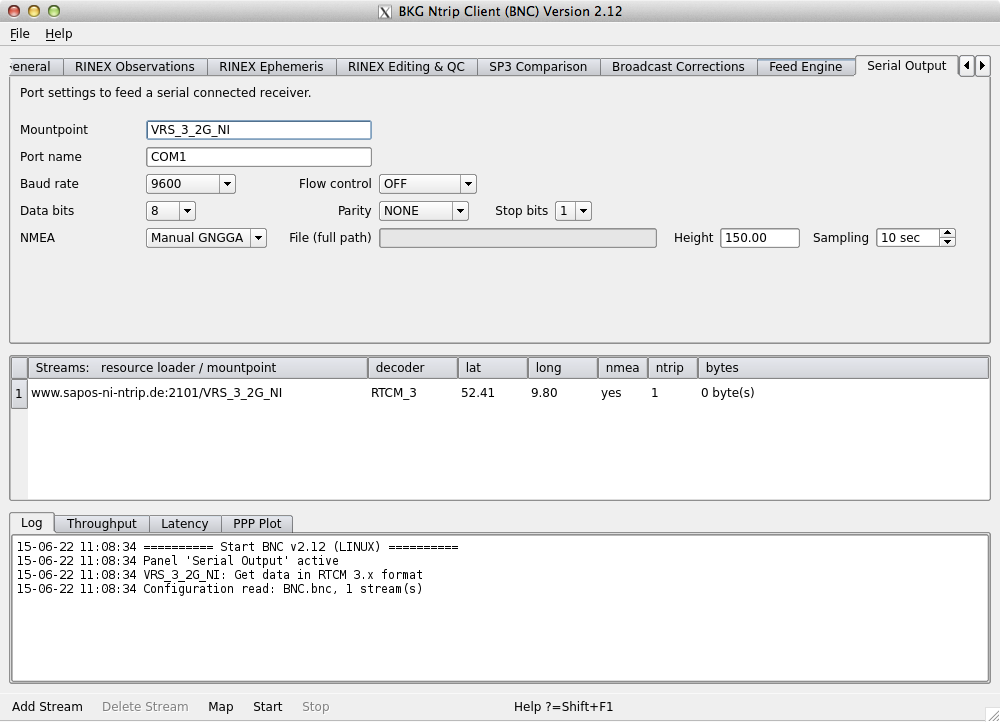
Figure 20: BNC pulling a VRS stream to feed a serially connected RTK rover
Enter a 'Mountpoint' to forward its corresponding stream to a serially connected GNSS receiver.
When selecting one of the serial communication options listed below, make sure that you pick those configured to the serially connected receiver.
Enter the serial 'Port name' selected on your host for communication with the serially connected receiver. Valid port names are
Windows: COM1, COM2 Linux: /dev/ttyS0, /dev/ttyS1 FreeBSD: /dev/ttyd0, /dev/ttyd1 Digital Unix: /dev/tty01, /dev/tty02 HP-UX: /dev/tty1p0, /dev/tty2p0 SGI/IRIX: /dev/ttyf1, /dev/ttyf2 SunOS/Solaris: /dev/ttya, /dev/ttyb
Note that you must plug a serial cable in the port defined here before you start BNC.
Select a 'Baud rate' for the serial output link. Note that using a high baud rate is recommended.
Select a 'Flow control' for the serial output link. Note that your selection must equal the flow control configured to the serially connected device. Select 'OFF' if you do not know better.
Select the 'Parity' for the serial output link. Note that parity is often set to 'NONE'.
Select the number of 'Data bits' for the serial output link. Note that often '8' data bits are used.
Select the number of 'Stop bits' for the serial output link. Note that often '1' stop bit is used.
The 'NMEA' option supports the so-called 'Virtual Reference Station' (VRS) concept which requires the receiver to send approximate position information to the Ntrip Broadcaster. Select 'no' if you do not want BNC to forward or upload any NMEA sentence to the Ntrip broadcaster in support of VRS.
Select 'Auto' to automatically forward NMEA sentences of type GGA from your serially connected receiver to the Ntrip broadcaster and/or save them in a file.
Select 'Manual GPGGA' or 'Manual GNGGA' if you want BNC to produce and upload GPGGA or GNGGA NMEA sentences to the Ntrip broadcaster because your serially connected receiver does not generate them. A Talker ID 'GP' proceeding the GGA string stands for GPS solutions while a Talker ID 'GN' stands for multi-constellation solutions.
Note that selecting 'Auto' or 'Manual' works only for VRS streams which show up under the 'Streams' canvas on BNC's main window with 'nmea' stream attribute set to 'yes'. This attribute is either extracted from the Ntrip broadcaster's source-table or introduced by the user through editing the BNC configuration file.
Specify the full path to a file where NMEA sentences coming from your serially connected receiver are saved. Default is an empty option field, meaning that no NMEA sentences will be saved on disk.
Specify an approximate 'Height' above mean sea level in meters for the reference station introduced through 'Mountpoint'. Together with the latitude and longitude from the Ntrip broadcaster source-table, the height information is used to build GGA sentences to be sent to the Ntrip broadcaster.
For adjusting latitude and longitude values of a VRS stream given in the 'Streams' canvas, you can double click the latitude/longitude data fields, specify appropriate values and then hit Enter.
This option is only relevant when option 'NMEA' is set to 'Manual GPGGA' or 'Manual GNGGA' respectively.
Select a sampling interval in seconds for manual generation and upload of NMEA GGA sentences.
A sampling rate of '0' means that a GGA sentence will be sent only once to initialize the requested VRS stream. Note that some VRS systems need GGA sentences at regular intervals.
At any time an incoming stream might become unavailable or corrupted. In such cases, it is important that the BNC operator and/or the stream providers become aware of the situation so that measures can be taken to restore the stream. Furthermore, continuous attempts to decode a corrupted stream can generate unnecessary workload for BNC. Outages and corruptions are handled by BNC as follows:
Stream outages: BNC considers a connection to be broken when there are no incoming data detected for more than 20 seconds. When this occurs, BNC will try to reconnect at a decreasing rate. It will first try to reconnect with 1 second delay and again in 2 seconds if the previous attempt failed. If the attempt is still unsuccessful, it will try to reconnect within 4 seconds after the previous attempt and so on. The waiting time doubles each time with a maximum of 256 seconds.
Stream corruption: Not all chunks of bits transferred to BNC's internal decoder may return valid observations. Sometimes several chunks might be needed before the next observation can be properly decoded. BNC buffers all outputs (both valid and invalid) from the decoder for a short time span (size derived from the expected 'Observation rate') to then determine whether a stream is valid or corrupted.
Outage and corruption events are reported in the 'Log' tab. They can also be passed on as parameters to a shell script or batch file to generate an advisory note to BNC's operator or affected stream providers. This functionality lets users utilize BNC as a real-time performance monitor and alarm system for a network of GNSS reference stations.
BNC can collect all returns (success or failure) coming from a decoder within a certain short time span to then decide whether a stream has an outage or its content is corrupted. This procedure needs a rough a priori estimate of the expected observation rate of the incoming streams.
An empty option field (default) means that you do not want explicit information from BNC about stream outages and incoming streams that cannot be decoded.
Event 'Begin_Failure' will be reported if no data is received continuously for longer than the 'Failure threshold' time. Similarly, event 'Begin_Corrupted' will be reported when corrupted data is detected by the decoder continuously for longer than this 'Failure threshold' time. The default value is set to 15 minutes and is recommended as to not inundate users with too many event reports.
Note that specifying a value of zero '0' for the 'Failure threshold' will force BNC to report any stream failure immediately. Note also that for using this function you need to specify the 'Observation rate'.
Once a 'Begin_Failure' or 'Begin_Corrupted' event has been reported, BNC will check when the stream again becomes available or uncorrupted. Event 'End_Failure' or 'End_Corrupted' will be reported as soon as valid observations are detected continuously throughout the 'Recovery threshold' time span. The default value is set to 5 minutes and is recommended as to not inundate users with too many event reports.
Note that specifying a value of zero '0' for the 'Recovery threshold' will force BNC to report any stream recovery immediately. Note also that for using this function you need to specify the 'Observation rate'.
As mentioned before, BNC can trigger a shell script or a batch file to be executed when one of the described events is reported. This script can be used to email an advisory note to network operator or stream providers. To enable this feature, specify the full path to the script or batch file in the 'Script' field. The affected stream's mountpoint and type of event reported ('Begin_Outage', 'End_Outage', 'Begin_Corrupted' or 'End_Corrupted') will then be passed on to the script as command line parameters (%1 and %2 on Windows systems or $1 and $2 on Unix/Linux/Mac OS X systems) together with date and time information.
Leave the 'Script' field empty if you do not wish to use this option. An invalid path will also disable this option.
Examples for command line parameter strings passed on to the advisory 'Script' are:
FFMJ0 Begin_Outage 08-02-21 09:25:59 FFMJ0 End_Outage 08-02-21 11:36:02 Begin was 08-02-21 09:25:59
Sample script for Unix/Linux/Mac OS X systems:
#!/bin/bash sleep $((60*RANDOM/32767)) cat > mail.txt <<EOF Advisory Note to BNC User, Please note the following advisory received from BNC. Stream: $* Regards, BNC EOF mail -s "NABU: $1" email@address < mail.txt
Note the sleep command in this script, which causes the system to wait for a random period of up to 60 seconds before sending the email. This should avoid overloading your mail server in case of a simultaneous failure of many streams.
This section describes several miscellaneous options which can be applied to a single stream (mountpoint) or to all configured streams.
The following figure shows RTCM message numbers and observation types contained in stream 'CUT07' and the message latencies recorded every 2 seconds.
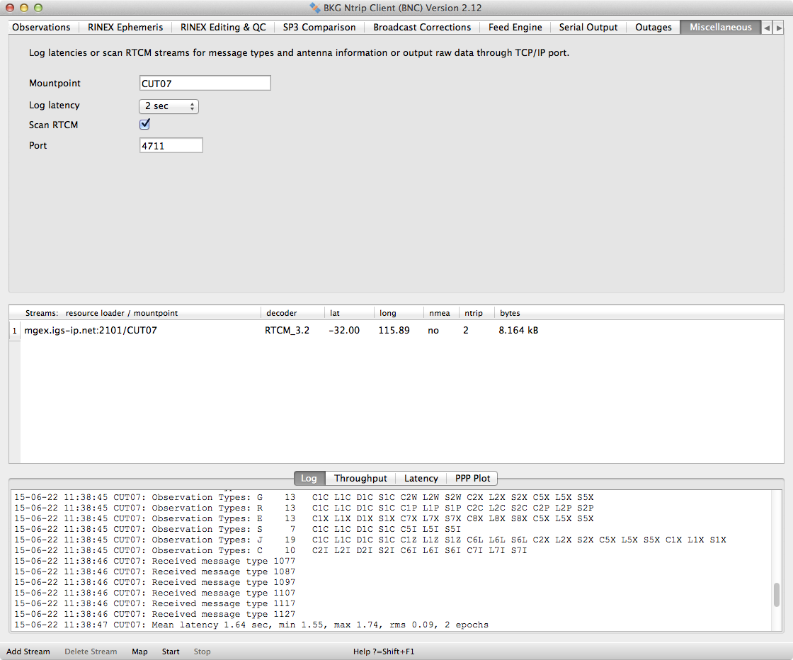
Figure 21: RTCM message numbers, latencies and observation types logged by BNC
Specify a mountpoint to apply one or several of the 'Miscellaneous' options to the corresponding stream. Enter 'ALL' if you want to apply these options to all configured streams. An empty option field (default) means that you do not want BNC to apply any of these options.
BNC can average latencies per stream over a certain period of GPS time, the 'Log latency' interval. Mean latencies are calculated from the individual latencies of one (first incoming) observation or Broadcast Correction per second. The mean latencies are then saved in BNC's logfile. Note that computing correct latencies requires the clock of the host computer to be properly synchronized. Note further that visualized latencies from the 'Latency' tab on the bottom of the main window represent individual latencies and not the mean latencies for the logfile.
Latency: Latency is defined in BNC by the following equation:
UTC time provided by BNC's host
- GPS time of currently processed epoch
+ Leap seconds between UTC and GPS time
--------------
= Latency
Statistics: BNC counts the number of GPS seconds covered by at least one observation. It also estimates an observation rate (independent from the a priori specified 'Observation rate') from all observations received throughout the first full 'Log latency' interval. Based on this rate, BNC estimates the number of data gaps when appearing in subsequent intervals.
Latencies of observations or corrections to Broadcast Ephemeris and statistical information can be recorded in the 'Log' tab at the end of each 'Log latency' interval. A typical output from a 1 hour 'Log latency' interval would be:
08-03-17 15:59:47 BRUS0: Mean latency 1.47 sec, min 0.66, max 3.02, rms 0.35, 3585 epochs, 15 gaps
Select a 'Log latency' interval to activate this function or select the empty option field if you do not want BNC to log latencies and statistical information.
When configuring a GNSS receiver for RTCM stream generation, the firmware's setup interface may not provide details about RTCM message types and observation types. As reliable information concerning stream content should be available e.g. for Ntrip Broadcaster operators to maintain the broadcaster's source-table, BNC allows to scan RTCM streams for incoming message types and printout some of the contained meta-data. Contained observation types are also printed because such information is required a priori for the conversion of RTCM Version 3 MSM streams to RINEX Version 3 files. The idea for this option arose from 'inspectRTCM', a comprehensive stream analyzing tool written by D. Stöcker.
Tick 'Scan RTCM' to scan RTCM Version 2 or 3 streams and log all contained
Note that in RTCM Version 2 message types 18 and 19 carry only the observables of one frequency. Hence it needs two type 18 and 19 messages per epoch to transport observations from dual frequency receivers.
Please note further that RTCM Version 3 message types 1084 for GLONASS do not contain GLONASS channel numbers. Observations from these messages can only be decoded when you include 1020 GLONASS ephemeris messages to your stream which contain the channels. You could also consider adding a second stream carrying 1087 GLONASS observation messages or 1020 GLONASS ephemeris messages as both contain the GLONASS channel numbers.
Logged time stamps refer to message reception time and allow understanding repetition rates. Enter 'ALL' if you want to log this information from all configured streams. Beware that the size of the logfile can rapidly increase depending on the number of incoming RTCM streams.
This option is primarily meant for test and evaluation. Use it to figure out what exactly is produced by a specific GNSS receiver's configuration. An empty option field (default) means that you do not want BNC to print message type numbers and antenna information carried in RTCM streams.
BNC can output streams related to the above specified 'Mountpoint' through a TCP/IP port of your local host. Enter a port number to activate this function. The stream content remains untouched. BNC does not decode or reformat the data for this output.
Be careful when keyword 'ALL' is specified as 'Mountpoint' for involving all incoming streams together because the affiliation of data to certain streams gets lost in the output.
An empty option field (default) means that you do not want BNC to apply the TCP/IP port output option.
BNC can derive coordinates for rover positions following the Precise Point Positioning (PPP) approach. It uses code or code plus phase data from one or more GNSS systems in ionosphere-free linear combinations P3, L3, or P3&L3. Besides pulling streams of observations from a dual frequency GNSS receiver, this
When using the PPP option, it is important to understand which effects are corrected by BNC.
The provider of an orbit/clock correction stream may switch with his service at any time from a duty to a backup server installation. This shall be noted in the SSR stream through a change of the Issue Of Data (IOD SSR) parameter. The PPP option in BNC will immediately reset all ambiguities in such a situation.
PPP options are specified in BNC through the following four panels.
This panel provides options for specifying the input and output streams and files required by BNC for real-time or post processing PPP.
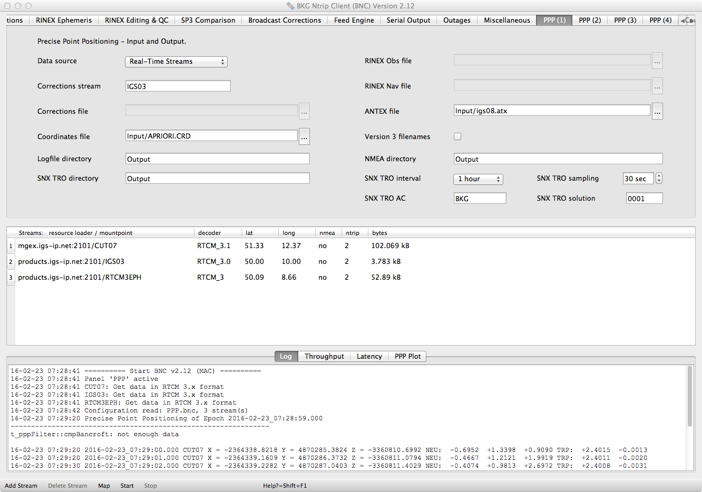
Figure 22: Real-time Precise Point Positioning with BNC, PPP Panel 1
Choose between input from 'Real-time Streams' or 'RINEX Files' for PPP with BNC in real-time or post processing mode.
Real-time Streams
When choosing 'Real-time Streams' BNC will do PPP solutions in real-time. This requires pulling GNSS observation streams, Broadcast Ephemeris messages and a stream containing corrections to Broadcast Ephemeris. Streams must come in RTCM Version 3 format.
If you do not pull Broadcast Corrections, BNC will switch with its solution to 'Single Point Positioning' (SPP) mode.
RINEX Files
This input mode allows to specify RINEX Observation, RINEX Navigation and Broadcast Correction files. BNC accepts RINEX Version 2 as well as RINEX Version 3 Observation or Navigation file formats. Files carrying Broadcast Corrections must have the format produced by BNC through the 'Broadcast Corrections' panel.
Specifying only a RINEX Observation and a RINEX Navigation file and no Broadcast Correction file leads BNC to a 'Single Point Positioning' (SPP) solution.
Debugging
Note that for debugging purposes, BNC's real-time PPP functionality can also be used offline. Apply the 'File Mode' 'Command Line' option for that to read a file containing synchronized observations, orbit and clock correctors, and Broadcast Ephemeris. Example:
bnc.exe --conf c:\temp\PPP.bnc --file c:\temp\RAWSuch a file (here: 'RAW') must be saved beforehand using BNC's 'Raw output file' option.
Specify a RINEX Observation file. The file format can be RINEX Version 2 or RINEX Version 3.
Specify a RINEX Navigation file. The file format can be RINEX Version 2 or RINEX Version 3.
Specify a Broadcast 'Corrections stream' from the list of selected 'Streams' you are pulling if you want BNC to correct your satellite ephemeris accordingly. Note that the stream's orbit and clock corrections must refer to the satellite Antenna Phase Center (APC). Streams providing such corrections are made available e.g. through the International GNSS Service (IGS) and listed on http://igs.bkg.bund.de/ntrip/orbits. The stream format must be RTCM Version 3 containing so-called SSR messages. Streams 'IGS03' and 'CLK11' supporting GPS plus GLONASS are examples.
If you do not specify a 'Corrections stream', BNC will fall back from a PPP solution to a Single Point Positioning (SPP) solution.
Specify a Broadcast 'Corrections file' as saved beforehand using BNC. The file content is basically the ASCII representation of a RTCM Version 3 Broadcast Correction (SSR) stream.
If you do not specify a 'Correction file', BNC will fall back from a PPP solution to a Single Point Positioning (SPP) solution.
IGS provides a file containing absolute phase center corrections for GNSS satellite and receiver antennas in ANTEX format. Entering the full path to such an ANTEX file is required for correcting observations in PPP for Antenna Phase Center offsets and variations. Note that for applying such corrections you need to specify the receiver's antenna name and radome in BNC's 'Coordinates file'.
Default value for 'ANTEX file' is an empty option field, meaning that you do not want to correct observations for Antenna Phase Center offsets and variations.
Enter the full path to an ASCII file which specifies all observation streams or files from stationary or mobile receivers you possibly may want to process. Specifying a 'Coordinates file' is optional. If it exists, it should contain one record per stream or file with the following parameters separated by blank characters:
'JPSREGANT_SD_E ' (no radome) 'LEIAT504 NONE' (no radome) 'LEIAR25.R3 LEIT' (radome is LEIT)Leave antenna name blank if you do not want to correct observations for APC offsets and variations or if you do not know the antenna name.
Records in the 'Coordinates' file with exclamation mark '!' in the first column or blank records will be understood as comment lines and ignored.
The following is the content of an example 'Coordinates file'. Here each record describes the mountpoint of a stream available from the global IGS real-time reference station network. A priori coordinates are followed by North/East/Up eccentricity components of the ARP followed by the antenna name and radome in use.
! ! Station X[m] Y[m] Z[m] North[m] EAST[m] UP[m] Antenna--------Radom Receiver ! ----------------------------------------------------------------------------------------------------- ADIS0 4913652.6612 3945922.7678 995383.4359 0.0000 0.0000 0.0010 TRM29659.00 NONE JPS LEGACY ALIC0 -4052052.5593 4212836.0078 -2545104.8289 0.0000 0.0000 0.0015 LEIAR25.R3 NONE LEICA GRX1200GGPRO BELF0 3685257.8823 -382908.8992 5174311.1067 0.0000 0.0000 0.0000 LEIAT504GG LEIS LEICA GRX1200GGPRO BNDY0 -5125977.4106 2688801.2966 -2669890.4345 0.0000 0.0000 0.0000 ASH701945E_M NONE TRIMBLE NETR5 BRAZ0 4115014.0678 -4550641.6105 -1741443.8244 0.0000 0.0000 0.0080 LEIAR10 NONE LEICA GR25 CTWN0 5023564.4285 1677795.7211 -3542025.8392 0.0000 0.0000 0.0000 ASH701941.B NONE TRIMBLE NETR5 CUT07 -2364337.4408 4870285.6055 -3360809.6280 0.0000 0.0000 0.0000 TRM59800.00 SCIS TRIMBLE NETR9 GANP0 3929181.3480 1455236.9105 4793653.9880 0.0000 0.0000 0.3830 TRM55971.00 NONE TRIMBLE NETR9 HLFX0 2018905.6037 -4069070.5095 4462415.4771 0.0000 0.0000 0.1000 TPSCR.G3 NONE TPS NET-G3A LHAZ0 -106941.9272 5549269.8041 3139215.1564 0.0000 0.0000 0.1330 ASH701941.B NONE TPS E_GGD LMMF7 2993387.3587 -5399363.8649 1596748.0983 0.0000 0.0000 0.0000 TRM57971.00 NONE TRIMBLE NETR9 MAO07 -5466067.0979 -2404333.0198 2242123.1929 0.0000 0.0000 0.0000 LEIAR25.R3 LEIT JAVAD TRE_G3TH DELTA NICO0 4359415.5252 2874117.1872 3650777.9614 0.0000 0.0000 0.0650 LEIAR25.R4 LEIT LEICA GR25 NKLG7 6287385.7320 1071574.7606 39133.1088 -0.0015 -0.0025 3.0430 TRM59800.00 SCIS TRIMBLE NETR9 NURK7 5516756.5103 3196624.9684 -215027.1315 0.0000 0.0000 0.1300 TPSCR3_GGD NONE JAVAD TRE_G3TH DELTA ONSA0 3370658.3928 711877.2903 5349787.0603 0.0000 0.0000 0.9950 AOAD/M_B OSOD JAVAD TRE_G3TH DELTA PDEL0 4551595.9072 -2186892.9495 3883410.9685 0.0000 0.0000 0.0000 LEIAT504GG NONE LEICA GRX1200GGPRO RCMN0 5101056.6270 3829074.4206 -135016.1589 0.0000 0.0000 0.0000 LEIAT504GG LEIS LEICA GRX1200GGPRO REUN0 3364098.9668 4907944.6121 -2293466.7379 0.0000 0.0000 0.0610 TRM55971.00 NONE TRIMBLE NETR9 REYK7 2587384.0890 -1043033.5433 5716564.1301 0.0000 0.0000 0.0570 LEIAR25.R4 LEIT LEICA GR25 RIO27 1429907.8578 -3495354.8953 -5122698.5595 0.0000 0.0000 0.0350 ASH700936C_M SNOW JAVAD TRE_G3TH DELTA SMR50 927077.1096 -2195043.5597 -5896521.1344 0.0000 0.0000 0.0000 TRM41249.00 TZGD TRIMBLE NETR5 SUWN0 -3062023.1604 4055447.8946 3841818.1684 0.0000 0.0000 1.5700 TRM29659.00 DOME TRIMBLE NETR9 TASH7 1695944.9208 4487138.6220 4190140.7391 0.0000 0.0000 0.1206 JAV_RINGANT_G3T NONE JAVAD TRE_G3TH DELTA UFPR0 3763751.6731 -4365113.9039 -2724404.5331 0.0000 0.0000 0.1000 TRM55971.00 NONE TRIMBLE NETR5 UNB30 1761287.9724 -4078238.5659 4561417.8448 0.0000 0.0000 0.3145 TRM57971.00 NONE TRIMBLE NETR9 WIND7 5633708.8016 1732017.9297 -2433985.5795 0.0000 0.0000 0.0460 ASH700936C_M SNOW JAVAD TRE_G3TH DELTA WTZR0 4075580.3797 931853.9767 4801568.2360 0.0000 0.0000 0.0710 LEIAR25.R3 LEIT LEICA GR25 WUH27 -2267749.9761 5009154.5504 3221294.4429 0.0000 0.0000 0.1206 JAV_RINGANT_G3T NONE JAVAD TRE_G3TH DELTA YELL7 -1224452.8796 -2689216.1863 5633638.2832 0.0000 0.0000 0.1000 AOAD/M_T NONE JAVAD TRE_G3TH DELTA
Note again that the only mandatory parameters in this file are the 'Station' parameters in the first column, each standing for an observation stream's mountpoint or the 4-character station ID of a RINEX filename. The following shows further valid examples for records of a 'Coordinates file'.
! ! Station X[m] Y[m] Z[m] N[m] E[m] U[m] Antenna--------Radom Receiver ! -------------------------------------------------------------------------------------------------- WTZR0 4075580.3797 931853.9767 4801568.2360 0.000 0.000 0.071 LEIAR25.R3 LEIT LEICA GR25 CUT07 -2364337.4408 4870285.6055 -3360809.6280 0.000 0.000 0.000 TRM59800.00 SCIS FFMJ1 4053455.7384 617729.8393 4869395.8214 0.000 0.000 0.045 TITZ1 3993780.4501 450206.8969 4936136.9886 WARN SASS1 0.0 0.0 0.0 0.000 0.000 0.031 TPSCR3_GGD CONE TRIMBLE NETR5
In this file
Tick 'Version 3 filenames' to let BNC create so-called extended filenames for PPP logfiles, NMEA files and SINEX Troposphere files to follow the RINEX Version 3 standard, see section 'RINEX Filenames' for details.
Default is an empty check box, meaning to create filenames following the RINEX Version 2 standard. The file content is not affected by this option. It only concerns the filename notation.
The following are examples for Version 2 filenames:
| CUT018671.nmea | NMEA filename, suffix 'nmea' |
| CUT018671.ppp | PPP logfile name, suffix 'ppp' |
| CUT018671J30.tro | SINEX Troposphere filename, suffix 'tro' |
The following are examples for Version 3 filenames:
| CUT000AUS_U_20152920000_01D_01S.nmea | NMEA filename, suffix 'nmea' |
| CUT000AUS_U_20152920000_01D_01S.ppp | PPP logfile name, suffix 'ppp' |
| CUT000AUS_U_20152920945_15M_01S.tra | SINEX Troposphere filename, suffix 'tra' |
Essential PPP results are shown in the 'Log' tab on the bottom of BNC's main window. Depending on the processing options, the following values are presented about once per second (example):
... 15-10-21 13:23:38 2015-10-21_13:23:38.000 CUT07 X = -2364337.4505 Y = 4870285.6269 Z = -3360809.6481 NEU: -0.0046 -0.0006 +0.0306 TRP: +2.4018 +0.1006 15-10-21 13:23:39 2015-10-21_13:23:39.000 CUT07 X = -2364337.4468 Y = 4870285.6244 Z = -3360809.6453 NEU: -0.0043 -0.0029 +0.0258 TRP: +2.4018 +0.0993 15-10-21 13:23:40 2015-10-21_13:23:40.000 CUT07 X = -2364337.4455 Y = 4870285.6215 Z = -3360809.6466 NEU: -0.0070 -0.0027 +0.0238 TRP: +2.4018 +0.0978 15-10-21 13:23:41 2015-10-21_13:23:41.000 CUT07 X = -2364337.4447 Y = 4870285.6248 Z = -3360809.6445 NEU: -0.0039 -0.0049 +0.0249 TRP: +2.4018 +0.0962 15-10-21 13:23:42 2015-10-21_13:23:42.000 CUT07 X = -2364337.4426 Y = 4870285.6238 Z = -3360809.6424 NEU: -0.0031 -0.0063 +0.0223 TRP: +2.4018 +0.0950 15-10-21 13:23:43 2015-10-21_13:23:43.000 CUT07 X = -2364337.4453 Y = 4870285.6386 Z = -3360809.6518 NEU: -0.0033 -0.0104 +0.0395 TRP: +2.4018 +0.0927 15-10-21 13:23:44 2015-10-21_13:23:44.000 CUT07 X = -2364337.4435 Y = 4870285.6354 Z = -3360809.6487 NEU: -0.0027 -0.0106 +0.0348 TRP: +2.4018 +0.0908 15-10-21 13:23:45 2015-10-21_13:23:45.000 CUT07 X = -2364337.4445 Y = 4870285.6381 Z = -3360809.6532 NEU: -0.0049 -0.0109 +0.0396 TRP: +2.4018 +0.0884 15-10-21 13:23:46 2015-10-21_13:23:46.000 CUT07 X = -2364337.4437 Y = 4870285.6365 Z = -3360809.6548 NEU: -0.0073 -0.0109 +0.0389 TRP: +2.4018 +0.0855 15-10-21 13:23:47 2015-10-21_13:23:47.000 CUT07 X = -2364337.4498 Y = 4870285.6317 Z = -3360809.6395 NEU: +0.0049 -0.0033 +0.0294 TRP: +2.4018 +0.0833 ...
Each row reports the PPP result of one epoch. It begins with a UTC time stamp (yy-mm-dd hh:mm:ss) which tells us when the result was produced. A second time stamp (yyyy-mm-dd_hh:mm:ss) describes the PPP's epoch in 'GPS Time'. It is followed by the derived XYZ position in [m], its North, East and Up displacement compared to an introduced a priori coordinate, and the estimated tropospheric delay [m] (model plus correction).
If you require more information, you can specify a 'Logfile directory' to save daily logfiles per station (filename suffix 'ppp') with additional processing details on disk.
Precise Point Positioning of Epoch 2015-10-21_13:23:47.000 --------------------------------------------------------------- 2015-10-21_13:23:47.000 SATNUM G 9 2015-10-21_13:23:47.000 SATNUM R 6 2015-10-21_13:23:47.000 SATNUM E 0 2015-10-21_13:23:47.000 SATNUM C 9 2015-10-21_13:23:47.000 RES C01 P3 0.3201 2015-10-21_13:23:47.000 RES C02 P3 0.3597 2015-10-21_13:23:47.000 RES C03 P3 -0.8003 2015-10-21_13:23:47.000 RES C04 P3 2.7684 2015-10-21_13:23:47.000 RES C05 P3 4.9738 2015-10-21_13:23:47.000 RES C06 P3 0.1888 2015-10-21_13:23:47.000 RES C07 P3 -2.8624 2015-10-21_13:23:47.000 RES C08 P3 -2.9075 2015-10-21_13:23:47.000 RES C10 P3 -1.5682 2015-10-21_13:23:47.000 RES G05 P3 0.3828 2015-10-21_13:23:47.000 RES G16 P3 -3.7602 2015-10-21_13:23:47.000 RES G18 P3 0.8424 2015-10-21_13:23:47.000 RES G20 P3 0.4062 2015-10-21_13:23:47.000 RES G21 P3 0.8683 2015-10-21_13:23:47.000 RES G25 P3 -1.3367 2015-10-21_13:23:47.000 RES G26 P3 1.4107 2015-10-21_13:23:47.000 RES G29 P3 1.1870 2015-10-21_13:23:47.000 RES G31 P3 -0.5605 2015-10-21_13:23:47.000 RES R01 P3 -0.1458 2015-10-21_13:23:47.000 RES R02 P3 -2.1184 2015-10-21_13:23:47.000 RES R14 P3 1.8634 2015-10-21_13:23:47.000 RES R15 P3 -1.3964 2015-10-21_13:23:47.000 RES R18 P3 0.5517 2015-10-21_13:23:47.000 RES R24 P3 1.5750 2015-10-21_13:23:47.000 RES C01 L3 -0.0040 2015-10-21_13:23:47.000 RES C02 L3 0.0070 2015-10-21_13:23:47.000 RES C03 L3 0.0093 2015-10-21_13:23:47.000 RES C04 L3 -0.0017 2015-10-21_13:23:47.000 RES C05 L3 -0.0008 2015-10-21_13:23:47.000 RES C06 L3 -0.0031 2015-10-21_13:23:47.000 RES C07 L3 -0.0016 2015-10-21_13:23:47.000 RES C08 L3 -0.0089 2015-10-21_13:23:47.000 RES C10 L3 0.0051 2015-10-21_13:23:47.000 RES G05 L3 -0.0408 2015-10-21_13:23:47.000 RES G16 L3 0.0043 2015-10-21_13:23:47.000 RES G18 L3 0.0017 2015-10-21_13:23:47.000 RES G20 L3 -0.0132 2015-10-21_13:23:47.000 RES G21 L3 0.0188 2015-10-21_13:23:47.000 RES G25 L3 -0.0059 2015-10-21_13:23:47.000 RES G26 L3 0.0028 2015-10-21_13:23:47.000 RES G29 L3 0.0062 2015-10-21_13:23:47.000 RES G31 L3 0.0012 2015-10-21_13:23:47.000 RES R01 L3 0.0260 2015-10-21_13:23:47.000 RES R02 L3 -0.0121 2015-10-21_13:23:47.000 RES R14 L3 0.0055 2015-10-21_13:23:47.000 RES R15 L3 -0.0488 2015-10-21_13:23:47.000 RES R18 L3 0.0475 2015-10-21_13:23:47.000 RES R24 L3 0.0103 2015-10-21_13:23:47.000 CLK 45386.971 +- 0.163 2015-10-21_13:23:47.000 TRP 2.402 +0.083 +- 0.013 2015-10-21_13:23:47.000 OFFGLO 1.766 +- 0.250 2015-10-21_13:23:47.000 OFFGAL 0.000 +- 1000.001 2015-10-21_13:23:47.000 OFFBDS 29.385 +- 0.218 2015-10-21_13:23:47.000 AMB C01 239.913 +- 0.149 epo = 180 2015-10-21_13:23:47.000 AMB C04 151.821 +- 0.149 epo = 180 2015-10-21_13:23:47.000 AMB C05 137.814 +- 0.150 epo = 180 2015-10-21_13:23:47.000 AMB C06 -368.848 +- 0.149 epo = 180 2015-10-21_13:23:47.000 AMB C07 -102.508 +- 0.149 epo = 180 2015-10-21_13:23:47.000 AMB C08 -145.358 +- 0.150 epo = 180 2015-10-21_13:23:47.000 AMB C10 195.732 +- 0.149 epo = 180 2015-10-21_13:23:47.000 AMB G25 58.320 +- 0.159 epo = 180 2015-10-21_13:23:47.000 AMB G26 110.077 +- 0.159 epo = 180 2015-10-21_13:23:47.000 AMB G29 -555.466 +- 0.159 epo = 180 2015-10-21_13:23:47.000 AMB G31 -47.938 +- 0.159 epo = 180 2015-10-21_13:23:47.000 AMB R01 -106.913 +- 0.193 epo = 180 2015-10-21_13:23:47.000 AMB R02 168.316 +- 0.194 epo = 180 2015-10-21_13:23:47.000 AMB R24 189.793 +- 0.193 epo = 180 2015-10-21_13:23:47.000 AMB C02 -50.146 +- 0.149 epo = 175 2015-10-21_13:23:47.000 AMB G05 -185.211 +- 0.173 epo = 175 2015-10-21_13:23:47.000 AMB R14 -509.359 +- 0.194 epo = 175 2015-10-21_13:23:47.000 AMB R15 65.355 +- 0.194 epo = 175 2015-10-21_13:23:47.000 AMB R18 -105.206 +- 0.204 epo = 170 2015-10-21_13:23:47.000 AMB G16 215.751 +- 0.160 epo = 165 2015-10-21_13:23:47.000 AMB G18 -168.240 +- 0.159 epo = 165 2015-10-21_13:23:47.000 AMB G20 -284.129 +- 0.159 epo = 165 2015-10-21_13:23:47.000 AMB G21 -99.245 +- 0.159 epo = 165 2015-10-21_13:23:47.000 AMB C03 -117.727 +- 0.149 epo = 30 2015-10-21_13:23:47.000 CUT07 X = -2364337.4498 +- 0.0279 Y = 4870285.6317 +- 0.0388 Z = -3360809.6395 +- 0.0313 dN = 0.0049 +- 0.0248 dE = -0.0033 +- 0.0239 dU = 0.0294 +- 0.0456
Depending on selected processing options you find 'GPS Time' stamps (yyyy-mm-dd_hh:mm:ss.sss) followed by
Default value for 'Logfile directory' is an empty option field, meaning that you do not want to save daily PPP logfiles on disk. If a specified directory does not exist, BNC will not create PPP logfiles.
You can specify a 'NMEA directory' to save daily NMEA files with Point Positioning results recorded as NMEA sentences. Such sentences are usually generated about once per second with pairs of
$GPRMC,112348,A,3200.233,S,11553.688,E,,,300615,,*A $GPGGA,112348,3200.2332035,S,11553.6880127,E,1,13,1.4,23.971,M,0.0,M,,*5D $GPRMC,112349,A,3200.233,S,11553.688,E,,,300615,,*B $GPGGA,112349,3200.2332035,S,11553.6880127,E,1,13,1.4,23.971,M,0.0,M,,*5C $GPRMC,112350,A,3200.233,S,11553.688,E,,,300615,,*3 $GPGGA,112350,3200.2332035,S,11553.6880127,E,1,13,1.4,23.971,M,0.0,M,,*54 $GPRMC,112351,A,3200.233,S,11553.688,E,,,300615,,*2 $GPGGA,112351,3200.2332035,S,11553.6880127,E,1,13,1.4,23.971,M,0.0,M,,*55 $GPRMC,112352,A,3200.233,S,11553.688,E,,,300615,,*1 $GPGGA,112352,3200.2332035,S,11553.6880127,E,1,13,1.4,23.971,M,0.0,M,,*56 $GPRMC,112353,A,3200.233,S,11553.688,E,,,300615,,*0 $GPGGA,112353,3200.2332035,S,11553.6880127,E,1,13,1.4,23.971,M,0.0,M,,*57 $GPRMC,112354,A,3200.233,S,11553.688,E,,,300615,,*7 $GPGGA,112354,3200.2332035,S,11553.6880127,E,1,13,1.4,23.971,M,0.0,M,,*50 $GPRMC,112355,A,3200.233,S,11553.688,E,,,300615,,*6 $GPGGA,112355,3200.2332035,S,11553.6880127,E,1,13,1.4,23.971,M,0.0,M,,*51 $GPRMC,112356,A,3200.233,S,11553.688,E,,,300615,,*5 $GPGGA,112356,3200.2332035,S,11553.6880127,E,1,13,1.4,23.971,M,0.0,M,,*52 ...
The default value for 'NMEA directory' is an empty option field, meaning that BNC will not save NMEA sentences into files. If a specified directory does not exist, BNC will not create NMEA files.
Note that Tomoji Takasu has written a program named RTKPLOT for visualizing NMEA sentences from IP ports or files. It is available from http://www.rtklib.com and compatible with the 'NMEA Directory' and port output of BNC's 'PPP' client option.
BNC estimates the tropospheric delay according to equation
T(z) = T_apr(z) + dT / cos(z)where T_apr is the a priori tropospheric delay derived from Saastamoinen model.
You can specify a 'SNX TRO Directory' for saving SINEX Troposphere files on disk, see https://igscb.jpl.nasa.gov/igscb/data/format/sinex_tropo.txt for a documentation of the file format. Note that receiver type information for these files must be provided through the coordinates file described in section 'Coordinates file'. The following is an example for a troposphere file content:
%=TRO 2.00 BKG 16:053:42824 BKG 16:053:42824 16:053:43199 P 00376 0 T +FILE/REFERENCE DESCRIPTION BNC generated SINEX TRO file OUTPUT Total Troposphere Zenith Path Delay Product SOFTWARE BNC 2.12 INPUT Ntrip streams, additional Orbit and Clock information from IGS03 -FILE/REFERENCE +SITE/ID *CODE PT DOMES____ T _STATION DESCRIPTION__ APPROX_LON_ APPROX_LAT_ _APP_H_ CUT0 A P AUS 115 53 41.3 -32 0 14.0 24.0 -SITE/ID +SITE/RECEIVER *SITE PT SOLN T DATA_START__ DATA_END____ DESCRIPTION_________ S/N__ FIRMWARE___ CUT0 A 0001 P 16:053:42824 16:053:43199 TRM59800.00 SCIS ----- ----------- -SITE/RECEIVER +SITE/ANTENNA *SITE PT SOLN T DATA_START__ DATA_END____ DESCRIPTION_________ S/N__ CUT0 A 0001 P 16:053:42824 16:053:43199 TRM59800.00 SCIS ----- -SITE/ANTENNA +SITE/ECCENTRICITY * UP______ NORTH___ EAST____ *SITE PT SOLN T DATA_START__ DATA_END____ AXE ARP->BENCHMARK(M)_________ CUT0 A 0001 P 16:053:42824 16:053:43199 UNE 0.0000 0.0000 0.0000 -SITE/ECCENTRICITY +TROP/COORDINATES *SITE PT SOLN T STA_X_______ STA_Y_______ STA_Z_______ SYSTEM REMARK CUT0 A 0001 P -2364337.441 4870285.605 -3360809.628 ITRF08 BKG -TROP/COORDINATES +TROP/DESCRIPTION *KEYWORD______________________ VALUE(S)______________ SAMPLING INTERVAL 1 SAMPLING TROP 1 ELEVATION CUTOFF ANGLE 7 TROP MAPPING FUNCTION Saastamoinen SOLUTION_FIELDS_1 TROTOT STDEV -TROP/DESCRIPTION +TROP/SOLUTION *SITE EPOCH_______ TROTOT STDEV CUT0 16:053:42824 0.0 0.0 CUT0 16:053:42825 2401.7 100.0 CUT0 16:053:42826 2401.8 100.0 CUT0 16:053:42827 2401.8 99.9 CUT0 16:053:42828 2402.1 99.9 ... ... -TROP/SOLUTION %=ENDTROP
The default value for 'SNX TRO Directory' is an empty option field, meaning that BNC will not save SINEX Troposphere files. If a specified directory does not exist, BNC will not create SINEX Troposphere files.
Select the length of SINEX Troposphere files.
Default 'Interval' for saving SINEX Troposphere files on disk is '1 day'.
Select a 'Sampling' rate in seconds for saving troposphere parameters.
Default 'Sampling' rate is '0', meaning that all troposphere estimates will be saved on disk.
Specify a 3-character abbreviation describing you as the generating Analysis Center (AC) in your SINEX troposphere files. String 'BKG' is an example.
Specify a 4-character solution ID to allow a distingtion between different solutions per AC. String '0001' is an example.
This panel allows to enter parameters specific to each PPP process or thread. Individual sigmas for a priori coordinates and a noise for coordinate variations over time can be introduced. Furthermore, a sigma for model-based troposphere estimates and the corresponding noise for troposphere variations can be specified. Finally, local IP server ports can be defined for output of NMEA streams carrying PPP results.
BNC offers to create a table with one line per PPP process or thread to specify station-specific parameters. Hit the 'Add Station' button to create the table or add a new line to it. To remove a line from the table, highlight it by clicking it and hit the 'Delete Station' button. You can also remove multiple lines simultaneously by highlighting them using +Shift or +Ctrl.
BNC will simultaneously produce PPP solutions for all stations listed in the 'Station' column of this table.
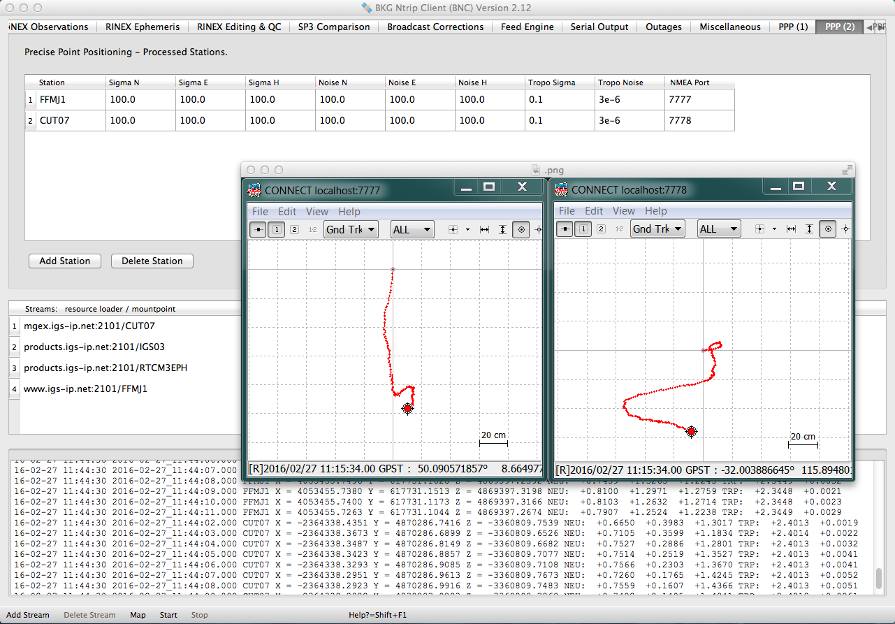
Figure 23: Precise Point Positioning with BNC, PPP Panel 2, using RTKPLOT for visualization
Hit the 'Add Station' button, double click on the 'Station' field, then specify an observation's mountpoint from the 'Streams' section or introduce the 4-character Station ID of your RINEX observation file and hit Enter. BNC will only produce PPP solutions for stations listed in this table.
Enter sigmas in meters for the initial coordinate components. A value of 100.0 (default) may be an appropriate choice. However, this value may be significantly smaller (e.g. 0.01) when starting for example from a station with a well-known position in so-called Quick-Start mode.
Enter a white 'Noise' in meters for estimated coordinate components. A value of 100.0 (default) may be appropriate when considering possible sudden movements of a rover.
Enter a sigma in meters for the a priori model based tropospheric delay estimation. A value of 0.1 (default) may be an appropriate choice.
Enter a white 'Noise' in meters per second to describe the expected variation of the tropospheric effect. Supposing 1Hz observation data, a value of 3e-6 (default) would mean that the tropospheric effect may vary for 3600 * 3e-6 = 0.01 meters per hour.
Note also that Tomoji Takasu has written a program named RTKPLOT for visualizing NMEA sentences from IP ports or files. It is available from http://www.rtklib.com and compatible with the NMEA file and port output of BNC's 'PPP' client option.
Furthermore, NASA's 'World Wind' software (see http://worldwindcentral.com/wiki/NASA_World_Wind_Download) can be used for real-time visualization of positions provided through BNC's NMEA IP output port. You need the 'GPS Tracker' plug-in available from http://worldwindcentral.com/wiki/GPS_Tracker for that. The 'Word Wind' map resolution is not meant for showing centimeter level details.
BNC allows using various Point Positioning processing options depending on the capability of the involved receiver and the application in mind. You can introduce specific sigmas for code and phase observations as well as for a priori coordinates and troposphere estimates. You could also carry out your PPP solution in Quick-Start mode or enforce BNC to restart a solution if the length of an outage exceeds a certain threshold.
The intention of this panel is to specify general processing options to be applied to all PPP threads in one BNC job.
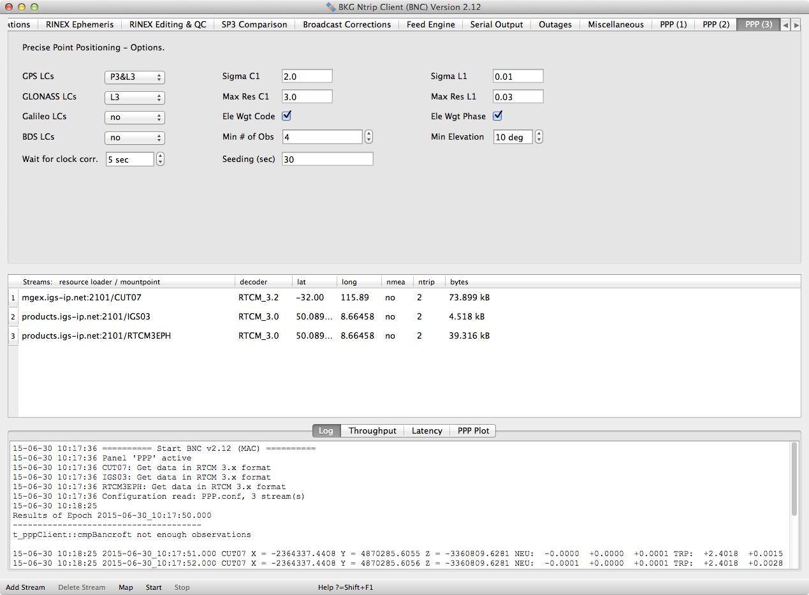
Figure 24: Precise Point Positioning with BNC, PPP Panel 3
Specify on which ionosphere-free Linear Combinations (LCs) of observations you want to base ambiguity resolutions (Mervart et al. 2008). This implicitly defines the kind of GNSS observations you want to use. The specification is to be done per GNSS system ('GPS LCs', 'GLONASS LCs', 'Galileo LCs', 'BDS LCs').
Note that most geodetic GPS receivers support the observation of both, code and phase data. Hence, specifying 'P3&L3' would be a good choice for GPS when processing data from such a receiver. If multi-GNSS data processing is your intention, make sure your receiver supports GLONASS and/or Galileo and/or BDS observations besides GPS. Note also that the Broadcast Correction stream or file, which is required for PPP, also supports all the systems you have in mind.
Specifying 'no' means that you do not at all want BNC to use observations from the affected GNSS system.
Specify a maximum for residuals 'Max Res C1' for C1 code observations in a PPP solution. '3.0' meters may be an appropriate choice for that. If the maximum is exceeded, contributions from the corresponding observation will be ignored in the PPP solution.
Enter a 'Sigma L1' for L1 phase observations in meters. The bigger the sigma you enter, the less the contribution of L1 phase observations to a PPP solutions based on a combination of code and phase data. '0.01' meters is likely to be an appropriate choice.
Specify a maximum for residuals 'Max Res L1' for L1 phase observations in a PPP solution. '0.03' meters may be an appropriate choice for that. If the maximum is exceeded, contributions from the corresponding observation will be ignored in the PPP solution.
As the convergence characteristic of a PPP solution can be influenced by the ratio of sigmas for code and phase, you may like to introduce sigmas which differ from the default values.
BNC allows elevation dependent weighting when processing GNSS observations. A weight function
P = cos² * z
with 'z' being the zenith distance to the involved satellite can be applied instead of the simple weight function 'P = 1' independent from satellite elevation angles.
Default is using the plain weight function 'P = 1' for code and phase observations.
Select the minimum number of observations you want to use per epoch. The minimum for parameter 'Min # of Obs' is 4. This is also the default.
Select a minimum for satellite elevation angles. Selecting '10 deg' for option 'Min Elevation' may be an appropriate choice.
Default is '0 deg', meaning that any observation will be used regardless of the involved satellite elevation angle.
Specifying 'no' for option 'Wait for clock corr.' means that BNC processes each epoch of data immediately after its arrival using satellite clock corrections available at that time. A non-zero value means that epochs of data are buffered and the processing of each epoch is postponed until satellite clock corrections not older than 'Wait for clock corr.' seconds are available. Specifying a value of half the update rate of the clock corrections (e.g. 5 sec) may be appropriate. Note that this causes an additional delay of the PPP solutions in the amount of half of the update rate.
Using observations in sync with the corrections can avoid a possible high frequency noise of PPP solutions. Such noise could result from processing observations regardless of how late after a clock correction they were received. Note that applying the 'Wait for clock corr.' option significantly reduces the PPP computation effort for BNC.
Default is an empty option field, meaning that you want BNC to process observations immediately after their arrival through applying the latest received clock correction.
Enter the length of a startup period in seconds for which you want to fix the PPP solution to a known position, see option 'Coordinates file'. Constraining a priori coordinates is done in BNC through setting their white 'Noise' temporarily to zero.
This so-called Quick-Start option allows the PPP solutions to rapidly converge after startup. It requires that the antenna remains unmoved on the known position throughout the defined period. A value of '60' seconds is likely to be an appropriate choice for 'Seeding'. Default is an empty option field, meaning that you do not want BNC to start in Quick-Start mode.
You may need to create your own reference coordinate beforehand through running BNC for an hour in normal mode before applying the 'Seeding' option. Do not forget to introduce realistic North/East/Up sigmas under panel 'PPP (2)' corresponding to the coordinate's precision.
'Seeding' has also a function for bridging gaps in PPP solutions from failures caused e.g. by longer lasting outages. Should the time span between two consecutive solutions exceed the limit of 60 seconds (maximum solution gap, hard-wired), the algorithm fixes the latest derived coordinate for a period of 'Seeding' seconds. This option avoids time-consuming reconvergences and makes especially sense for stationary operated receivers where convergence can be enforced because a good approximation for the receiver position is known.
The following figure provides the screenshot of an example PPP session with BNC.
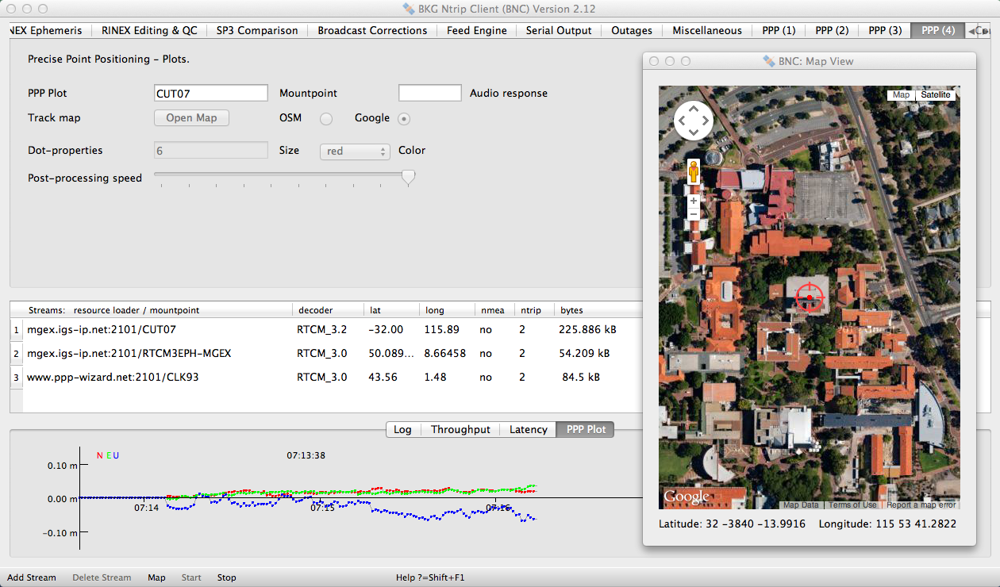
Figure 25: Precise Point Positioning with BNC in 'Quick-Start' mode, PPP Panel 4
This panel presents options for visualizing PPP results as a time series plot or as a track map with PPP tracks on top of OSM or Google maps.
PPP time series of North (red), East (green) and Up (blue) displacements will be plotted under the 'PPP Plot' tab when a 'Mountpoint' is specified. Values will be referred to an XYZ reference coordinate (if specified, see 'Coordinates file'). The sliding PPP time series window will cover the period of the latest 5 minutes.
Note that a PPP dicplacements time series makes only sense for a stationary operated receiver.
For natural hazard prediction and monitoring landslides, it may be appropriate to generate audio alerts. For that you can specify an 'Audio response' threshold in meters. A beep is produced by BNC whenever a horizontal PPP coordinate component differs by more than the threshold value from the specified marker coordinate.
Default is an empty option field, meaning that you do not want BNC to produce acoustic warnings.
You may like to track your rover position using Google Maps or OpenStreetMap as a background map. Track maps can be produced with BNC in 'Real-time Streams' mode or in 'RINEX Files' post processing mode with data coming from files.
Even when in 'RINEX Files' post processing mode, you should not forget to go online with your host and specify a proxy under the 'Network' panel if that is operated in front of BNC.
The 'Open Map' button opens a window showing a map according to the selected 'Google/OSM' option.
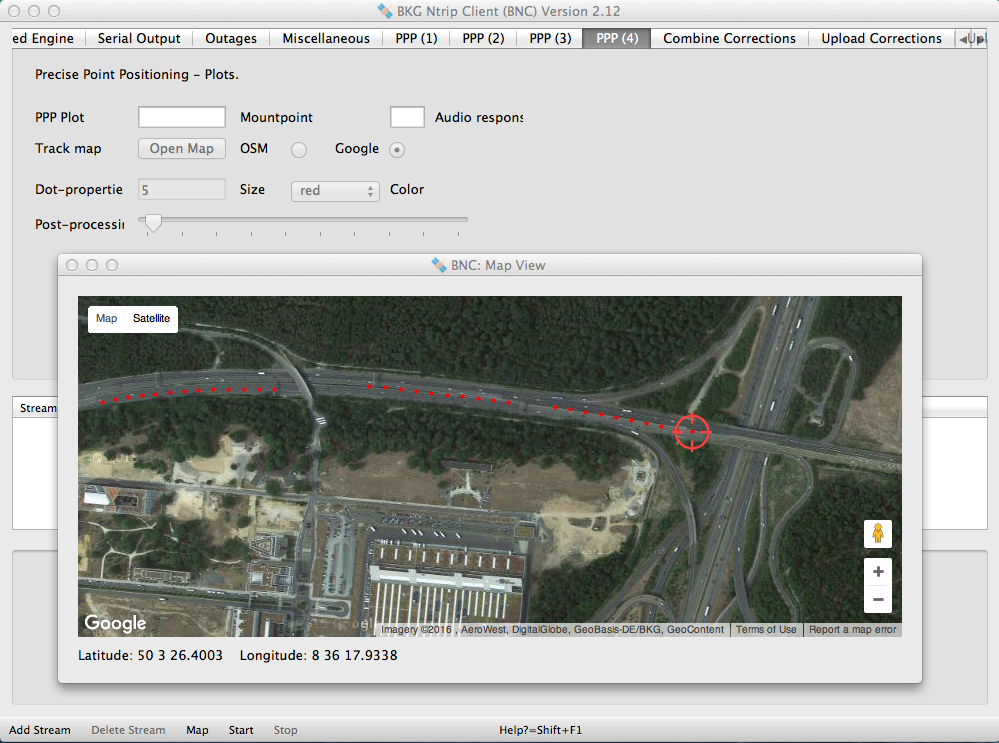
Figure 26: Track of positions from BNC with Google Maps in background
Select either 'Google' or 'OSM' as the background map for your rover positions.
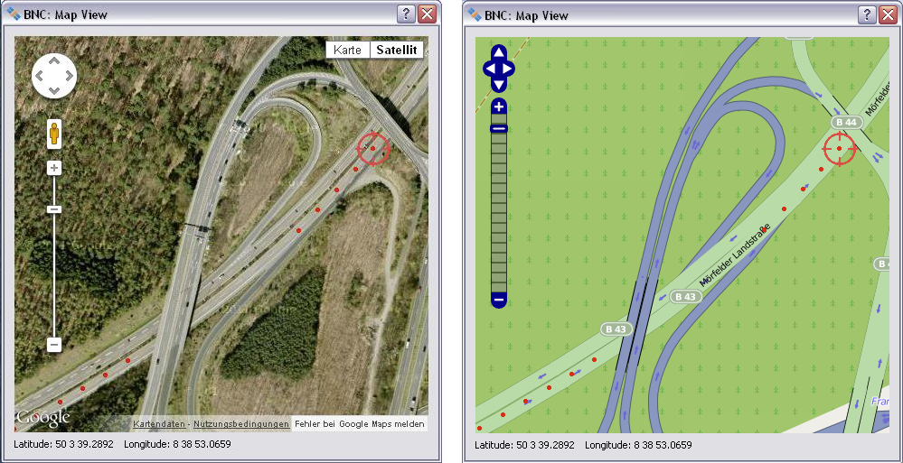
Figure 27: Example for background map from Google Maps and OpenStreetMap (OSM)
PPP tracks are presented on maps through plotting one colored dot per observation epoch.
Specify the size of dots showing the rover position. A dot size of '3' may be appropriate. The maximum possible dot size is '10'. An empty option field or a size of '0' would mean that you do not want BNC to show the rover's track on the map.
Select the color of dots showing the rover track.
With BNC in PPP 'RINEX File' post processing mode, you can specify the speed of computations as appropriate for visualization. Note that you can adjust 'Post-processing speed' on-the-fly while BNC is already processing your observations.
BNC allows processing several orbit and clock correction streams in real-time to produce, encode, upload and save a combination of Broadcast Corrections from various providers. All corrections must refer to satellite Antenna Phase Centers (APC). It is so far only the satellite clock corrections which are combined by BNC while orbit corrections in the combination product as well as product update rates are just taken over from one of the incoming Broadcast Correction streams. Combining only clock corrections using a fixed orbit reference imposes the potential to introduce some analysis inconsistencies. We may therefore eventually consider improvements on this approach. The clock combination can be based either on a plain 'Single-Epoch' or on a Kalman 'Filter' approach.
In the Kalman Filter approach, satellite clocks estimated by individual Analyses Centers (ACs) are used as pseudo observations within the adjustment process. Each observation is modeled as a linear function (actually a simple sum) of three estimated parameters: AC specific offset, satellite specific offset common to all ACs, and the actual satellite clock correction, which represents the result of the combination. These three parameter types differ in their statistical properties. The satellite clock offsets are assumed to be static parameters while AC specific and satellite specific offsets are stochastic parameters affected by white noise.
The solution is regularized by a set of minimal constraints. In case of a change of the 'SSR Provider ID', 'SSR Solution ID', or 'IOD SSR' (see section 'Upload Corrections'), the satellite clock offsets belonging to the corresponding analysis center are reset in the adjustment.
Removing the AC-dependent biases as well as possible is a major issue with clock combinations. Since they vary in time, it can be tricky to do this. Otherwise, there will be artificial jumps in the combined clock stream if one or more AC contributions drop out for certain epochs. Here the Kalman Filter approach is expected to do better than the Single-Epoch approach.
In view of IGS real-time products, the 'Combine Corrections' functionality has been integrated in BNC (Weber and Mervart 2010) because
Note that the combination process requires real-time access to Broadcast Ephemeris. Therefore, in addition to the orbit and clock correction streams BNC must pull a stream carrying Broadcast Ephemeris in the form of RTCM Version 3 messages. Stream 'RTCM3EPH' on caster products.igs-ip.net is an example for that. Note further that BNC will ignore incorrect or outdated Broadcast Ephemeris data when necessary, leaving a note 'WRONG EPHEMERIS' or 'OUTDATED EPHEMERIS' in the logfile.
A combination is carried out following a specified sampling interval. BNC waits for incoming Broadcast Corrections for the period of one such interval. Corrections received later than that will be ignored. If incoming streams have different rates, only epochs that correspond to the sampling interval are used.
With respect to IGS, it is important to understand that a major effect in the combination of GNSS orbit and clock correction streams is the selection of ACs to include. It is likely that a combination product could be improved in accuracy by using only the best two or three ACs. However, with only a few ACs to depend on, the reliability of the combination product could suffer and the risk of total failures increases. So there is an important tradeoff here that must be considered when selecting streams for a combination. The major strength of a combination product is its reliability and stable median performance which can be much better than that of any single AC product.
This comment applies in situations where we have a limited number of solutions to combine and their quality varies significantly. The situation may be different when the total number of ACs is larger and the range of AC variation is smaller. In that case, a standard full combination is probably the best.
The following recursive algorithm is used to detect orbit outliers in the Kalman Filter combination when Broadcast Corrections are provided by several ACs:
Step 1: We do not produce a combination for a certain satellite if only one AC provides corrections for it.
Step 2: A mean satellite position is calculated as the average of positions from all ACs.
Step 3: For each AC and satellite, the 3D distance between individual and mean satellite position is calculated.
Step 4: We find the greatest difference between AC specific and mean satellite positions.
Step 5: If that is less than a threshold, the conclusion is that we do not have an outlier and can proceed to the next epoch.
Step 6: If that is greater than a threshold, then corrections of the affiliated AC are ignored for the affected epoch and the outlier detection restarts with step 1.
The following screenshot shows an example setup of BNC when combining Broadcast Correction streams CLK11, CLK21, CLK91, and CLK80.
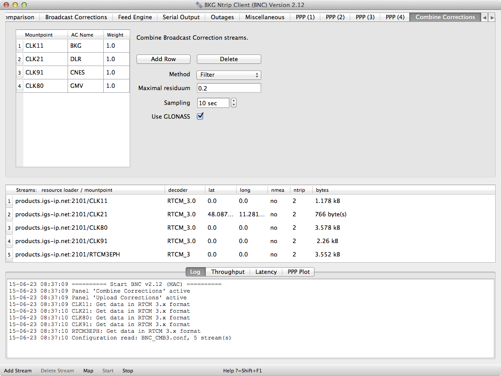
Figure 28: BNC combining Broadcast Correction streams
Note that BNC can produce an internal PPP solution from combined Broadcast Corrections. For that you have to specify the keyword 'INTERNAL' as 'Corrections stream' in the PPP (1) panel. The following example combines correction streams IGS01 and IGS02 and simultaneously carries out a PPP solution with observations from stream FFMJ1 to allow monitoring the quality of the combination product in the space domain.
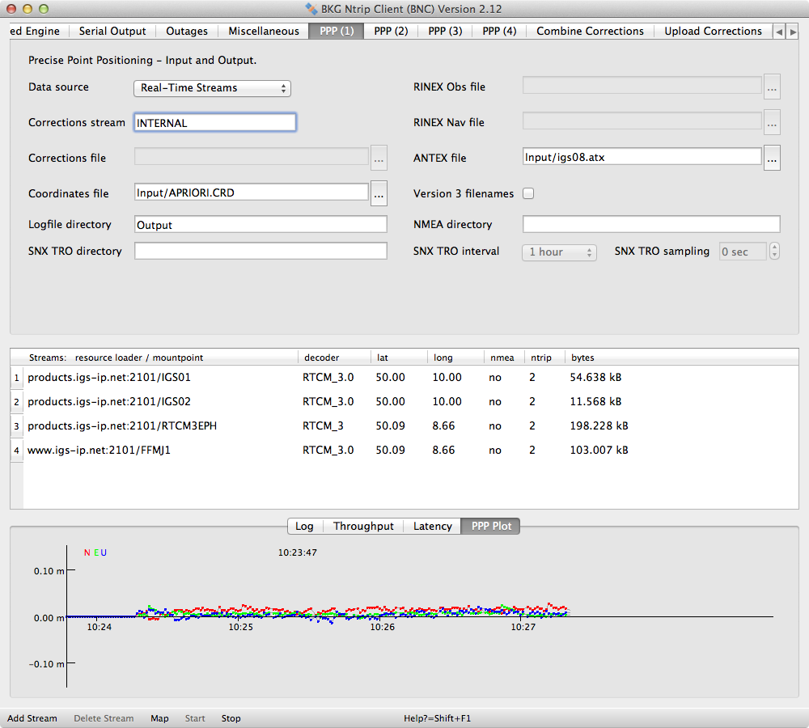
Figure 29: 'INTERNAL' PPP with BNC using a combination of Broadcast Corrections
Hit the 'Add Row' button, double click on the 'Mountpoint' field, enter a Broadcast Correction mountpoint from the 'Streams' section and hit Enter. Then double click on the 'AC Name' field to enter your choice of an abbreviation for the Analysis Center (AC) providing the Antenna Phase Center (APC) related correction stream. Finally, double click on the 'Weight' field to enter a weight to be applied to this stream in the combination.
The sequence of entries in the 'Combine Corrections' table is not of importance. Note that the orbit information in the final combination stream is just copied from one of the incoming streams. The stream used for providing the orbits may vary over time: if the orbit-providing stream has an outage then BNC switches to the next remaining stream for getting hold of the orbit information.
It is possible to specify only one Broadcast Ephemeris correction stream in the 'Combine Corrections' table. Instead of combining corrections from several sources, BNC will then merge the single corrections stream with Broadcast Ephemeris to allow saving results in SP3 and/or Clock RINEX format when specified accordingly under the 'Upload Corrections' panel. Note that in such a BNC application you must not pull more than one Broadcast Ephemeris correction stream even if a second stream would provide the same corrections from a backup caster.
Default is an empty 'Combine Corrections' table, meaning that you do not want BNC to combine orbit and clock correction streams.
Hit 'Add Row' button to add another row to the 'Combine Corrections' table or hit the 'Delete' button to delete the highlighted row(s).
Select a clock combination method. Available options are Kalman 'Filter' and 'Single-Epoch. It is suggested to use the Kalman Filter approach in case the combined stream of Broadcast Corrections is intended for Precise Point Positioning.
BNC combines all incoming clocks according to specified weights. Individual clock estimates that differ by more than 'Maximal Residuum' meters from the average of all clocks will be ignored.
It is suggested to specify a value of about 0.2 m for the Kalman Filter combination approach and a value of about 3.0 meters for the Single-Epoch combination approach.
Default is a 'Maximal Residuum' of 999.0 meters.
Specify a combination sampling interval. Orbit and clock corrections will be produced following that interval. A value of 10 sec may be an appropriate choice.
You may tick the 'Use GLONASS' option in case you want to produce a GPS plus GLONASS combination and both systems are supported by the Broadcast Correction streams participating in the combination.
BNC can upload streams carrying orbit and clock corrections to Broadcast Ephemeris in radial, along-track and out-of-plane components if they are
The orbit and clock corrections to Broadcast Ephemeris are usually referred to the latest set of broadcast messages, which are generally also received in real-time by a GNSS rover. However, the use of the latest broadcast message is delayed for a period of 60 seconds, measured from the time of complete reception of ephemeris and clock parameters, in order to accommodate rover applications to obtain the same set of broadcast orbital and clock parameters. This procedure is recommended in the RTCM SSR standard.
Because the stream delivery process may put a significant load on the communication link between BNC and the real-time GNSS engine, it is recommended to run both programs on the same host. However, doing so is not compulsory.The usual handling of BNC when uploading a stream with Broadcast Corrections is that you first specify Broadcast Ephemeris and Broadcast Correction streams. You then specify an Ntrip Broadcaster for stream upload before you start the program.
'RTNET' Stream Format
When uploading an SSR stream generated according to (b) then BNC requires precise GNSS orbits and clocks in the IGS Earth-Centered-Earth-Fixed (ECEF) reference system and in a specific ASCII format named 'RTNET' because the data may come from a real-time engine such as RTNET. The sampling interval for data transmission should not exceed 15 sec. Note that otherwise tools involved in IP streaming such as Ntrip Broadcasters or Ntrip Clients may respond with a timeout.
Below you find an example for the 'RTNET' ASCII format coming from a real-time GNSS engine. Each epoch begins with an asterisk character followed by the time as year, month, day of month, hour, minute and second. Subsequent records can provide
A set of parameters can be defined for each satellite as follows:
<SatelliteID> <key> <numValues> <value1 value2 ...>
<key> <numValues> <value1 value2 ...> ...
The following satellite specific keys and values are currently specified for that in BNC:| Key | Values |
| APC | Satellite Antenna Phase Center coordinates in meters |
| Clk | Satellite clock correction in meters, relativistic correction applied like in broadcast clocks |
| Vel | Satellite velocity in meters per second |
| CoM | Satellite Center of Mass coordinates in meters |
| CodeBias | Satellite Code Biases in meters with two characters for frequency and tracking mode per bias as defined in RINEX 3 and preceded by total number of biases |
| YawAngle | Satellite Yaw Angle in radian, restricted to be in [0, 2π] which shall be used for the computation of phase wind-up correction |
| YawRate | Satellite Yaw Rate in radian per second which is the rate of Yaw Angle |
| PhaseBias | Satellite Phase Biases in meters with two characters for frequency and tracking mode per bias as defined in RINEX 3, preceded by total number of biases and followed by Signal Integer Indicator, Signals Wilde-Lane Integer Indicator as well as Signal Discontinuity Counter |
The following syntax will be used:
<key> <value1 value2 ...>
The following non-satellite specific keys and values are currently specified in BNC:
| Key | Values |
| IND | Stands for phase bias information and is followed by Dispersive Bias Consistency Indicator and MW Consistency Indicator |
| VTEC | Stands for Vertical TEC information and is followed by Update Interval and Number of Ionospheric Layers |
Because each keyword is associated to a certain number of values, an 'old' BNC could be operated with an incoming 'new' RTNET stream containing so far unknown keys - they would just be skipped in BNC.
Example for 'RTNET' stream content and format:
* 2015 6 11 15 10 40.000000 VTEC 0 1 0 6 6 450000.0 20.4660 0.0000 0.0000 0.0000 0.0000 0.0000 0.0000 5.3590 9.6580 0.0000 0.0000 0.0000 0.0000 0.0000 -6.3610 -0.1210 1.1050 0.0000 0.0000 0.0000 0.0000 -2.7140 -1.8200 -0.9920 -0.6430 0.0000 0.0000 0.0000 1.9140 -0.5180 0.2530 0.0870 -0.0110 0.0000 0.0000 2.2950 1.0510 -0.9540 0.6220 -0.0720 -0.0810 0.0000 -0.9760 0.7570 0.2320 -0.2520 0.1970 -0.0680 -0.0280 0.0000 0.0000 0.0000 0.0000 0.0000 0.0000 0.0000 0.0000 0.2720 0.0000 0.0000 0.0000 0.0000 0.0000 0.0000 1.1100 -1.0170 0.0000 0.0000 0.0000 0.0000 0.0000 -1.1500 0.5440 0.9890 0.0000 0.0000 0.0000 0.0000 -0.3770 -0.1990 0.2670 -0.0470 0.0000 0.0000 0.0000 0.6550 -0.0130 -0.2310 -0.4810 -0.3510 0.0000 0.0000 0.2360 -0.0710 0.0280 0.1900 -0.0810 0.0710 IND 0 1 G01 APC 3 -14442611.532 -13311059.070 -18020998.395 Clk 1 -1426.920500 Vel 3 2274.647600 -28.980300 -1787.861900 CoM 3 -14442612.572 -13311059.518 -18020999.539 CodeBias 6 1W -3.760000 1C -3.320000 2W -6.200000 2X -5.780000 1H -3.350000 5I -5.430000 YawAngle 1 -0.315600 YawRate 1 0.0 PhaseBias 3 1C 3.9473 1 2 4 2W 6.3143 1 2 4 5I 6.7895 1 2 4 G02 APC 3 -8859103.160 14801278.856 20456920.800 Clk 1 171219.083500 Vel 3 -2532.296700 -161.275800 -1042.884100 CoM 3 -8859103.418 14801279.287 20456921.395 CodeBias 6 1W 3.930000 1C 3.610000 2W 6.480000 2X 0.000000 1H 3.580000 5I 0.000000 YawAngle 1 -0.693500 YawRate 1 0.0 PhaseBias 2 1C -4.0902 1 2 4 2W -6.7045 1 2 4 G03 APC 3 -13788295.679 -22525098.353 2644811.508 Clk 1 104212.074300 Vel 3 102.263400 -429.953400 -3150.231900 CoM 3 -13788296.829 -22525099.534 2644811.518 CodeBias 6 1W -2.650000 1C -2.160000 2W -4.360000 2X -4.480000 1H -2.070000 5I -5.340000 YawAngle 1 -0.428800 YawRate 1 0.0 PhaseBias 3 1C 2.9024 1 2 2 2W 4.6124 1 2 2 5I 5.3694 1 2 2 .. R01 APC 3 -6783489.153 -23668850.753 6699094.457 Clk 1 - 45875.658100 Vel 3 -267.103000 -885.983700 -3403.253200 CoM 3 -6783489.307 -23668853.173 6699095.274 CodeBias 4 1P -2.496400 1C -2.490700 2P -4.126600 2C -3.156200 R02 APC 3 -11292959.022 -10047039.425 20577343.288 Clk 1 41215.750900 Vel 3 -476.369400 -2768.936600 -1620.000600 CoM 3 -11292959.672 -10047040.710 20577345.344 CodeBias 4 1P 0.211200 1C 0.391300 2P 0.349100 2C 0.406300 R03 APC 3 -9226469.614 9363128.850 21908853.313 Clk 1 13090.322800 Vel 3 -369.088600 -2964.934500 1111.041000 CoM 3 -9226470.226 9363129.442 21908855.791 CodeBias 4 1P 2.283800 1C 2.483800 2P 3.775300 2C 3.785500 .. E11 APC 3 2965877.898 17754418.441 23503540.946 Clk 1 33955.329000 Vel 3 -1923.398100 1361.709200 -784.555800 CoM 3 2965878.082 17754418.669 23503541.507 CodeBias 3 1B 1.382100 5Q 2.478400 7Q 2.503300 E12 APC 3 -14807433.144 21753389.581 13577231.476 Clk 1 -389652.211900 Vel 3 -1082.464300 825.868400 -2503.982200 CoM 3 -14807433.366 21753389.966 13577231.926 CodeBias 3 1B 0.386600 5Q 0.693300 7Q 0.534700 E19 APC 3 -15922225.351 8097517.292 23611910.403 Clk 1 -2551.650800 Vel 3 -183.377800 -2359.143700 684.105100 CoM 3 -15922225.569 8097517.329 23611910.995 CodeBias 3 1B -1.777000 5Q -3.186600 7Q -3.069100 .. EOE
Note that the end of an epoch in the incoming stream is indicated by an ASCII string 'EOE' (for End Of Epoch).
When using clocks from Broadcast Ephemeris (with or without applied corrections) or clocks from SP3 files, it may be important to understand that they are not corrected for the conventional periodic relativistic effect. Chapter 10 of the IERS Conventions 2003 mentions that the conventional periodic relativistic correction to the satellite clock (to be added to the broadcast clock) is computed as
dt = -2 (R * V) / c2where R * V is the scalar product of the satellite position and velocity and c is the speed of light. This can also be found in the GPS Interface Specification, IS-GPS-200, Revision D, 7 March 2006.
Hit 'Add Row' button to add a row to the stream 'Upload Table' or hit the 'Delete' button to delete the highlighted row(s).
Having an empty 'Upload Table' is default and means that you do not want BNC to upload orbit and clock correction streams to any Ntrip Broadcaster.
Specify the domain name or IP number of an Ntrip Broadcaster for uploading the stream. Furthermore, specify the caster's listening IP port, an upload mountpoint and an upload password. Note that Ntrip Broadcasters are often configured to provide access through more than one port, usually ports 80 and 2101. If you experience communication problems on port 80, you should try to use the alternative port(s).
BNC uploads a stream to the Ntrip Broadcaster by referring to a dedicated mountpoint that has been set by its operator. Specify the mountpoint based on the details you received for your stream from the operator. It is often a 4-character ID (capital letters) plus an integer number.
The stream upload may be protected through an upload 'Password'. Enter the password you received from the Ntrip Broadcaster operator along with the mountpoint(s).
If 'Host', 'Port', 'Mountpoint' and 'Password' are set, the stream will be encoded in RTCM's 'State Space Representation' (SSR) messages and uploaded to the specified broadcaster following the Ntrip Version 1 transport protocol.
BNC allows configuring several Broadcast Correction streams for upload so that they refer to different reference systems and different Ntrip Broadcasters. You may use this functionality for parallel support of a backup Ntrip Broadcaster or for simultaneous support of various regional reference systems. Available options for transforming orbit and clock corrections to specific target reference systems are
Because a mathematically strict transformation to a regional reference system is not possible on the BNC server side when a scale factor is involved, the program follows an approximate solution. While orbits are transformed in full accordance with given equations, a transformed clock is derived through applying correction term
dC = (s - 1) / s * ρ / c
where s is the transformation scale, c is the speed of light, and ρ are the topocentric distance between an (approximate) center of the transformation's validity area and the satellite.
From a theoretical point of view, this kind of approximation leads to inconsistencies between orbits and clocks and is therefore not allowed (Huisman et al. 2012). However, it has been proved that resulting errors in Precise Point Positioning are on millimeter level for horizontal components and below one centimeter for height components. The Australian GDA94 transformation with its comparatively large scale parameter is an exception in this as discrepancies may reach up there to two centimeters.
IGS08: As the orbits and clocks coming from real-time GNSS engine are expected to be in the IGS08 system, no transformation is carried out if this option is selected.
ETRF2000: The formulas for the transformation 'ITRF2008->ETRF2000' are taken from 'Claude Boucher and Zuheir Altamimi 2008: Specifications for reference frame fixing in the analysis of EUREF GPS campaign', see http://etrs89.ensg.ign.fr/memo-V8.pdf. The following 14 Helmert Transformation Parameters were introduced:
Translation in X at epoch To: 0.0521 m Translation in Y at epoch To: 0.0493 m Translation in Z at epoch To: -0.0585 m Translation rate in X: 0.0001 m/y Translation rate in Y: 0.0001 m/y Translation rate in Z: -0.0018 m/y Rotation in X at epoch To: 0.891 mas Rotation in Y at epoch To: 5.390 mas Rotation in Z at epoch To: -8.712 mas Rotation rate in X: 0.081 mas/y Rotation rate in Y: 0.490 mas/y Rotation rate in Z: -0.792 mas/y Scale at epoch To : 0.00000000134 Scale rate: 0.00000000008 /y To: 2000.0
NAD83: Formulas for the transformation 'ITRF2008->NAD83' are taken from 'Chris Pearson, Richard Snay 2013: Introducing HTDP 3.1 to transform coordinates across time and spatial reference frames', GPS Solutions, January 2013, Volume 17, Issue 1, pp 1-15.
Translation in X at epoch To: 0.99343 m Translation in Y at epoch To: -1.90331 m Translation in Z at epoch To: -0.52655 m Translation rate in X: 0.00079 m/y Translation rate in Y: -0.00060 m/y Translation rate in Z: -0.00134 m/y Rotation in X at epoch To: -25.91467 mas Rotation in Y at epoch To: -9.42645 mas Rotation in Z at epoch To: -11.59935 mas Rotation rate in X: -0.06667 mas/y Rotation rate in Y: 0.75744 mas/y Rotation rate in Z: 0.05133 mas/y Scale at epoch To : 0.00000000171504 Scale rate: -0.00000000010201 /y To: 1997.0
GDA94: The formulas for the transformation 'ITRF2008->GDA94' are taken from 'John Dawson, Alex Woods 2010: ITRF to GDA94 coordinate transformations', Journal of Applied Geodesy, 4 (2010), 189-199, de Gruyter 2010. DOI 10.1515/JAG.2010.019'.
Translation in X at epoch To: -0.08468 m Translation in Y at epoch To: -0.01942 m Translation in Z at epoch To: 0.03201 m Translation rate in X: 0.00142 m/y Translation rate in Y: 0.00134 m/y Translation rate in Z: 0.00090 m/y Rotation in X at epoch To: 0.4254 mas Rotation in Y at epoch To: -2.2578 mas Rotation in Z at epoch To: -2.4015 mas Rotation rate in X: -1.5461 mas/y Rotation rate in Y: -1.1820 mas/y Rotation rate in Z: -1.1551 mas/y Scale at epoch To : 0.000000009710 Scale rate: 0.000000000109 /y To: 1994.0
SIRGAS2000: The formulas for the transformation 'ITRF2008->SIRGAS2000' were provided via personal communication from CGED-Coordenacao de Geodesia, IBGE/DGC - Diretoria de Geociencias, Brazil..
Translation in X at epoch To: 0.0020 m Translation in Y at epoch To: 0.0041 m Translation in Z at epoch To: 0.0039 m Translation rate in X: 0.0000 m/y Translation rate in Y: 0.0000 m/y Translation rate in Z: 0.0000 m/y Rotation in X at epoch To: 0.170 mas Rotation in Y at epoch To: -0.030 mas Rotation in Z at epoch To: 0.070 mas Rotation rate in X: 0.000 mas/y Rotation rate in Y: 0.000 mas/y Rotation rate in Z: 0.000 mas/y Scale at epoch To : -0.000000001000 Scale rate: 0.000000000000 /y To: 0000.0
SIRGAS95: The formulas for the transformation 'ITRF2005->SIRGAS95' were provided via personal communication from Gustavo Acuha, Laboratorio de Geodesia Fisica y Satelital at Zulia University (LGFS-LUZ), parameters based on values from Table 4.1 of "Terrestrial Reference Frames (April 10, 2009), Chapter 4" in http://tai.bipm.org/iers/convupdt/convupdt_c4.html..
Translation in X at epoch To: 0.0077 m Translation in Y at epoch To: 0.0058 m Translation in Z at epoch To: -0.0138 m Translation rate in X: 0.0000 m/y Translation rate in Y: 0.0000 m/y Translation rate in Z: 0.0000 m/y Rotation in X at epoch To: 0.000 mas Rotation in Y at epoch To: 0.000 mas Rotation in Z at epoch To: -0.003 mas Rotation rate in X: 0.000 mas/y Rotation rate in Y: 0.000 mas/y Rotation rate in Z: 0.000 mas/y Scale at epoch To : 0.00000000157 Scale rate: -0.000000000000 /y To: 1995.4
DREF91: 'Referenzkoordinaten fuer SAPOS, Empfehlungen der Projektgruppe SAPOS-Koordinatenmonitoring 2008', Personal communication with Peter Franke, BKG, Germany. The following 14 Helmert Transformation Parameters were introduced:
Translation in X at epoch To: -0.0118 m Translation in Y at epoch To: 0.1432 m Translation in Z at epoch To: -0.1117 m Translation rate in X: 0.0001 m/y Translation rate in Y: 0.0001 m/y Translation rate in Z: -0.0018 m/y Rotation in X at epoch To: 3.291 mas Rotation in Y at epoch To: 6.190 mas Rotation in Z at epoch To: -11.012 mas Rotation rate in X: 0.081 mas/y Rotation rate in Y: 0.490 mas/y Rotation rate in Z: -0.792 mas/y Scale at epoch To : 0.00000001224 Scale rate: 0.00000000008 /y To: 2000.0
Custom: Feel free to specify your own 14 Helmert Transformation parameters for transformations from IGS08/ITRF2008 into your own target system.

Figure 30: Setting BNC's Custom Transformation Parameters window, example for 'ITRF2008->GDA94'
BNC allows to either refer Broadcast Corrections to the satellite's Center of Mass (CoM) or to the satellite's Antenna Phase Center (APC). By default, corrections refer to APC. Tick 'Center of Mass' to refer uploaded corrections to CoM.
Specify a path for saving the generated orbit corrections as SP3 orbit files. If the specified directory does not exist, BNC will not create SP3 orbit files. The following is a path example for a Linux system:
/home/user/BNC${GPSWD}.sp3
Note that '${GPSWD}' produces the GPS Week and Day number in the filename.
Default is an empty option field, meaning that you do not want BNC to save the uploaded stream content in daily SP3 files.
As a SP3 file content should be referred to the satellites' Center of Mass (CoM) while Broadcast Corrections are referred to the satellites' APC, an offset has to be applied which is available from an IGS ANTEX file (see option 'ANTEX File' below). Hence, you should specify the 'ANTEX File' path there if you want to save the stream content in SP3 format. If you do not specify an 'ANTEX File' path, the SP3 file content will be referred to the satellites APCs.
The filenames for the daily SP3 files follow the convention for SP3 filenames. The first three characters of each filename are set to 'BNC'. Note that clocks in the SP3 orbit files are not corrected for the conventional periodic relativistic effect.
In case the 'Combine Corrections' table contains only one Broadcast Correction stream, BNC will merge that stream with Broadcast Ephemeris to save results in files specified here through SP3 and/or Clock RINEX file path. In such a case you have to define only the SP3 and Clock RINEX file path and no further option in the 'Upload Corrections' table.
Note that BNC outputs a complete list of SP3 'Epoch Header Records', even if no 'Position and Clock Records' are available for certain epochs because of stream outages. Note further that the 'Number of Epochs' in the first SP3 header record may not be correct because that number is not available when the file is created. Depending on your processing software (e.g. Bernese GNSS Software, BSW) it could therefore be necessary to correct an incorrect 'Number of Epochs' in the file before you use it in post processing.
The clock corrections generated by BNC for upload can be logged in Clock RINEX format. The file naming follows the RINEX convention.
Specify a path for saving the generated clock corrections as Clock RINEX files. If the specified directory does not exist, BNC will not create Clock RINEX files. The following is a path example for a Linux system:
/home/user/BNC${GPSWD}.clk
Note that '${GPSWD}' produces the GPS Week and Day number in the filename.
Note further that clocks in the Clock RINEX files are not corrected for the conventional periodic relativistic effect.
When applying Broadcast Ephemeris corrections in a PPP algorithm or in a combination of several correction streams, it is important for the client software to receive information on the continuity of discontinuity of the stream contents. Here you can specify three ID's to describe the contents of your Broadcast Ephemeris correction stream when it is uploaded.
Select the length of Clock RINEX files and SP3 Orbit files. The default value is 1 day.
BNC requires an orbit corrections sampling interval for the stream to be uploaded and sampling intervals for SP3 and Clock RINEX files. The outgoing stream's clock correction sampling interval follows that of incoming corrections and is therefore nothing to be specified here.
Select the stream's orbit correction sampling interval in seconds. A value of 60 sec may be appropriate.
A value of zero '0' tells BNC to upload all orbit correction samples coming in from the real-time GNSS engine along with the clock correction samples to produce combined orbit and clock corrections to Broadcast Ephemeris (1060 for GPS, 1066 for GLONASS).
Configuration examples:
Let us suppose a real-time network engine supporting BNC every 5 sec with GPS Broadcast Corrections for orbits, clocks and code biases in 'RTNET' stream format.Select the SP3 orbit file sampling interval in minutes. A value of 15 min may be appropriate. A value of zero '0' tells BNC to store all available samples into SP3 orbit files.
Select the Clock RINEX file sampling interval in seconds. A value of 10 sec may be appropriate. A value of zero '0' tells BNC to store all available samples into Clock RINEX files.
Hit 'Custom Trafo' to specify your own 14 parameter Helmert Transformation instead of selecting a predefined transformation through 'System' button.
IGS provides a file containing absolute phase center variations for GNSS satellite and receiver antennas in ANTEX format. Entering the full path to such an ANTEX file is required here for referring the SP3 file content to the satellite's Center of Mass (CoM). If you do not specify an ANTEX file, the SP3 file will contain orbit information which is referred to Antenna Phase Center (APC) instead of CoM.
The following screenshot shows the encoding and uploading of a stream of precise orbits and clocks coming from a real-time network engine in 'RTNET' ASCII format. The stream is uploaded to Ntrip Broadcaster 'products.igs-ip.net'. It is referred to APC and IGS08. Uploaded data are locally saved in SP3 and Clock RINEX format. The SSR Provider ID is set to 3. The SSR Solution ID and the Issue of Data SSR are set to 1. Required Broadcast Ephemeris are received via stream 'RTCM3EPH'.
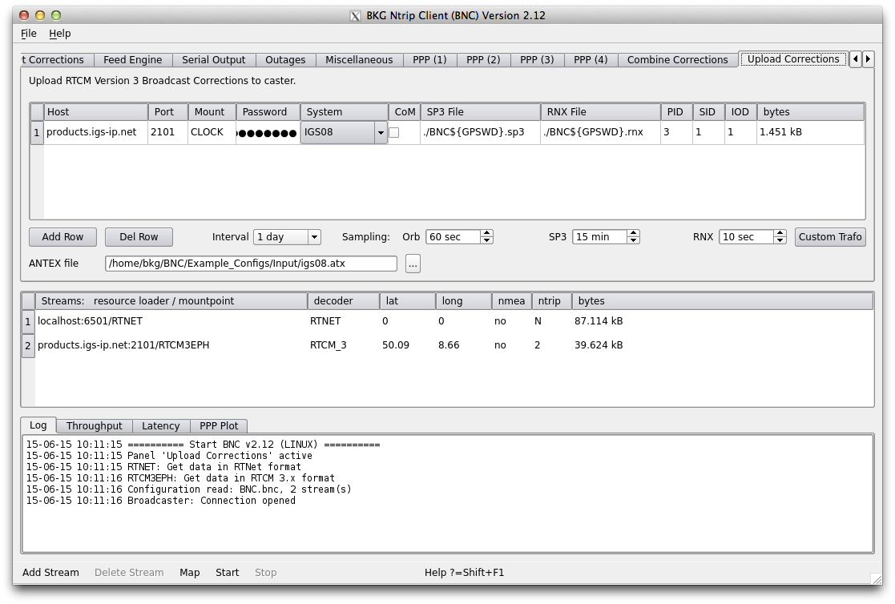
Figure 31: BNC producing Broadcast Corrections from incoming precise orbits and clocks and uploading them to an Ntrip Broadcaster
The following screenshot shows the encoding and uploading of several Broadcast Ephemeris correction streams combined from streams CLK11, CLK21, CLK80, and CLK91. Combined streams are uploaded to different Ntrip Broadcasters and referred to different reference systems. One of the uploaded streams is locally saved in SP3 and Clock RINEX format. Different SSR Provider IDs, SSR Solution IDs and Issue of Data IDs are specified. Required Broadcast Ephemeris are received via stream 'RTCM3EPH'.
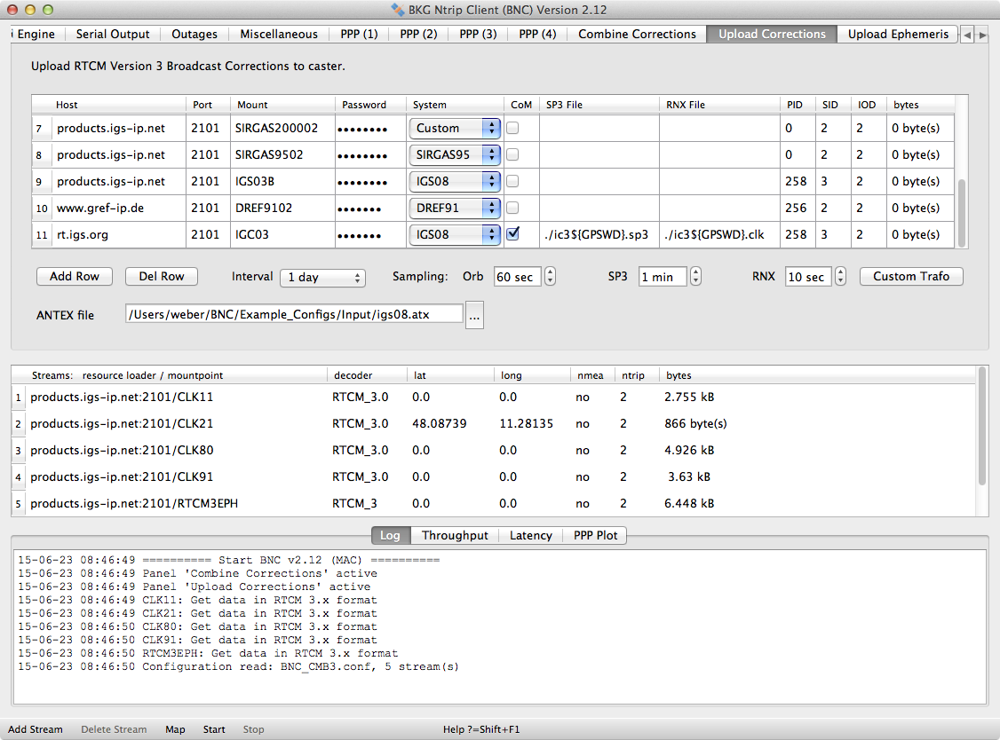
Figure 32: BNC uploading a combined Broadcast Correction stream
BNC can generate a stream carrying only Broadcast Ephemeris in RTCM Version 3 format and upload it to an Ntrip Broadcaster.
Note that Broadcast Ephemeris received in real-time have a system specific period of validity in BNC which is defined in accordance with the update rates of the navigation messages.
Furthermore, received Broadcast Ephemeris parameters pass through a plausibility check in BNC which allows to ignore incorrect ephemeris data when necessary, leaving a note 'WRONG EPHEMERIS' in the logfile.
Specify the 'Host' IP number or URL of an Ntrip Broadcaster to upload the stream. An empty option field means that you do not want to upload Broadcast Ephemeris.
Enter the Ntrip Broadcaster's IP 'Port' number for stream upload. Note that Ntrip Broadcasters are often configured to provide access through more than one port, usually ports 80 and 2101. If you experience communication problems on port 80, you should try to use the alternative port(s).
BNC uploads a stream to the Ntrip Broadcaster by referring it to a dedicated mountpoint that has been set by its operator. Specify the mountpoint based on the details you received for your stream from the operator. It is often a 4-character ID (capital letters) plus an integer number.
The stream upload follows Ntrip Version 1 and may be protected through an upload 'Password'. Enter the password you received from the Ntrip Broadcaster operator along with the mountpoint.
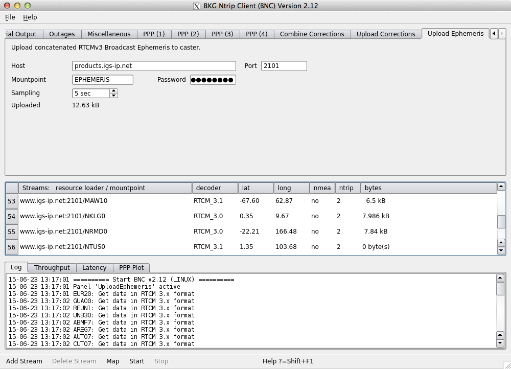
Figure 33: BNC producing a Broadcast Ephemeris stream from navigation messages of globally distributed RTCM streams and uploading them in RTCM Version 3 format to an Ntrip Broadcaster
Each stream on an Ntrip Broadcaster (and consequently on BNC) is defined using a unique source ID called mountpoint. An Ntrip Client like BNC accesses the desired stream by referring to its mountpoint. Information about streams and their mountpoints is available through the source-table maintained by the Ntrip Broadcaster.
Streams selected for retrieval are listed under the 'Streams' canvas on BNC's main window. The list provides the following information either extracted from source-table(s) produced by the Ntrip Broadcasters or introduced by BNC's user:
| 'resource loader' | Ntrip Broadcaster URL and port, or TCP/IP host and port, or UDP port, or Serial input port specification. |
| 'mountpoint' | Mountpoint introduced by Ntrip Broadcaster, or Mountpoint introduced by BNC's user. |
| 'decoder' | Name of decoder used to handle the incoming stream content according to its format; editable. |
| 'lat' | Approximate latitude of reference station, in degrees, north; editable if 'nmea' = 'yes'. |
| 'long' | Approximate longitude of reference station, in degrees, east; editable if 'nmea' = 'yes'. |
| 'nmea' | Indicates whether or not streaming needs to be initiated by BNC through sending NMEA-GGA message carrying position coordinates in 'lat' and 'long'. |
| 'ntrip' | Selected Ntrip transport protocol version (1, 2, 2s, R, or U), or 'N' for TCP/IP streams without Ntrip, or 'UN' for UDP streams without Ntrip, or 'S' for serial input streams without Ntrip. |
| 'bytes' | Number of bytes received. |
To remove a stream from the 'Streams' canvas in the main window, highlight it by clicking on it and hit the 'Delete Stream' button. You can also remove multiple streams simultaneously by highlighting them using +Shift or +Ctrl.
The streams selection can be changed on-the-fly without interrupting uninvolved threads in the running BNC process.
Window mode: Hit 'Reread & Save Configuration' while BNC is in window mode and already processing data to let changes of your stream selection immediately become effective.
No window mode: When operating BNC online in 'no window' mode (command line option -nw), you force BNC to reread its 'mountPoints' configuration option from disk at pre-defined intervals. Select '1 min', '1 hour', or '1 day' as 'Reread configuration' option to reread the 'mountPoints' option every full minute, hour, or day. This lets a 'mountPoints' option edited in between in the configuration file become effective without terminating uninvolved threads. See section 'Configuration Examples' for configuration file examples and section 'Reread Configuration' for a list of other on-the-fly changeable options.
The 'Logging Canvas' above the bottom menu bar on the main window labeled 'Log', 'Throughput', 'Latency', and 'PPP Plot' provides control of BNC's activities. Tabs are available for continuously showing logfile content, for a plot controlling the bandwidth consumption, a plot showing stream latencies, and for time series plots of PPP results.
Records of BNC's activities are shown in the 'Log' tab. They can be saved into a file when a valid path is specified in the 'Logfile (full path)' field.
The bandwidth consumption per stream is shown in the 'Throughput' tab in bits per second (bps) or kilobits per second (kbps). The following figure shows an example for the bandwidth consumption of incoming streams.
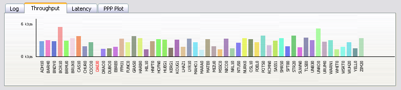
Figure 34: Bandwidth consumption of RTCM streams received by BNC
The latency of observations in each incoming stream is shown in the 'Latency' tab in milliseconds or seconds. Streams not carrying observations (e.g. those providing only Broadcast Ephemeris messages) or having an outage are not considered here and shown in red color. Note that the calculation of correct latencies requires the clock of the host computer to be properly synchronized. The next figure shows an example for the latency of incoming streams.
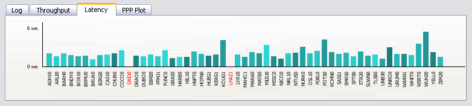
Figure 35: Latency of RTCM streams received by BNC
Precise Point Positioning time series of North (red), East (green) and Up (blue) coordinate components are shown in the 'PPP Plot' tab when a 'Mountpoint' option is defined under PPP (4). Values are referred to a priori reference coordinates. The time as given in format [hh:mm] refers to GPS Time. The sliding PPP time series window covers a period of 5 minutes. Note that it may take up to 30 seconds or more until the first PPP solutions becomes available. The following figure shows the screenshot of a PPP time series plot of North, East and Up coordinate displacements.
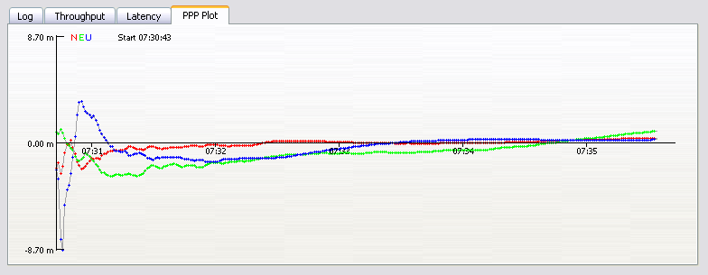
Figure 36: Example for time series plot of displacements produced by BNC
The bottom menu bar allows to add or delete streams to or from BNC's configuration and to start or stop it. It also provides access to BNC's online help function. The 'Add Stream' button opens a window that allows users to select one of several input communication links, see figure below.
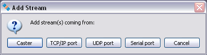
Figure 37: Steam input communication links accepted by BNC
Button 'Add Stream' allows you to pull streams either from an Ntrip Broadcaster or from a TCP/IP port, UPD port, or serial port.
Button 'Add Stream' > 'Coming from Caster' opens a window that allows users to select data streams from an Ntrip Broadcaster according to their mountpoints and show a distribution map of offered streams.
Enter the Ntrip Broadcaster host IP and port number. Note that EUREF and IGS operate Ntrip Broadcasters at http://www.euref-ip.net/home, http://www.igs-ip.net/home, http://products.igs-ip.net/home and http://mgex.igs-ip.net/home.
It may be that you are not sure about your Ntrip Broadcaster's host and port number or you are interested in other broadcaster installations operated elsewhere. Hit 'Show' for a table of known broadcasters maintained at www.rtcm-ntrip.org/home. A window opens which allows selecting a broadcaster for stream retrieval, see figure below.
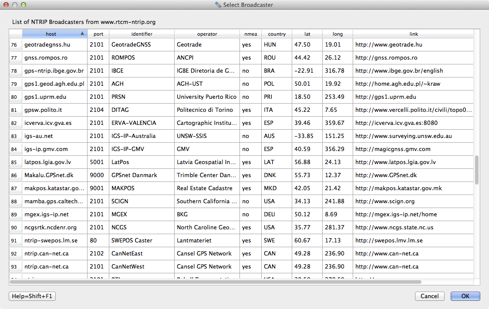
Figure 38: BNC's 'Select Broadcaster' table
Streams on Ntrip Broadcasters may be protected. Enter a valid 'User' ID and 'Password' for access to protected streams. Accounts are usually provided per Ntrip Broadcaster through a registration procedure. Register through http://register.rtcm-ntrip.org for access to protected streams from EUREF and IGS.
Use the 'Get Table' button to download the source-table from the Ntrip Broadcaster. Pay attention to data fields 'format' and 'format-details'. Keep in mind that BNC can only decode and convert streams that come in RTCM Version 2, RTCM Version 3, or RTNET format. For access to observations, Broadcast Ephemeris and Broadcast Corrections in RTCM format, streams must contain a selection of appropriate message types as listed in the Annex, cf. data field 'format-details' for available message types and their repetition rates in brackets. Note that in order to produce RINEX Navigation files, RTCM Version 3 streams containing message types 1019 (GPS) and 1020 (GLONASS) and 1043 (SBAS) and 1044 (QZSS) and 1045, 1046 (Galileo) and 63 (BDS/BeiDou, tentative message number) are required. Select your streams line by line, use +Shift and +Ctrl when necessary. The figure below provides an example source-table.
The content of data field 'nmea' tells you whether a stream retrieval needs to be initiated by BNC through sending an NMEA-GGA message carrying approximate position coordinates (Virtual Reference Station, VRS).
Hit 'OK' to return to the main window. If you wish, you can click on 'Add Stream' and repeat the process of retrieving streams from different casters.

Figure 39: Broadcaster source-table shown by BNC
Some limitations and deficiencies of the Ntrip Version 1 stream transport protocol are solved in Ntrip Version 2. Improvements mainly concern a full HTTP compatibility in view of requirements coming from proxy servers. Version 2 is backwards compatible to Version 1. Options implemented in BNC are:
| Option | Meaning |
| 1 | Ntrip Version 1, TCP/IP |
| 2 | Ntrip Version 2 in TCP/IP mode |
| 2s | Ntrip Version 2 in TCP/IP mode via SSL |
| R | Ntrip Version 2 in RTSP/RTP mode |
| U | Ntrip Version 2 in UDP mode |
If Ntrip Version 2 is supported by the broadcaster:
Select option '1' if you are not sure whether the broadcaster supports Ntrip Version 2.
Button 'Map' opens a window to show a distribution map of the caster's streams. You may like to zoom in or out using the mouse. Left button: draw a rectangle to zoom, right button: zoom out, middle button: zoom back.
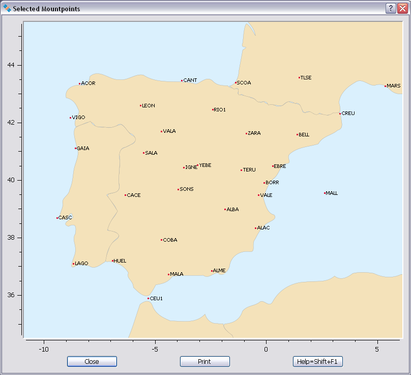
Figure 40: Stream distribution map shown by BNC as derived from Ntrip Broadcaster source-table
Button 'Add Stream' > 'Coming from TCP/IP Port' allows to retrieve streams via TCP directly from an IP address without using the Ntrip transport protocol. For that you:
Streams directly received from a TCP/IP port show up with an 'N' for 'No Ntrip' in the 'Streams' canvas on BNC's main window. Latitude and longitude are to be entered just for informal reasons.
Note that this option works only if no proxy server is involved in the communication link.
Button 'Add Stream' > 'Coming from UDP Port' allows to pick up streams arriving directly at one of the local host's UDP ports without using the Ntrip transport protocol. For that you:
Streams directly received at a UDP port show up with a 'UN' for 'UDP, No Ntrip' in the 'Streams' canvas section on BNC's main window. Latitude and longitude are to be entered just for informal reasons.
Button 'Add Stream' > 'Coming from Serial Port' allows to retrieve streams from a GNSS receiver via serial port without using the Ntrip transport protocol. For that you:
Windows: COM1, COM2 Linux: /dev/ttyS0, /dev/ttyS1 FreeBSD: /dev/ttyd0, /dev/ttyd1 Digital Unix: /dev/tty01, /dev/tty02 HP-UX: /dev/tty1p0, /dev/tty2p0 SGI/IRIX: /dev/ttyf1, /dev/ttyf2 SunOS/Solaris: /dev/ttya, /dev/ttyb
When selecting one of the serial communication options listed above, make sure that you pick those configured to the serially connected GNSS receiver.
Streams received from a serially connected GNSS receiver show up with an 'S' (for Serial Port, no Ntrip) in the 'Streams' canvas section on BNC's main window. Latitude and longitude are to be entered just for informal reasons.
The following figure shows a BNC example setup for pulling a stream via serial port on a Windows operating system.
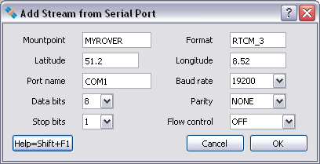
Figure 41: BNC configuration for pulling a stream via serial port
Button 'Delete Stream' allows you to delete streams previously selected for retrieval as listed under the 'Streams' canvas on BNC's main window.
Button 'Map' opens a window to show a distribution map of the streams selected for retrieval as listed under the 'Streams' canvas. You may like to zoom in or out using the mouse. Left button: draw a rectangle to zoom, right button: zoom out, middle button: zoom back.
Hit 'Start' to start retrieving, decoding or converting GNSS data streams in real-time. Note that 'Start' generally forces BNC to begin with fresh RINEX files which might overwrite existing files when necessary unless option 'Append files' is ticked.
Hit the 'Stop' button in order to stop BNC.
BNC comes with a What's This help system providing information about its functionality and usage. Short descriptions are available for any widget and program option. Focus to the relevant object and press Shift+F1 to request help information. A help text appears immediately; it disappears as soon as the user does something else. The dialogs on some operating systems may provide a '?' button that users can click; click the relevant widget to pop up the help text.
Command line options are available to run BNC in 'no window' mode or let it read previously recorded input offline from one or several files for debugging or post processing purposes. It is also possible to introduce a specific configuration filename instead of using the default filename 'BNC.bnc'. The self-explaining content of the configuration file can easily be edited.
In addition to reading processing options from the involved configuration file, BNC can optionally read any configuration option from command line. Running BNC with command line option 'help'
Example:
bnc --help (MS Windows: bnc.exe --help | more)
provides a list of all available command line options.
Command line option '--version' lets BNC print its version number.
Example:
bnc --version (MS Windows: bnc.exe --version | more)
On systems which support graphics, command line option '--display' forces BNC to present the BNC window on the specified display.
Example:
bnc.exe --display localhost:10.0
Apart from its regular windows mode, BNC can be started on all systems as a batch job with command line option '-nw'. BNC will then run in 'no window' mode, using processing options from its configuration file on disk. Terminate BNC using Windows Task Manager when running it in 'no window' mode on Windows systems.
Example:
bnc.exe --nw
It is obvious that BNC requires graphics support when started in interactive mode. However, note that graphics support is also required when producing plots in batch mode (option -nw). Windows and Mac OS X systems always support graphics. For producing plots in batch mode on Linux systems you must make sure that at least a virtual X-Server such as 'Xvfb' is installed and the '-display' option is used. The following is an example shell script to execute BNC in batch mode for producing QC plots from RINEX files. It could be used via 'crontab':
#!/bin/bash # Save string localhost echo "localhost" > /home/user/hosts # Start virtual X-Server, save process ID /usr/bin/Xvfb :29 -auth /home/user/hosts -screen 0 1280x1024x8 & psID=`echo $!` # Run BNC application with defined display variable /home/user/BNC/bnc --conf /dev/null --key reqcAction Analyze --key reqcObsFile ons12090.12o --key reqcNavFile brdc2090.12p --key reqcOutLogFile multi.txt --key reqcPlotDir /home/user --display localhost:29 --nw # BNC done, kill X-server process kill $psID
Although BNC is primarily a real-time online tool, for debugging purposes it can be run offline to read data from a file previously saved through option 'Raw output file' (Record & Replay functionality). Enter the following command line option for that
--file <inputFileName>
and specify the full path to an input file containing previously saved data. Example:Note that when running BNC offline, it will use options for file saving, interval, sampling, PPP etc. from its configuration file.
Note further that option '--file' forces BNC to apply the '-nw' option for running in 'no window' mode.
Example:
./bnc --conf MyConfig.bnc
This leads to a BNC job using configuration file 'MyConfig.bnc'. The configuration file will be saved in the current working directory.
BNC applies options from the configuration file but allows updating every one of them on the command line while the content of the configuration file remains unchanged. Note the following syntax for Command Line Interface (CLI) options:
--key <keyName> <keyValue>
Parameter <keyName> stands for the key name of an option contained in the configuration file and <keyValue> stands for the value you want to assign to it. The following is a syntax example for a complete command line:
bnc --nw --conf <confFileName> --key <keyName1> <keyValue1> --key <keyName2> <keyValue2> ...
Configuration options which are part of the configuration files PPP section must be prefixed by 'PPP/'. As an example, option 'minObs' from the PPP section of the BNC configuration file would be specified as 'PPP/minObs' on a command line.
Values for configuration options can be introduced via command line exactly as they show up in the configuration file. However, any value containing one or more blank characters must be enclosed by quotation marks when specified on command line.
| Dec 2006 | Version 1.0b | [Add] First Beta Binaries published based on Qt 4.2.3. |
| Jan 2007 | Version 1.1b | [Add] Observables C2, S1, and S2 [Add] Virtual reference station access [Bug] RTCM2 decoder time tag fixed [Mod] Small letters for public RINEX skeleton files [Add] Online help through Shift+F1 |
| Apr 2007 | Version 1.2b | [Bug] Output only through IP port [Bug] Method 'reconnecting' now thread-save [Add] ZERO decoder added [Mod] Download public RINEX skeletons once per day [Mod] Upgrade to Qt Version 4.2.3 [Mod] Replace 'system' call for RINEX script by 'QProcess' [Add] HTTP Host directive for skeleton file download [Add] Percent encoding for user IDs and passwords [Bug] Exit execution of calling thread for RTCM3 streams [Bug] Signal-slot mechanism for threads |
| May 2007 | Version 1.3 | [Add] Source code published. |
| Jul 2007 | Version 1.4 | [Bug] Skip messages from proxy server [Bug] Call RINEX script through 'nohup' |
| Apr 2008 | Version 1.5 | [Add] Handle ephemeris from RTCM Version 3 streams [Add] Upgrade to Qt Version 4.3.2 [Add] Optional RINEX v3 output [Add] SBAS support [Bug] RINEX skeleton download following stream outage [Add] Handle ephemeris from RTIGS streams [Add] Monitor stream failure/recovery and latency [Mod] Redesign of main window [Bug] Freezing of About window on Mac OS X [Bug] Fixed problem with PRN 32 in RTCM v2 decoder [Bug] Fix for Trimble 4000SSI receivers in RTCM v2 decoder [Mod] Major revision of input buffer in RTCM v2 decoder |
| Dec 2008 | Version 1.6 | [Mod] Fill blank columns in RINEX v3 with 0.000 [Add] RTCM v3 decoder for orbit and clock corrections [Add] Check RTCM v3 streams for incoming message types [Add] Decode RTCM v2 message types 3, 20, 21, and 22 [Add] Loss of lock and lock time indicator [Bug] Rounding error in RTCM v3 decoder concerning GLONASS height [Mod] Accept GLONASS in RTCM v3 when transmitted first [Add] Leap second 1 January 2009 [Add] Offline mode, read data from file [Add] Output antenna descriptor, coordinates and eccentricities from RTCM v3 [Add] Reconfiguration on-the-fly [Mod] Binary output of synchronized observations [Add] Binary output of unsynchronized observations [Bug] Fixed problem with joined RTCM v3 blocks |
| Dec 2008 | Version 1.6.1 | [Mod] HTTP GET when no proxy in front |
| Nov 2009 | Version 1.7 | [Bug] RINEX Navigation file format [Add] Upgrade to Qt Version 4.5.2 [Add] Support of Ntrip v2 [Add] Rover support via serial port [Add] Show broadcaster table from www.rtcm-ntrip.org [Add] Enable/disable panel widgets [Add] User defined configuration filename [Mod] Switch to configuration files in ini-Format [Add] Daily logfile rotation [Add] Read from TCP/IP port, by-pass Ntrip transport protocol [Add] Save NMEA sentences coming from rover [Add] Auto start [Add] Drag and drop ini files [Add] Read from serial port, by-pass Ntrip transport protocol [Mod] Update of SSR messages following RTCM 091-2009-SC104-542 [Add] Read from UPD port, by-pass Ntrip transport protocol [Mod] Output format of Broadcast Corrections [Add] Throughput plot [Add] Latency plot |
| Nov 2009 | Version 1.8 | [Mod] On-the-fly reconfiguration of latency and throughput plots |
| Feb 2010 | Version 2.0 | [Mod] Change sign of Broadcast Corrections [Add] Real-time PPP option |
| Jun 2010 | Version 2.1 | [Bug] SSR GLONASS message generation [Add] PPP in post processing mode [Mod] Update of SSR messages following draft dated 2010-04-12 [Mod] Generating error message when observation epoch is wrong |
| Jul 2010 | Version 2.2 | [Bug] GLONASS ephemeris time |
| Aug 2010 | Version 2.3 | [Mod] Internal format for saving raw streams [Bug] Outlier detection in GLONASS ambiguity resolution [Mod] Format of PPP logs in logfile [Bug] Complete acceleration terms for GLONASS ephemeris [Bug] Handling ephemeris IOD's in PPP mode |
| Dec 2010 | Version 2.4 | [Add] Output of averaged positions when in PPP mode [Mod] Use always the latest received set of Broadcast Ephemeris [Add] QuickStart PPP option [Mod] Improvement of data sharing efficiency among different threads [Mod] Design of PPP panel section [Add] Sigmas for observations and parameters [Add] Stream distribution map [Bug] GPS Ephemeris in RINEX v3 format |
| Feb 2011 | Version 2.5 | [Add] PPP option for sync of clock observations and corrections [Add] Drafted RTCM v3 Galileo ephemeris messages 1045 [Add] Drafted RTCM v3 Multiple Signal Messages [Add] Optional specification of sigmas for coordinates and troposphere in PPP [Add] Include Galileo in SPP [Add] Include Galileo observations in output via IP port [Add] Include Galileo observations in output via RINEX v3 files [Mod] Interface format for feeding a real-time engine with observations [Add] Correct observations for Antenna Phase Center offsets [Add] Combine orbit/clock correction streams [Add] Specify corrections mountpoint in PPP panel |
| Apr 2011 | Version 2.6 | [Add] Complete integration of BNS in BNC [Add] SP3 and Clock RINEX output [Add] PPP in post processing Mode [Add] Some RINEX editing & QC functionality [Add] Threshold for orbit outliers in combination solution [Add] Real-time engine becomes orbit/clock server instead of client [Mod] 'EOE' added to orbit/clock stream from engine [Add] Correction for antenna eccentricities [Add] Quick start mode for PPP [Mod] Design of format for feeding engine changed to follow RINEX v3 [Mod] Implementation of SSR message encoding modified according to standard [Add] SSL/TLS Support of Ntrip Version 2 [Mod] Switch to Qt version 4.7.3 [Add] RINEX editing, concatenation and quality check [Add] Reading all configuration options from command line [Mod] RTCM v3 Galileo Broadcast Ephemeris message 1045 [Mod] Change default configuration file suffix from 'ini' to 'bnc' [Add] Specific rates for orbits and clocks in streams and SP3/RNX files |
| May 2012 | Version 2.6 | [Add] Version 2.6 published |
| Sep 2012 | Version 2.7 | [Bug] Bug in L5 decoding fixed [Bug] Bug in on-the-fly configuration fixed [Add] Clock RINEX file header extended [Add] Decoding/converting BeiDou and QZSS added [Add] Work on RINEX v2 and v3 quality check started [Mod] Source code completely re-arranged [Add] QWT and QWTPOLAR graphics libraries added [Add] RINEX QC through multipath analysis sky plot [Add] RINEX QC through signal-to-noise ratio sky plot [Add] RINEX QC through satellite availability plot [Add] RINEX QC through satellite elevation plot [Add RINEX QC through PDOP plot [Bug] Short periodic outages in PPP time series when 'Sync Corr' set to zero |Add] Log observation types contained in RTCM Version 3 MSM streams [Add] Reading RINEX v3 observation type header records from RINEX skeleton files [Add] Logfile for RINEX file editing and concatenation [Add] Save PNG plot files on disk [Mod] Plot stream distribution map from Ntrip Broadcaster source-table [Add] Plot stream distribution map from selected sources [Add] Version 2.7 published |
| Mar 2013 | Version 2.8 | [Mod] Started work on new version in Sep 2012 [Bug] Epoch special event flag in RINEX concatenation [Bug] Limit RINEX v2 records length to 80 characters [Bug] SSR message update interval indicator [Bug] Fixed SSR stream encoding and upload [Add] Concatenate RINEX v3 navigation files containing Galileo ephemeris [Mod] Plausibility check of GLONASS ephemeris [Add] Correcting clocks for scale factor involved in transformation [Mod] Orbit/clock interpolation in SSR stream encoding and upload to caster [Add] Version 2.8 published |
| Jul 2013 | Version 2.9 | [Add] Started work on new version in Mar 2013 [Bug] SSR stream upload buffering disabled [Mod] Format for feeding a connected GNSS engine [Mod] RTNET format for receiving data from a connected GNSS engine [Add] Include Galileo in SPP [Add] RINEX QC multipath an SNR sky plots for GLONASS and Galileo [Add] Bias estimation for GLONASS clocks in PPP [Add] Trace positions on GM or OSM maps [Add] Version 2.9 published |
| Dec 2013 | Version 2.10 | [Add] Started work on new version in Aug 2013 [Bug] Clock RINEX und SP3 file generation on Windows systems [Bug] Broadcast Ephemeris generation [Add] Transformation ITRF2008 to NAD83 and DREF91 [Add] CodeBias added to RTNET stream format [Bug] GPS L2 in 'Feed Engine' output [Mod] Made C1 in BeiDou default observation type instead of C2 [Add] Feed engine output sorted per stream [Add] Feed engine output filename change on-the-fly [Add] 'Append files' option for RINEX observation files [Mod] Broadcast Correction ASCII file output for message 1058 & 1064 modified [Bug] GPS L2 phase data in RINEX2 [Bug] GLONASS frequency numbers [Add] RTCM v3 Galileo Broadcast Ephemeris message 1046 [Add] Reset ambiguities in PPP when orbit/clock correction IDs change [Add] Satellite clock offsets are reset in adjustment for combination when orbit/clock correction IDs change [Add] Version 2.10 published |
| Sep 2014 | Version 2.11 | [Add] Started work on new version in Dec 2013 [Mod] SIRGAS transformation parameters adjusted [Mod] ANTEX file updated [Mod] RTCM SSR messages updated [Bug] GLONASS code biases [Mod] Maximum number of GNSS observations increased [Mod] Loss of lock handling changed [Add] Raw stream output through TCP/IP port [Add] Version 2.11.0 published |
| Mar 2016 | Version 2.12 |
[Add] Started work on new version in Sep 2014 [Mod] RINEX file concatenation [Add] Observation code selection in RINEX file editing [Mod] Routine handling of data input and output in RINEX format re-written [Mod] QC routines re-written with the goal of handling all signal types [Add] Machine-readable output of RINEX QC [Add] PPP client functionality for parallel processing of an arbitrary number of stations in separate threads [Bug] Receiver antenna PCO in ionosphere-free PPP mode [Add] NMEA output for any station processed in PPP mode [Add] PPP processing of any number of linear combinations of GNSS measurements selected by user [Add] Encoding/Decoding RTCM SSR I messages for Galileo, BDS, SBAS and QZSS [Add] Encoding/Decoding RTCM SSR phase bias messages [Add] Encoding/Decoding RTCM SSR ionospheric model messages, single-layer model for total electron content [Add] RTCM SSR I messages for Galileo, BDS, SBAS and QZSS support from RTNET interface [Add] RTCM SSR II messages (phase biases and SSR ionospheric model) support from RTNET interface [Add] Computataion of VTEC and STEC from SSR ionospheric model messages for usage in PPP mode [Add] Handle old-fashioned SNR values in RINEX [Mod] SNR and MP visualization depending on RINEX observation attribute [Bug] Saastamoinen tropospheric correction for very high elevation receivers [Add] Comparison of SP3 files [Add] Encoding/Decoding of RTCM v3 proposal for Galileo Broadcast Ephemeris message 1046 [Add] Encoding/Decoding of RTCM v3 QZSS Broadcast Ephemeris message 1044 [Add] Encoding/Decoding of RTCM v3 SBAS Broadcast Ephemeris message 1043 [Add] Encoding/Decoding of RTCM v3 BDS Broadcast Ephemeris message 63 [Add] RINEX v3 support of Galileo, BDS, SBAS and QZSS Broadcast Ephemerides [Add] Consideration of the aspect that Galileo NAV message can be providet for the same epoch but with different flags (I/NAV, F/NAV, DVS) [Bug] VRS support in sending NMEA in Auto/Manual mode to Ntrip Broadcaster [Add] Forwarding NMEA GNGGA to Ntrip Broadcaster [Bug] Stream failure/recovery reports [Add] Compute IODs for BDS and SBAS from CRC over broadcast ephemeris and clock parameters [Mod] PPP default options [Add] Example configuration for SP3 file comparison [Add] Choose between code and phase observations when in PPP SSR I mode [Bug] Reset time series plot when restarting PPP in post processing mode [Add] Broadcast ephemeris check regarding allowed age of data sets [Add] Code bias usage for PPP SSR I mode [Add] Code bias, phase bias and VTEC usage in extended PPP mode [Mod] Consideration of the full antenna PCO vector in all PPP modes [Add] Allow GPS-only and GLONASS-only RINEX v2 Navigation files [Mod] SSR clock correction converted to seconds to be consistent with broadcast values [Add] Support Galileo I/NAV broadcast ephemeris [Add] Extended RINEX v3 filenames [Add] Stream's country added to configuration string 'mountPoints' [Add] destinction of GEO/MEO satellites during BDS velocity derermination [Bug] Velocity determination for geostationary BDS satellites [Add] Set TOE from BDS week and second [Add] Use BDS observations and ephemerides in PPP SSR I mode [Add] Considering that yaw angle restricted to -180 to +180 deg [Mod] Read local RINEX skeleton files [Add] Update interval for VTEC in RTNET stream format [Bug] SBAS IODN [Bug] Galileo week number [Add] Phase shift records in RINEX v3 headers [Add] Output GLONASS slot numbers from scanning stream content [Add] Decoder interface for PPP SSR I+II messages for Galileo/QZSS/SBAS/BDS [Mod] Renaming BDS first frequency from '1' to '2' [Add] RINEX QC, receiver/antenna information editable [Add] Support of new RINEX header lines regarding phase shifts, GLONAQSS slots and GLONASS biases during file merging [Add] Switch to port 443 for skeleton file download from https website [Mod] Default observation types for RINEX v3 files [Bug] RTCM v2 decoder [Add] SINEX Troposphere file output [Add] Comments with respect to RINEX v3 to RINEX v2 observation file conversion [Add] String for Operating System in logfile output [Add] Full integration of 'rtcm3torinex' [Add] Extended command line help [Add] Version 2.12.0 published |
The Radio Technical Commission for Maritime Services (RTCM) is an international non-profit scientific, professional and educational organization. Special Committees provide a forum in which governmental and non-governmental members work together to develop technical standards and consensus recommendations in regard to issues of particular concern. RTCM is engaged in the development of international standards for maritime radionavigation and radiocommunication systems. The output documents and reports prepared by RTCM Committees are published as RTCM Recommended Standards. Topics concerning Differential Global Navigation Satellite Systems (DGNSS) are handled by the Special Committee SC 104.
Personal copies of RTCM Recommended Standards can be ordered through http://www.rtcm.org/orderinfo.php.
'Networked Transport of RTCM via Internet Protocol' Version 1.0 (Ntrip) stands for an application-level protocol streaming Global Navigation Satellite System (GNSS) data over the Internet. Ntrip is a generic, stateless protocol based on the Hypertext Transfer Protocol HTTP/1.1. The HTTP objects are enhanced to GNSS data streams.
Ntrip Version 1 is an RTCM standard designed for disseminating differential correction data (e.g. in the RTCM-104 format) or other kinds of GNSS streaming data to stationary or mobile users over the Internet, allowing simultaneous PC, Laptop, PDA, or receiver connections to a broadcasting host. Ntrip supports wireless Internet access through Mobile IP Networks like GSM, GPRS, EDGE, or UMTS.
Ntrip is implemented in three system software components: Ntrip Clients, Ntrip Servers and Ntrip Broadcasters. The Ntrip Broadcaster is the actual HTTP server program whereas Ntrip Client and Ntrip Server are acting as HTTP clients.
Ntrip is an open none-proprietary protocol. Major characteristics of Ntrip's dissemination technique are:
The Ntrip Broadcaster maintains a source-table containing information on available Ntrip streams, networks of Ntrip streams and Ntrip Broadcasters. The source-table is sent to an Ntrip Client on request. Source-table records are dedicated to one of the following: Data Streams (record type STR), Casters (record type CAS), or Networks of streams (record type NET).
Source-table records of type STR contain the following data fields: 'mountpoint', 'identifier', 'format', 'format-details', 'carrier', 'nav-system', 'network', 'country', 'latitude', 'longitude', 'nmea', 'solution', 'generator', 'compr-encryp', 'authentication', 'fee', 'bitrate', 'misc'.
Source-table records of type NET contain the following data fields: 'identifier', 'operator', 'authentication', 'fee', 'web-net', 'web-str', 'web-reg', 'misc'.
Source-table records of type CAS contain the following data fields: 'host', 'port', 'identifier', 'operator', 'nmea', 'country', 'latitude', 'longitude', 'misc'.
The major changes of Ntrip Version 2 compared to Version 1.0 are:
Ntrip Version 2 allows to communicate either in TCP/IP mode or in RTSP/RTP mode or in UDP mode whereas Version 1 is limited to TCP/IP only. It furthermore allows using the Transport Layer Security (TLS) and its predecessor, Secure Sockets Layer (SSL) cryptographic protocols for secure Ntrip communication over the Internet.
Transmitting GNSS carrier phase data can be done through RTCM Version 2 messages. Please note that only RTCM Version 2.2 and 2.3 streams may include GLONASS data. Messages that may be of interest here are:
RTCM Version 3 has been developed as a more efficient alternative to RTCM Version 2. Service providers and vendors have asked for a standard that would be more efficient, easy to use, and more easily adaptable to new situations. The main complaint was that the Version 2 parity scheme was wasteful of bandwidth. Another complaint was that the parity is not independent from word to word. Still another was that even with so many bits devoted to parity, the actual integrity of the message was not as high as it should be. Plus, 30-bit words are awkward to handle. The Version 3 standard is intended to correct these weaknesses.
RTCM Version 3 defines a number of message types. Messages that may be of interest here are:
The following are so-called 'State Space Representation' (SSR) messages:
The following are so-called 'Multiple Signal Messages' (MSM):
The following are proposed 'Multiple Signal Messages' (MSM) under discussion for standardization:
Command line option '--help' provides a complete list of all configuration parameters which can be specified via BNC's Command Line Interface (CLI). Note that command line options overrule configuration options specified in the configuration file. The following is the output produced when running BNC with command line option '--help':
Usage:
bnc --help (MS Windows: bnc.exe --help | more)
--nw
--version (MS Windows: bnc.exe --version | more)
--display {name}
--conf {confFileName}
--file {rawFileName}
--key {keyName} {keyValue}
Network Panel keys:
proxyHost {Proxy host, name or IP address [character string]}
proxyPort {Proxy port [integer number]}
sslCaCertPath {Full path to SSL certificates [character string]}
sslIgnoreErrors {Ignore SSL authorization errors [integer number: 0=no,2=yes]}
General Panel keys:
logFile {Logfile, full path [character string]}
rnxAppend {Append files [integer number: 0=no,2=yes]}
onTheFlyInterval {Configuration reload interval [character string: 1 day|1 hour|5 min|1 min]}
autoStart {Auto start [integer number: 0=no,2=yes]}
rawOutFile {Raw output file, full path [character string]}
RINEX Observations Panel keys:
rnxPath {Directory [character string]}
rnxIntr {File interval [character string: 1 min|2 min|5 min|10 min|15 min|30 min|1 hour|1 day]}
rnxSampl {File sampling rate [integer number of seconds: 0,5|10|15|20|25|30|35|40|45|50|55|60]}
rnxSkel {RINEX skeleton file extension [character string]}
rnxOnlyWithSKL {Using RINEX skeleton file is mandatory [integer number: 0=no,2=yes]}
rnxScript {File upload script, full path [character string]}
rnxV2Priority {Priority of signal attributes [character string, list separated by blank character, example: G:CWPX_? R:CP]}
rnxV3 {Produce version 3 file content [integer number: 0=no,2=yes]}
rnxV3filenames {Produce version 3 filenames [integer number: 0=no,2=yes]}
RINEX Ephemeris Panel keys:
ephPath {Directory [character string]}
ephIntr {File interval [character string: 1 min|2 min|5 min|10 min|15 min|30 min|1 hour|1 day]}
ephOutPort {Output port [integer number]}
ephV3 {Produce version 3 file content [integer number: 0=no,2=yes]}
ephV3filenames {Produce version 3 filenames [integer number: 0=no,2=yes]}
RINEX Editing and QC Panel keys:
reqcAction {Action specification [character string: Blank|Edit/Concatenate|Analyze]}
reqcObsFile {Input observations file(s), full path [character string, comma separated list in quotation marks]}
reqcNavFile {Input navigation file(s), full path [character string, comma separated list in quotation marks]}
reqcOutObsFile {Output observations file, full path [character string]}
reqcOutNavFile {Output navigation file, full path [character string]}
reqcOutLogFile {Output logfile, full path [character string]}
reqcLogSummaryOnly {Output only summary of logfile [integer number: 0=no,2=yes]}
reqcSkyPlotSignals {Observation signals [character string, list separated by blank character, example: C:2&7 E:1&5 G:1&2 J:1&2 R:1&2 S:1&5]}
reqcPlotDir {QC plots directory [character string]}
reqcRnxVersion {RINEX version [integer number: 2|3]}
reqcSampling {RINEX output file sampling rate [integer number of seconds: 0|5|10|15|20|25|30|35|40|45|50|55|60]}
reqcV2Priority {Version 2 priority of signal attributes [character string, list separated by blank character, example: G:CWPX_? R:CP]}
reqcStartDateTime {Start time [character string, example: 1967-11-02T00:00:00]}
reqcEndDateTime {Stop time [character string, example: 2099-01-01T00:00:00 }
reqcRunBy {Operators name [character string]}
reqcUseObsTypes {Use observation types [character string, list separated by blank character, example: G:C1C G:L1C R:C1C RC1P]}
reqcComment {Additional comments [character string]}
reqcOldMarkerName {Old marker name [character string]}
reqcNewMarkerName {New marker name [character string]}
reqcOldAntennaName {Old antenna name [character string]}
reqcNewAntennaName {New antenna name [character string]}
reqcOldAntennaNumber {Old antenna number [character string]}
reqcNewAntennaNumber {New antenna number [character string]}
reqcOldAntennadN {Old north eccentricity [character string]}
reqcNewAntennadN {New north eccentricity [character string]}
reqcOldAntennadE {Old east eccentricity [character string]}
reqcNewAntennadE {New east eccentricity [character string]}
reqcOldAntennadU {Old up eccentricity [character string]}
reqcNewAntennadU {New up eccentricity [character string]}
reqcOldReceiverName {Old receiver name [character string]}
reqcNewReceiverName {New receiver name [character string]}
reqcOldReceiverNumber {Old receiver number [character string]}
reqcNewReceiverNumber {New receiver number [character string]}
SP3 Comparison Panel keys:
sp3CompFile {SP3 input files, full path [character string, comma separated list in quotation marks]}
sp3CompExclude {Satellite exclusion list [character string, comma separated list in quotation marks, example: G04,G31,R]}
sp3CompOutLogFile {Output logfile, full path [character string]}
Broadcast Corrections Panel keys:
corrPath {Directory for saving files in ASCII format [character string]}
corrIntr {File interval [character string: 1 min|2 min|5 min|10 min|15 min|30 min|1 hour|1 day]}
corrPort {Output port [integer number]}
Feed Engine Panel keys:
outPort {Output port, synchronized [integer number]}
outWait {Wait for full observation epoch [integer number of seconds: 1-30]}
outSampl {Sampling rate [integer number of seconds: 0|5|10|15|20|25|30|35|40|45|50|55|60]}
outFile {Output file, full path [character string]}
outUPort {Output port, unsynchronized [integer number]}
Serial Output Panel keys:
serialMountPoint {Mountpoint [character string]}
serialPortName {Port name [character string]}
serialBaudRate {Baud rate [integer number: 110|300|600|1200|2400|4800|9600|19200|38400|57600|115200]}
serialFlowControl {Flow control [character string: OFF|XONXOFF|HARDWARE}
serialDataBits {Data bits [integer number: 5|6|7|8]}
serialParity {Parity [character string: NONE|ODD|EVEN|SPACE]}
serialStopBits {Stop bits [integer number: 1|2]}
serialAutoNMEA {NMEA specification [character string: no|Auto|Manual GPGGA|Manual GNGGA]}
serialFileNMEA {NMEA filename, full path [character string]}
serialHeightNMEA {Height [floating-point number]}
serialHeightNMEASampling {Sampling rate [integer number of seconds: 0|10|20|30|...|280|290|300]}
Outages Panel keys:
adviseObsRate {Stream observation rate [character string: 0.1 Hz|0.2 Hz|0.5 Hz|1 Hz|5 Hz]}
adviseFail {Failure threshold [integer number of minutes: 0-60]}
adviseReco {Recovery threshold [integer number of minutes: 0-60]}
adviseScript {Advisory script, full path [character string]}
Miscellaneous Panel keys:
miscMount {Mountpoint [character string]}
miscIntr {Interval for logging latency [character string: Blank|2 sec|10 sec|1 min|5 min|15 min|1 hour|6 hours|1 day]}
miscScanRTCM {Scan for RTCM message numbers [integer number: 0=no,2=yes]}
miscPort {Output port [integer number]}
PPP Client Panel 1 keys:
PPP/dataSource {Data source [character string: Blank|Real-Time Streams|RINEX Files]}
PPP/rinexObs {RINEX observation file, full path [character string]}
PPP/rinexNav {RINEX navigation file, full path [character string]}
PPP/corrMount {Corrections mountpoint [character string]}
PPP/corrFile {Corrections file, full path [character string]}
PPP/antexFile {ANTEX file, full path [character string]}
PPP/crdFile {Coordinates file, full path [character string]}
PPP/v3filenames {Produce version 3 filenames, [integer number: 0=no,2=yes]}
PPP/logPath {Directory for PPP log files [character string]}
PPP/nmeaPath {Directory for NMEA output files [character string]}
PPP/snxtroPath {Directory for SINEX troposphere output files [character string]}
PPP/snxtroIntr {SINEX troposphere file interval [character string: 1 min|2 min|5 min|10 min|15 min|30 min|1 hour|1 day]}
PPP/snxtroSampl {SINEX troposphere file sampling rate [integer number of seconds: 0|30|60|90|120|150|180|210|240|270|300]}
PPP/snxtroAc {SINEX troposphere Analysis Center [character string]}
PPP/snxtroSol {SINEX troposphere solution ID [character string]}
PPP Client Panel 2 keys:
PPP/staTable {Station specifications table [character string, semicolon separated list, each element in quotation marks, example:
"FFMJ1,100.0,100.0,100.0,100.0,100.0,100.0,0.1,3e-6,7777;CUT07,100.0,100.0,100.0,100.0,100.0,100.0,0.1,3e-6,7778"]}
PPP Client Panel 3 keys:
PPP/lcGPS {Select linear combination from GPS code or phase data [character string; P3|P3&L3]}
PPP/lcGLONASS {Select linear combination from GLONASS code or phase data [character string: no|P3|L3|P3&L3]}
PPP/lcGalileo {Select linear combination from Galileo code or phase data [character string: no|P3|L3|P3&L3]}
PPP/lcBDS {Select linear combination from BDS code or phase data [character string: no|P3|L3|P3&L3]}
PPP/sigmaC1 {Sigma for code observations in meters [floating-point number]}
PPP/sigmaL1 {Sigma for phase observations in meters [floating-point number]}
PPP/maxResC1 {Maximal residuum for code observations in meters [floating-point number]}
PPP/maxResL1 {Maximal residuum for phase observations in meters [floating-point number]}
PPP/eleWgtCode {Elevation dependent waiting of code observations [integer number: 0=no,2=yes]}
PPP/eleWgtPhase {Elevation dependent waiting of phase observations [integer number: 0=no,2=yes]}
PPP/minObs {Minimum number of observations [integer number: 4|5|6]}
PPP/minEle {Minimum satellite elevation in degrees [integer number: 0-20]}
PPP/corrWaitTime {Wait for clock corrections [integer number of seconds: no|1-20]}
PPP/seedingTime {Seeding time span for Quick Start [integer number of seconds]}
PPP Client Panel 4 keys:
PPP/plotCoordinates {Mountpoint for time series plot [character string]}
PPP/audioResponse {Audio response threshold in meters [floating-point number]}
PPP/useOpenStreetMap {OSM track map [character string: true|false]}
PPP/useGoogleMap {Google track map [character string: true|false]}
PPP/mapWinDotSize {Size of dots on map [integer number: 0-10]}
PPP/mapWinDotColor {Color of dots and cross hair on map [character string: red|yellow]}
PPP/mapSpeedSlider {Offline processing speed for mapping [integer number: 1-100]}
Combine Corrections Panel keys:
cmbStreams {Correction streams table [character string, semicolon separated list, each element in quotation marks, example:
"IGS01 ESA 1.0;IGS03 BKG 1.0"]}
cmbMethodFilter {Combination approach [character string: Single-Epoch|Filter]
cmbMaxres {Clock outlier residuum threshold in meters [floating-point number]
cmbSampl {Clock sampling rate [integer number of seconds: 10|20|30|40|50|60]}
cmbUseGlonass {Use GLONASS in combination [integer number: 0=no,2=yes]
Upload Corrections Panel keys:
uploadMountpointsOut {Upload corrections table [character string, semicolon separated list, each element in quotation marks, example:
"www.igs-ip.net,2101,IGS01,pass,IGS08,0,/home/user/BNC$[GPSWD}.sp3,/home/user/BNC$[GPSWD}.clk,258,1,0;
www.euref-ip.net,2101,EUREF01,pass,ETRF2000,0,,,258,2,0"]}
uploadIntr {Length of SP3 and Clock RINEX file interval [character string: 1 min|2 min|5 min|10 min|15 min|30 min|1 hour|1 day]}
uploadSamplRtcmEphCorr {Orbit corrections stream sampling rate [integer number of seconds: 0|5|10|15|20|25|30|35|40|45|50|55|60]}
uploadSamplSp3 {SP3 file sampling rate [integer number of minutes: 0-15]}
uploadSamplClkRnx {Clock RINEX file sampling rate [integer number of seconds: 0|5|10|15|20|25|30|35|40|45|50|55|60]}
Custom Trafo keys:
trafo_dx {Translation X in meters [floating-point number]
trafo_dy {Translation Y in meters [floating-point number]
trafo_dz {Translation Z in meters [floating-point number]
trafo_dxr {Translation change X in meters per year [floating-point number]
trafo_dyr {Translation change Y in meters per year [floating-point number]
trafo_dzr {Translation change Z in meters per year [floating-point number]
trafo_ox {Rotation X in arcsec [floating-point number]}
trafo_oy {Rotation Y in arcsec [floating-point number]}
trafo_oz {Rotation Z in arcsec [floating-point number]}
trafo_oxr {Rotation change X in arcsec per year [floating-point number]}
trafo_oyr {Rotation change Y in arcsec per year [floating-point number]}
trafo_ozr {Rotation change Z in arcsec per year [floating-point number]}
trafo_sc {Scale [10^-9, floating-point number]}
trafo_scr {Scale change [10^-9 per year, floating-point number]}
trafo_t0 {Reference year [integer number]}
Upload Ephemeris Panel keys:
uploadEphHost {Broadcaster host, name or IP address [character string]}
uploadEphPort {Broadcaster port [integer number]}
uploadEphMountpoint {Mountpoint [character string]}
uploadEphPassword {Stream upload password [character string]}
uploadEphSample {Stream upload sampling rate [integer number of seconds: 5|10|15|20|25|30|35|40|45|50|55|60]}
Add Stream keys:
mountPoints {Mountpoints [character string, semicolon separated list, example:
"//user:pass@www.igs-ip.net:2101/FFMJ1 RTCM_3.1 DEU 50.09 8.66 no 2;
//user:pass@www.igs-ip.net:2101/FFMJ2 RTCM_3.1 DEU 50.09 8.66 no 2"}
ntripVersion {Ntrip Version [character string: 1|2|2s|R|U]}
casterUrlList {Visited Broadcasters [character string, comma separated list]}
Appearance keys:
startTab {Index of top panel to be presented at start time [integer number: 0-17]}
statusTab {Index of bottom panel to be presented at start time [integer number: 0-3]}
font {Font specification [character string in quotation marks, example: "Helvetica,14,-1,5,50,0,0,0,0,0"]}
Note:
The syntax of some command line configuration options slightly differs from that
used in configuration files: Configuration file options which contain one or more
blank characters or contain a semicolon separated parameter list must be enclosed
by quotation marks when specified on command line.
Example command lines:
(1) /home/weber/bin/bnc
(2) /Applications/bnc.app/Contents/MacOS/bnc
(3) /home/weber/bin/bnc --conf /home/weber/MyConfigFile.bnc
(4) bnc --conf /Users/weber/.config/BKG/BNC.bnc -nw
(5) bnc --conf /dev/null --key startTab 4 --key reqcAction Edit/Concatenate --key reqcObsFile AGAR.15O --key reqcOutObsFile AGAR_X.15O
--key reqcRnxVersion 2 --key reqcSampling 30 --key reqcV2Priority CWPX_?
(6) bnc --key mountPoints "//user:pass@mgex.igs-ip.net:2101/CUT07 RTCM_3.0 ETH 9.03 38.74 no 2;
//user:pass@www.igs-ip.net:2101/FFMJ1 RTCM_3.1 DEU 50.09 8.66 no 2"
(7) bnc --key cmbStreams "CLK11 BLG 1.0;CLK93 CNES 1.0"
(8) bnc --key uploadMountpointsOut "products.igs-ip.net,98756,TEST,letmein,IGS08,2,/Users/weber/BNC${GPSWD}.clk,,33,3,2;
www.euref-ip.net,333,TEST2,aaaaa,NAD83,2,,,33,5,5"
(9) bnc --key PPP/staTable "FFMJ1,100.0,100.0,100.0,100.0,100.0,100.0,0.1,3e-6,7777;
CUT07,100.0,100.0,100.0,100.0,100.0,100.0,0.1,3e-6,7778"
| Links | |
| Ntrip | http://igs.bkg.bund.de/ntrip/index |
| EUREF-IP Ntrip Broadcaster | http://www.euref-ip.net/home |
| IGS-IP Ntrip Broadcaster | http://www.igs-ip.net/home |
| IGS products Ntrip Broadcaster | http://products.igs-ip.net/home |
| IGS M-GEX Ntrip Broadcaster | http://mgex.igs-ip.net/home |
| IGS Central Bureau Ntrip Broadcaster | http://rt.igs.org |
| IGS Real-time Service | http://rts.igs.org |
| Distribution of IGS-IP streams | http://www.igs.oma.be/real_time/ |
| Completeness and latency of IGS-IP data | http://www.igs.oma.be/highrate/ |
| Ntrip Broadcaster overview | http://www.rtcm-ntrip.org/home |
| Ntrip Open Source software code | http://software.rtcm-ntrip.org |
| EUREF-IP Project | http://www.epncb.oma.be/euref_IP |
| Real-time IGS Pilot Project | http://www.rtigs.net/pilot |
| Radio Technical Commission for Maritime Services | http://www.rtcm.org |
| Publications | |
| Caissy, M., L. Agrotis, G. Weber, M. Hernandez-Pajares and U. Hugentobler (2012) | The International GNSS Real-Time Service. GPS World, June 1, 2012. |
| Estey, L. H. and C. M. Meertens (1999) | TEQC: The Multi-Purpose Toolkit for GPS/GLONASS Data. GPS Solutions, Vol. 3, No. 1, pp. 42-49, 1999. |
| Huisman, L., P. Teunissen and C. Hu (2012) | GNSS Precise Point Positioning in Regional Reference Frames Using Real-time Broadcast Corrections. Journal of Applied Geodesy, Vol. 6, pp15-23, 2012. |
| Mervart, L., Z. Lukes, C. Rocken and T. Iwabuchi (2008) | Precise Point Positioning With Ambiguity Resolution in Real-Time. ION GNSS 2008. |
| RTCM SC-104 (2011) | Amendment 1 to RTCM Standard 10410.1 Networked Transport of RTCM via Internet Protocol (Ntrip) - Version 2.0. RTCM Papter 139-2011-SC104-STD, 2011. |
| Rupprecht, W. (2000) | DGPS-IP. http://www.wsrcc.com/wolfgang/gps/dgps-ip.html, 2000. |
| Weber, G., D. Dettmering and H. Gebhard (2005a) | Networked Transport of RTCM via Internet Protocol (NTRIP). In: Sanso F. (Ed.): A Window on the Future, Proceedings of the IAG General Assembly, Sapporo, Japan, 2003, Springer Verlag, Symposia Series, Vol. 128, p. 60-64, 2005. |
| Weber, G., D. Dettmering, H. Gebhard and R. Kalafus (2005b) | Networked Transport of RTCM via Internet Protocol (Ntrip), IP-Streaming for Real-Time GNSS Applications. ION GNSS 2005. |
| Weber, G., and M. Honkala (2004) | The future is talking Ntrip. Newsletter, Trimble GmbH Raunheim, Germany, 2004. |
| Weber, G. and L. Mervart (2009) | The BKG Ntrip Client (BNC), Report on EUREF Symposium 2007 in London. Mitteilungen des Bundesamtes fuer Kartographie und Geodaesie, Band 42, Frankfurt, 2009. |
| Weber, G. and L. Mervart (2010) | Real-time Combination of GNSS Orbit and Clock Correction Streams Using a Kalman Filter Approach. ION GNSS 2010. |
| Weber, G, L. Mervart, Z. Lukes, C. Rocken and J. Dousa (2007) | Real-time Clock and Orbit Corrections for Improved Point Positioning via Ntrip. ION GNSS 2007. |
| Weber, G., L. Mervart, A. Stürze, A. Rülke and D. Stöcker (2016) | BKG Ntrip Client, Version 2.12. Mitteilungen des Bundesamtes für Kartographie und Geodäsie, Vol. 49, Frankfurt am Main, 2016. |
| AC | Analysis Center |
| AFREF | IAG Reference Frame Sub-Commission for Africa |
| ANTEX | Antenna Exchange Format |
| APC | Antenna Phase Center |
| APREF | IAG Reference Frame Sub-Commission for Asia and Pacific |
| ARP | Antenna Reference Point |
| BKG | Bundesamt für Kartographie und Geodäsie |
| BNC | BNK Ntrip Client |
| BSW | Bernese GNSS Software |
| CC | Combination Center |
| CLI | Command Line Interface |
| CoM | Center Of Mass |
| DGNSS | Differential GNSS |
| DGPS-IP | Differential GPS via Internet Protocol |
| DMG | Disk Image, File |
| DREF91 | Geodetic Datum for Germany 1991 |
| ECEF | Earth-Centred-Earth-Fixed |
| EDGE | Enhanced Data Rates for GSM Evolution |
| ETRF2000 | European Terrestrial Reference Frame 2000 |
| EUREF | IAG Reference Frame Sub-Commission for Europe |
| EoE | End of Epoch |
| FKP | Flächen-Korrektur-Parameter |
| FTP | File Transfer Protocol |
| GDA94 | Geodetic Datum Australia 1994 |
| GM | Google Maps |
| GNSS | Global Navigation Satellite System |
| GNU | GNU's Not Unix |
| GPL | General Public License |
| GPRS | General Packet Radio Service |
| GPSWD | GPS Week and Day |
| GSM | Global System for Mobile Communications |
| GUI | Graphical User Interface |
| HP MSM | High Precision Multiple Signal Messages |
| HR URA | High Rate User Range Accuracy |
| HTTP | Hypertext Transfer Protocol |
| HTTPS | Hypertext Transfer Protocol Secure |
| IAG | International Association of Geodesy |
| ICECAST | Streaming Media Server |
| IGS08 | IGS Reference Frame 2008 |
| IGS | International GNSS Service |
| IOD | Issue of Data |
| IP | Internet Protocol |
| ITRF2008 | International Terrestrial Reference Frame 2008 |
| L3 | Ionosphere-Free Linear Combination Of Phase Observations |
| LAN | Local Area Network |
| LC | Linea Combination |
| M-GEX | Multi GNSS-Experiment |
| MAC | Master Auxiliary Concept |
| MJD | Modified Julian Date |
| MSI | Microsoft Installer, File |
| MSM | Multiple Signal Messages |
| MW | Melbourne Wübbena Linear Combination |
| NAD83 | North American Datum 1983 |
| NAREF | IAG Reference Frame Sub-Commission for North America |
| NMEA | National Marine Electronics Association Format |
| Ntrip | Networked Transport of RTCM via Internet Protocol |
| OSM | OpenStreetMap |
| OSR | Observation Space Representation |
| P3 | Ionosphere-Free Linear Combination Of Code Observations |
| PDOP | Positional Dilution Of Precision |
| PNG | Portable Network Graphics |
| PPP | Precise Point Positioning |
| Qt | Cross-Platform Application Framework |
| REQC | RINEX Editing and Quality Checking |
| RINEX | Receiver Independent Exchange Format |
| RTCM SC-104 | Radio Technical Commission for Maritime Services, Special Committee 104 |
| RTK | Real Time Kinematic |
| RTKPLOT | View and Plot Positioning Solutions Software, Part of RTKLIB |
| RTNET | Real-Time Network Format |
| RTP | Real-Time Transport Protocol |
| RTSP | Real-Time Streaming Protocol |
| SBAS | Space Based Augmentation System |
| SINEX TRO | Troposphere Solution Independent Exchange Format |
| SINEX | Solution Independent Exchange Format |
| SIRGAS2000 | Geodetic Datum for Latin America and Caribbean 2000 |
| SIRGAS95 | Geodetic Datum for Latin America and Caribbean 1995 |
| SIRGAS | IAG Reference Frame Sub-Commission for Latin America and Caribbean |
| SP3 | Standard Product # 3 |
| SPP | Single Point Positioning |
| SSL | Secure Sockets Layer |
| SSR | State Space Representation |
| SVN | Subversion, Revision Control System |
| TCP | Transmission Control Protocol |
| TEQC | Translation, Editing and Quality Checking |
| TLS | Transport Layer Security |
| UDP | User Datagram Protocol |
| UMTS | Universal Mobile Telecommunications System |
| URA | User Range Accuracy |
| VRS | Virtual Reference Station |
| VTEC | Vertical Total Electron Content |